Linux服务¶
1. dhcp服务¶
1.1. DHCP服务搭建¶
1.1.1. 关闭vmware的dhcp功能¶
默认情况下vmware会提供dhcp功能，为了不影响我们后续的自己搭建dhcp功能，建议先关闭vmware的dhcp功能。
关闭vmwaredhcp功能具体步骤: 【菜单栏】->【编辑】->【虚拟网络编辑器】->【更改设置】,如下图：
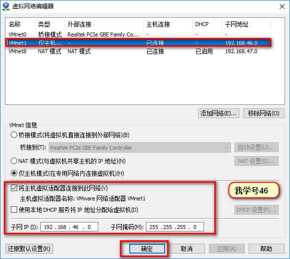设置虚拟机的网络方式具体步骤： 【虚拟机右键】->【虚拟机设置】->【网络适配器】，如下图：

Note
我这个主机是最小化安装的，环境都没有配置，下面有写环境配置相关的， 自行跳过。
1.1.2. 配置yum源、禁用selinux和防火墙¶
1.1.2.1. 查看网络配置¶
[root@localhost network-scripts]# cat ifcfg-eth0
DEVICE=eth0
TYPE=Ethernet
ONBOOT=yes
NM_CONTROLLED=no
BOOTPROTO=static
IPADDR=192.168.46.6
PREFIX=24
GATEWAY=192.168.46.1
[root@localhost network-scripts]# cat ifcfg-eth1
DEVICE=eth1
TYPE=Ethernet
ONBOOT=yes
NM_CONTROLLED=no
BOOTPROTO=dhcp
1.1.2.2. yum 配置¶
[root@localhost network-scripts]# cd /etc/yum.repos.d/
[root@localhost yum.repos.d]# ls
CentOS-Base.repo CentOS-Debuginfo.repo CentOS-fasttrack.repo CentOS-Media.repo CentOS-Vault.repo
[root@localhost yum.repos.d]# cd
[root@localhost ~]# cd /etc/yum.repos.d/
[root@localhost yum.repos.d]# ls
CentOS-Base.repo CentOS-Debuginfo.repo CentOS-fasttrack.repo CentOS-Media.repo CentOS-Vault.repo
[root@localhost yum.repos.d]# mkdir bak # 创建备份目录
[root@localhost yum.repos.d]# mv *.repo bak/ # 备份文件
[root@localhost yum.repos.d]# ls
bak
[root@localhost yum.repos.d]# vim cdrom.repo # 编辑cdrom.repo
-bash: vim: command not found
[root@localhost yum.repos.d]# vi cdrom.repo # 编辑cdrom.repo
[root@localhost yum.repos.d]# cat cdrom.repo # 查看cdrom
[base]
name=base
baseurl=file:///mnt/cdrom
gpgcheck=0
enable=1
[root@localhost yum.repos.d]# mkdir /mnt/cdrom # 创建挂载点
[root@localhost yum.repos.d]# mount /dev/cdrom /mnt/cdrom # 挂载
mount: block device /dev/sr0 is write-protected, mounting read-only
[root@localhost yum.repos.d]# yum clean all # 清空缓存
[root@localhost yum.repos.d]# yum makecache # 生成yum缓存
1.1.2.3. selinux和防火墙关闭¶
[root@localhost yum.repos.d]# sed -i 's@SELINUX=enforcing@SELINUX=disabled@' /etc/sysconfig/selinux
[root@localhost yum.repos.d]# setenforce 0
[root@localhost yum.repos.d]# service iptables stop
[root@localhost yum.repos.d]# chkconfig iptables off
1.1.2.4. vim安装¶
[root@localhost yum.repos.d]# yum install vim -y # 安装vim
1.1.3. dhcp的安装¶
[root@localhost yum.repos.d]# yum install dhcp -y # 安装dhcp
[root@localhost yum.repos.d]# rpm -ql dhcp # 查看dhcp服务
1.1.4. dhcp的配置¶
dhcp的8种报文
[root@localhost dhcp]# cd /etc/dhcp # 进入dhcp工作目录
[root@localhost dhcp]# cp /usr/share/doc/dhcp-4.1.1/dhcpd.conf.sample dhcpd.conf
[root@localhost dhcp]# vim dhcpd.conf # 编辑主配置文件
[root@localhost dhcp]# cat dhcpd.conf # 查看dhcp文件
# dhcpd.conf
#
# Sample configuration file for ISC dhcpd
#
# option definitions common to all supported networks...
option domain-name "linuxpanda.tech";
option domain-name-servers ns1.linuxpanda.tech, ns2.linuxpanda.tech;
default-lease-time 86400;
max-lease-time 864000;
# 这个地方配置动态ip范围
subnet 192.168.46.0 netmask 255.255.255.0 {
range dynamic-bootp 192.168.46.100 192.168.46.200 ;
option routers 192.168.46.6 ;
}
# 这个地方配置静态的ip
host boss {
hardware ethernet 08:00:07:26:c0:a5;
fixed-address 192.168.46.2 ;
}
[root@localhost dhcp]# service dhcpd restart
Shutting down dhcpd: [ OK ]
Starting dhcpd: [ OK ]
Note
如果dhcpd启动失败，可以从/var/log/message文件的后30行获取帮助信息。
1.1.5. dhcp的测试¶
在另外一个虚拟机里面测试
[root@localhost ~]# dhclient -d # 前台执行dhcp命令
Internet Systems Consortium DHCP Client 4.2.5
Copyright 2004-2013 Internet Systems Consortium.
All rights reserved.
For info, please visit https://www.isc.org/software/dhcp/
Listening on LPF/ens37/00:0c:29:ad:b0:fc
Sending on LPF/ens37/00:0c:29:ad:b0:fc
Listening on LPF/ens33/00:0c:29:ad:b0:f2
Sending on LPF/ens33/00:0c:29:ad:b0:f2
Sending on Socket/fallback
DHCPDISCOVER on ens37 to 255.255.255.255 port 67 interval 7 (xid=0x5b54a061)
DHCPDISCOVER on ens33 to 255.255.255.255 port 67 interval 8 (xid=0x3d839dcc)
DHCPDISCOVER on ens37 to 255.255.255.255 port 67 interval 18 (xid=0x5b54a061)
DHCPREQUEST on ens37 to 255.255.255.255 port 67 (xid=0x5b54a061)
DHCPOFFER from 172.18.0.1
DHCPACK from 172.18.0.1 (xid=0x5b54a061)
bound to 172.18.102.149 -- renewal in 43001 seconds.
DHCPDISCOVER on ens33 to 255.255.255.255 port 67 interval 15 (xid=0x3d839dcc)
DHCPREQUEST on ens33 to 255.255.255.255 port 67 (xid=0x3d839dcc)
DHCPOFFER from 192.168.46.6
DHCPACK from 192.168.46.6 (xid=0x3d839dcc)
bound to 192.168.46.100 -- renewal in 40804 seconds.
从上面的测试中，我们可以看出来ens33这个hostonly网卡的ip绑定了192.168.46.100这个ip,是我们dhcp服务器range的第一个ip。
1.1.6. dhcpd的详细参数¶
关于dhcpd的详细配置，我们可以使用”man dhcpd.conf”命令快速获取帮助，我这里简单介绍下常用参数
1.1.7. dhcp的主要文件¶
[root@localhost ~]# rpm -ql dhcp # 查看dhcp server的主要文件
/etc/dhcp # dhcp主配置目录
/etc/dhcp/dhcpd.conf # dhcpd的主配置文件
/etc/rc.d/init.d/dhcpd # dhcpd的init文件
/usr/share/doc/dhcp-4.1.1/dhcpd.conf.sample # dhcp的样例配置文件
/var/lib/dhcpd/dhcpd.leases # dhcp分配的ip记录信息文件
[root@localhost ~]# rpm -ql dhclient # dhcp客户端的主要文件
/sbin/dhclient # dhcp客户端软件
/var/lib/dhclient # dhcp获取的ip记录信息文件
2. Rsync同步¶
2.1. rsync入门¶
2.1.1. rsync简介¶
Rsync是一个很棒的小工具，在你的机器上很容易设置。而不是有一个脚本的FTP会话，或其他形式的文件传输脚本 rsync只复制文件的差异，实际上差异就是已经改变的文件，如果你想要的安全可以通过ssh。但它的意思是：
- 区别 - 只传输实际更改的文件，而不是整个文件。这使得更新速度更快，尤其是在像调制解调器这样的慢速链路上。即使只更改了一个字节，FTP也会传输整个文件。
- 压缩 - 差异的细小部分随即进行压缩，进一步节省文件传输时间并减少网络负载。
- 安全外壳 - 你的安全意识就是这样，你应该都使用它。来自rsync的流通过ssh协议来加密会话，而不是rsh，这也是一个选项。
作为备份/镜像工具，rsync是相当通用的，提供了超出上述的许多功能。以下是一些rsync的其他主要功能：
- 支持复制链接，设备，所有者，组和权限
- 排除和排除类似于GNU tar的选项
- CVS排除模式，用于忽略CVS将忽略的相同文件
- 不需要root权限
- 管理文件传输以最小化延迟成本
- 支持匿名或认证的rsync服务器(理想的镜像)
2.1.2. rsync是如何工作的¶
rsync是cs架构的，也就是必须有客户端和服务端的，您必须通过以守护进程模式运行rsync(命令行中的”rsync –daemon”)并设置一个简短易用的配置文件（/etc/rsyncd.conf）来将一台或另一台机器设置为”rsync服务器” ）。
任何安装了rsync的机器都可以与运行rsync守护进程的机器同步。您可以使用它来进行备份，镜像文件系统，分发文件或任意数量的类似操作。通过使用只传输文件之间的差异（类似于补丁文件）的”rsync算法”，然后压缩它们 - 您将得到一个非常高效的系统。
2.1.3. rsyncd的主要参数设置¶
我们使用一天服务器指定为rsync的服务器，需要运行rsync指定–daemon以守护进程运行并且需要给它提供一个配置文件，这个配置就是、/etc/rsyncd.conf文件。
主要的全局的参数
motd file # 这个是欢迎提示信息，指定的是文件名，把内容写到这个文件里面
pid file # 守护进程的运行pid文件
port # 运行端口，默认是873
address # 默认是监听在所有ip上的，有时候我们只需要监听在内部ip上就需要改变这个值
主要的模块参数
comment # 注释信息
path # 需要同步的路径，这个参数必须指定的。
use chroot # 如果为true，rsync守护进程将在与客户端开始文件传输的时候切换到指定路径运行，提供更高的安全性。
charset # 存储文件名的字符集
max connections # 指定最大连接数
log file # 日志文件路径
syslog facility # 运行你指定系统日志工具名称的，默认是daemon,你可以设置其他值，比如auth, authpriv, cron, daemon, ftp,
kern, lpr, mail, news, security, syslog, user, uucp, local0-7.
max verbosity # 这个参数是控制日志级别的，数值范围1-4，默认1，越大日志信息越丰富。同步文件夹大的时候，建议设置默认值1，避免日志文件过大。
lock file # 锁文件，默认是/var/run/rsyncd.lock.
read only # 这个是只读的，默认都是只读的。
write only # 这个参数控制客户端是否可以下载的，默认是可以下载的，不建议修改。
list # 此参数确定当客户要求提供可用模块列表时，是否列出此模块
uid # 守护进程以那个用户身份运行
gid # 守护进程以那个用户组运行
exclude # 该参数采用空格分隔的守护进程排除模式列表
include # 该参数采用空格分隔的守护进程包含模式列表
exclude from # 类似exclude，不过需要写到文件里面，每行一个，这个参数写文件名
include from # 类似include，不过需要写到文件里面，每行一个，这个参数写文件名
incoming chmod # 对进入文件chmod修改权限的
outgoing chmod # 对出去的文件chmod修改权限的。
auth users # 认证的用户
secrets file # 密码文件，配合auth users使用，格式为"username:password" 或者 "@groupname:password"
strict modes # 是否检查密码文件的权限，默认值true,适应windows操作系统运行rsync
hosts allow # 运行的主机，格式直接也是比较多的。常用格式如下
192.168.2.2
192.168.2.2/24
192.168.2.2/255.255.255.0
主机名
hosts deny # 不允许的主机
ignore errors # 忽略i/o错误
ignore nonoreadable # 这告诉rsync守护程序完全忽略用户不可读的文件
transfer logging # 这个参数使得每个文件的日志记录下载和上传的格式有点类似于ftp守护进程所使用的格式
log format # 日志格式的，特别多，参考https://rsync.samba.org/ftp/rsync/rsyncd.conf.html
timeout # 此参数允许您覆盖客户端选择此模块的I / O超时。 使用这个参数你可以确保rsync不会永远等待死客户端，默认600s
dont compress # 不压缩
2.1.4. 样例的配置文件¶
uid = root
gid = root
use chroot = yes
max connections = 4
syslog facility = local5
pid file = /var/run/rsyncd.pid
[ftp]
path = /var/ftp/pub
comment = whole ftp area (approx 6.1 GB)
[sambaftp]
path = /var/ftp/./pub/samba
comment = Samba ftp area (approx 300 MB)
[rsyncftp]
path = /var/ftp/./pub/rsync
comment = rsync ftp area (approx 6 MB)
[sambawww]
path = /public_html/samba
comment = Samba WWW pages (approx 240 MB)
[cvs]
path = /data/cvs
comment = CVS repository (requires authentication)
auth users = tridge, susan
secrets file = /etc/rsyncd.secrets
密码文件样例：
tridge:mypass
susan:herpass
Attention
密码文件格式为username:password,且这个用户不必要在系统存在，密码文件权限为600。
2.2. linux同步到linux¶
linux同步到linux这个情况相对其他情况是最简单的。
2.2.1. 环境介绍¶
- 2个机器
- centos7(172.18.46.7),centos6(172.18.46.6)
- centos7(/app/web)===>centos6(/app/web)
我们要完成的功能是centos7开发人员生成的web数据放到centos7的/app/web目录后，centos6能自动拉取centos7的目录保持一致。
rsync我们知道是分客户端和服务端的，那具体对于上面的情况可以怎么安排呢？
方案1： 我们在centos7上搭建服务端，centos6作为客户端，然后centos6去主动拉取centos7的数据。
方案2： 我们在centos6上搭建服务端，centos7作为客户端，然后centos7主动把自己的文件推送到centos6上去。
我们下面的文章主要按照方案2来实施。
Note
不管如何，拉取和推送都是在客户端完成的。
2.2.2. 服务端的配置¶
2.2.2.1. 安装rsync软件¶
查看是否安装
[root@centos74 ~]$ rpm -ql rsync
[root@centos74 ~]$ yum -y install rsync
[root@centos69 ~]$ rpm -ql rsync
[root@centos69 ~]$ yum -y install rsync
2.2.2.2. 启用rsync¶
在centos7上启用rsyncd(服务端进程)
[root@centos74 ~]$ systemctl status rsyncd
● rsyncd.service - fast remote file copy program daemon
Loaded: loaded (/usr/lib/systemd/system/rsyncd.service; disabled; vendor preset: disabled)
Active: inactive (dead)
[root@centos74 ~]$ systemctl enable rsyncd
Created symlink from /etc/systemd/system/multi-user.target.wants/rsyncd.service to /usr/lib/systemd/system/rsyncd.service.
[root@centos74 ~]$ systemctl start rsyncd
[root@centos74 ~]$ systemctl status rsyncd
● rsyncd.service - fast remote file copy program daemon
Loaded: loaded (/usr/lib/systemd/system/rsyncd.service; enabled; vendor preset: disabled)
Active: active (running) since Sun 2018-01-07 19:04:02 CST; 6s ago
Main PID: 38913 (rsync)
CGroup: /system.slice/rsyncd.service
└─38913 /usr/bin/rsync --daemon --no-detach
[root@centos74 ~]$ netstat -tunlp |grep 873
tcp 0 0 0.0.0.0:873 0.0.0.0:* LISTEN 38913/rsync
tcp6 0 0 :::873 :::* LISTEN 38913/rsync
Attention
rsyncd服务监听在873端口，如果有防火墙请放行或者关闭。
2.2.2.3. 编辑rsyncd的配置文件¶
编辑rsyncd的配置文件(可能没有)
[root@centos74 ~]$ vim /etc/rsyncd.conf
[root@centos74 ~]$ cat /etc/rsyncd.conf
uid = root
gid = root
user chroot = no
max connections = 200
timeout = 600
pid file = /var/run/rsyncd.pid
lock file = /var/run/rsyncd.lock
log file = /var/run/rsyncd.log
[web]
path = /app/web/
ignore errors
read only = no
list = no
hosts allow = 172.18.0.0/16
auth users = web
secrets file = /etc/rsyncd.pass
2.2.2.4. 创建服务器密码文件¶
密码文件的格式是：username:password
[root@centos74 ~]$ (umask 266; echo "web:web" > /etc/rsyncd.pass)
[root@centos74 ~]$ cat /etc/rsyncd.pass
web:web
[root@centos74 ~]$ ll /etc/rsyncd.pass
-r--------. 1 root root 8 Jan 7 19:16 /etc/rsyncd.pass
2.2.2.6. 重启服务¶
[root@centos74 ~]$ systemctl restart rsyncd
[root@centos74 ~]$ systemctl status rsyncd
● rsyncd.service - fast remote file copy program daemon
Loaded: loaded (/usr/lib/systemd/system/rsyncd.service; enabled; vendor preset: disabled)
Active: active (running) since Sun 2018-01-07 19:30:12 CST; 9s ago
Main PID: 39375 (rsync)
CGroup: /system.slice/rsyncd.service
└─39375 /usr/bin/rsync --daemon --no-detach
2.2.3. 客户端端的配置¶
2.2.3.2. 创建同步密码文件¶
由于我们的服务端有密码配置，客户端需要密码才能同步我们服务端的数据，且ip在服务端的运行范围内。
密码文件格式： passwd
[root@centos66 ~]$ (umask 066; echo "web" > /etc/rsync.pass)
[root@centos66 ~]$ cat /etc/rsync.pass
web
[root@centos66 ~]$ ll /etc/rsync.pass
-rw------- 1 root root 4 Dec 26 08:23 /etc/rsync.pass
Note
这里我们只需要指定密码即可，不用用户名。
2.2.3.3. 初步测试同步¶
[root@centos66 app]$ rsync -avz web@72.18.46.7::web --password-file=/etc/rsync.pass /app/web
receiving incremental file list
./
sysconfig/
sysconfig/.zip
sysconfig/anaconda
sysconfig/atd
.................这里省去了很多文件..................................
sysconfig/rhn/clientCaps.d/
sent 1934 bytes received 1170218 bytes 2344304.00 bytes/sec
total size is 1322779 speedup is 1.13
2.2.4. 写脚本完成自动拉取服务器数据¶
安装inotify-tool工具
[root@centos66 yum.repos.d]$ yum install inotify-tools
编写rsync脚本
#!/bin/bash
user=web
remote_module=web
local_dir=/app/web/
ip=72.18.46.7
password_file=/etc/rsync.pass
/usr/bin/inotifywait -mrq --timefmt '%d/%m/%y%H:%M' --format '%T %w %f' -e modify,delete,create,attrib $local_dir | while read DATE TIME DIR FILE;do
filechange=${DIR}${FILE}
# 拉取服务器数据
#/usr/bin/rsync -avz --delete --progress --password-file=$password_file $user@$ip::$remote_module $local_dir &
# 推送本机的数据
/usr/bin/rsync -avz --delete --progress --password-file=$password_file $local_dir $user@$ip::$remote_module &
date_str=/var/log/rsync_$(date "+%F").log
echo "At ${TIME} on ${DATE}, file $filechange was backed up via rsynce" >> $date_str 2>&1
done
2.2.5. 配置计划任务¶
将上面的脚本放到while true里面即可，或者修改脚本为sysv脚本。
2.3. linux推送到window¶
在看这个文章的时候，请确保你看完了 rsync入门。
这个文章的主要讲解如何使用rsync来把window的是文件同步到linux上去。
2.3.1. 环境介绍¶
- 2个机器
- centos7(192.168.1.109)，windows10(192.168.1.104)
- centos(/app/web)===>window(c:appweb)
我们要完成的功能是centos7的数据更新后，自动推送到window机器上面。
这里我们选择windows作为服务端，centos7作为客户端，然后centos7去监控本地数据推送给window数据。
2.3.2. 服务端的配置¶
2.3.2.1. 下载cygwin¶
windows下是没有rync的， 需要安装软件来提供rsync功能的。
我们下载 cygwin64.exe , 详细的地址可以访问 cywin官网
安装步骤截图：

 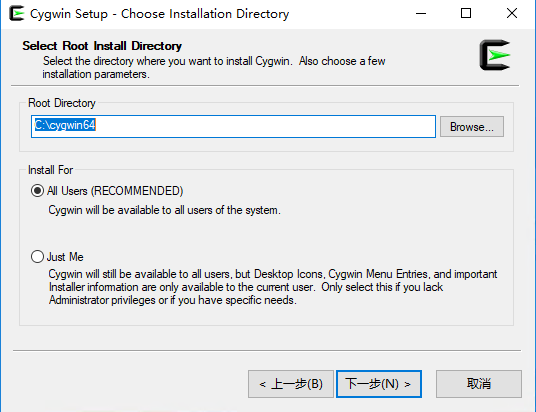
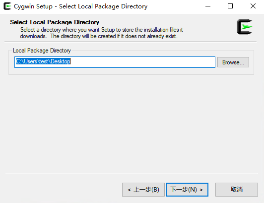
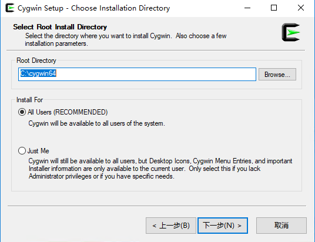
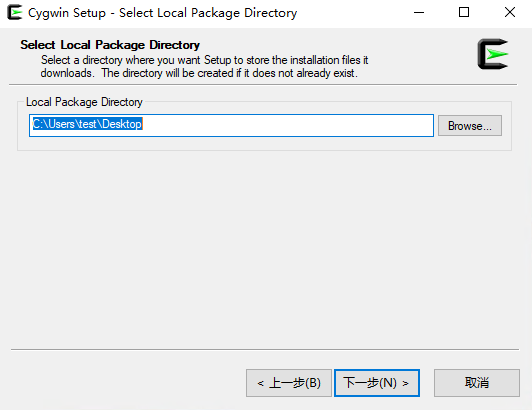
 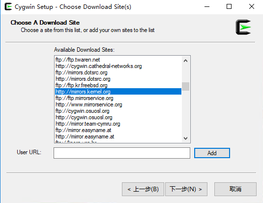
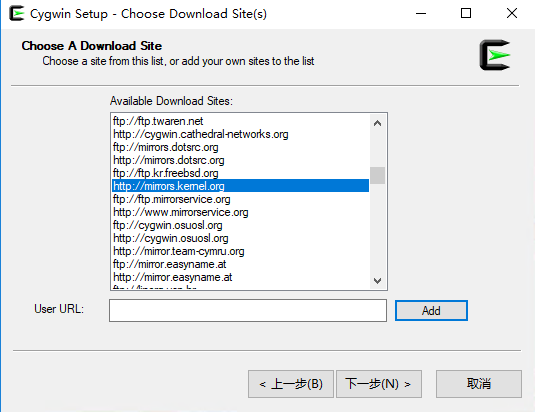


 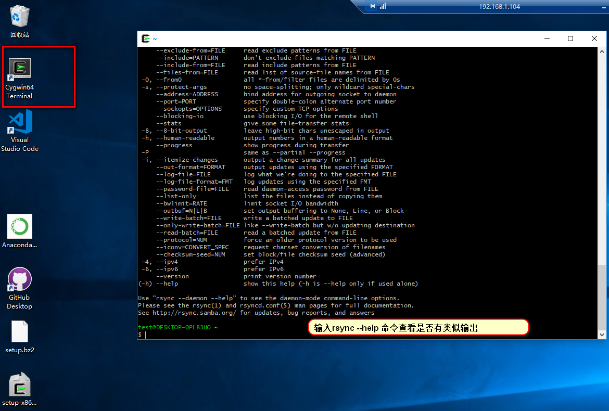
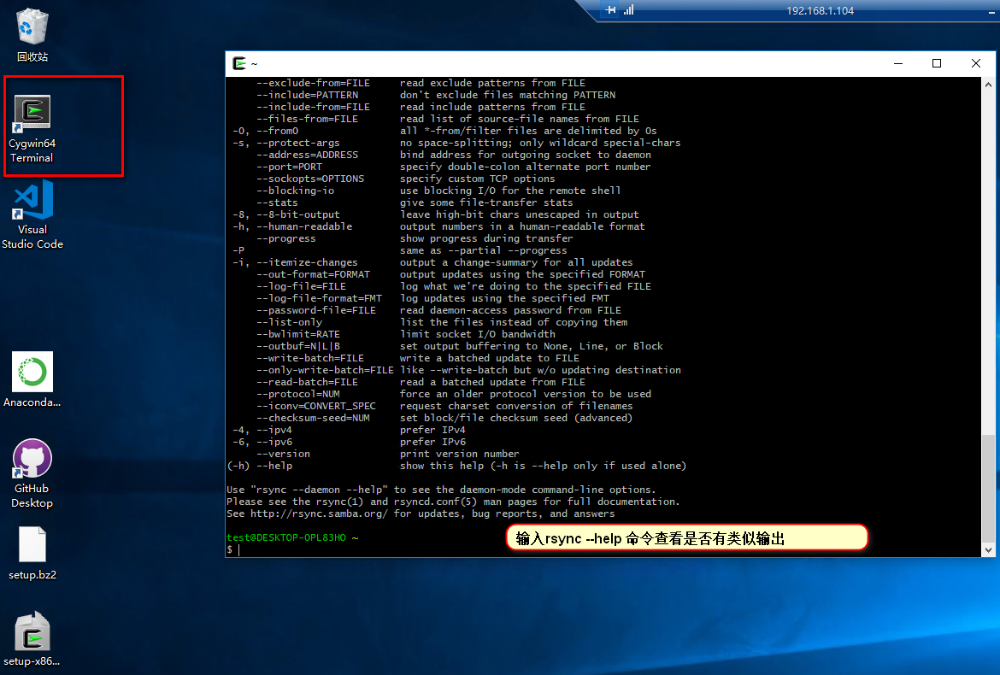
安装完毕cygwin之后，其实就是一个linux环境， 剩下的工作和linux和linux同步基本没有太大区别了。
2.3.3. 编辑rsyncd的配置文件¶
rsyncd的配置文件在“C:cygwin64etcrsyncd.conf”(需要自己创建conf文件)
使用记事本编辑这个conf文件
uid = test
gid = None
user chroot = no
max connections = 200
timeout = 600
pid file = /var/run/rsyncd.pid
lock file = /var/run/rsyncd.lock
log file = /var/run/rsyncd.log
[web]
path = /cygdriver/c/app/web/
ignore errors
read only = no
list = no
hosts allow = 192.168.1.0/24
auth users = web
secrets file = /etc/rsyncd.pass
Note
我的uid是test，你的根据你的情况进行修改，如果不知道可以打开cygwin64Terminal终端，输入 echo $USER查看。
2.3.3.1. 创建服务器密码文件¶
上面指定了密码文件位置为/etc/rsync.pass，我们需要创建这个文件。
web:web
使用cygwin64Terminal修改这个密码文件的权限为600。

2.3.3.2. 启动rsync服务¶
# 使用cygwin64Terminal 去启动rsync的服务进程
rsync --daemon
psaux aux |grep rsync
2.3.3.4. 修改目录权限。¶
window的权限和我们安装的cygwin有点不同的，需要在window上给我们的用户权限，我的是test用户。
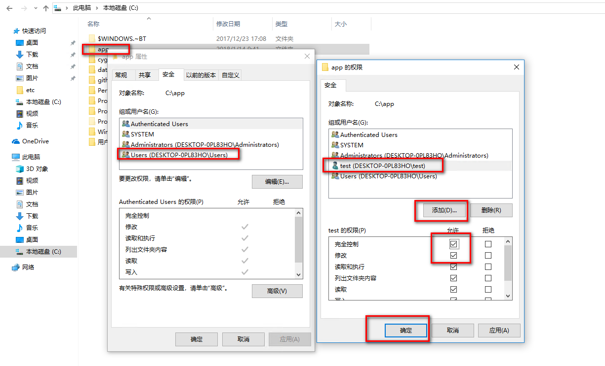2.3.4. 客户端配置¶
2.3.4.1. 安装rsync软件¶
查看是否安装
[root@localhost web ]$ rpm -ql rsync
[root@localhost web]$ yum -y install rsync
2.3.4.2. 先验证下服务端是否可以访问¶
[root@localhost web]# telnet 192.168.1.104 873
Trying 192.168.1.104...
Connected to 192.168.1.104.
Escape character is '^]'.
@RSYNCD: 31.0
出现了RSYNC的字样说明服务端的rsync服务是开启的了。
2.3.4.3. 创建同步密码文件¶
由于我们的服务端有密码配置，客户端需要密码才能同步我们服务端的数据，且ip在服务端的运行范围内。
密码文件格式： passwd
[root@centos66 ~]$ (umask 066; echo "web" > /etc/rsync.pass)
[root@centos66 ~]$ cat /etc/rsync.pass
web
[root@centos66 ~]$ ll /etc/rsync.pass
-rw------- 1 root root 4 Dec 26 08:23 /etc/rsync.pass
Note
这里我们只需要指定密码即可，不用用户名。
2.3.4.4. 初步测试同步¶
[root@localhost web]# rsync -avz web@192.168.1.104::web --password-file=/etc/rsync.pass /app/web
receiving incremental file list
file has vanished: "/proc" (in web)
file has vanished: "/cygdrive/c" (in web)
./
新建 RTF 文档.rtf
cygdrive/
dev/
sent 124 bytes received 598 bytes 131.27 bytes/sec
total size is 7 speedup is 0.01
rsync warning: some files vanished before they could be transferred (code 24) at main.c(1518) [generator=3.0.9]
[root@localhost web]# ll
total 4
dr-xr-xr-x. 2 197609 197121 6 Jan 14 10:24 cygdrive
dr-xr-xr-x. 2 197609 197121 238 Jan 14 10:24 dev
-rwxrwx---. 1 197609 197121 0 Jan 14 09:41 test.txt
Note
这里我不知道为何也罢cygdrive和dev这个目录同步过来了。 不知道为啥的.
2.3.5. 写脚本完成自动拉取服务器数据¶
安装inotify-tool工具
[root@centos66 yum.repos.d]$ yum install inotify-tools
编写rsync脚本
#!/bin/bash
user=web
remote_module=web
local_dir=/app/web/
ip=192.168.1.104
password_file=/etc/rsync.pass
/usr/bin/inotifywait -mrq --timefmt '%d/%m/%y%H:%M' --format '%T %w %f' -e modify,delete,create,attrib $local_dir | while read DATE TIME DIR FILE;do
filechange=${DIR}${FILE}
# 拉取服务器数据
#/usr/bin/rsync -avz --delete --progress --password-file=$password_file $user@$ip::$remote_module $local_dir &
# 推送本机的数据
/usr/bin/rsync -avz --delete --progress --password-file=$password_file $local_dir $user@$ip::$remote_module &
date_str=/var/log/rsync_$(date "+%F").log
echo "At ${TIME} on ${DATE}, file $filechange was backed up via rsynce" >> $date_str 2>&1
done
2.3.6. 配置计划任务¶
将上面的脚本放到while true里面即可，或者修改脚本为sysv脚本。
2.4. window推送到linux¶
这个基本和linux推送到window差的不多。 linux推送到window 这个基本和linux推送到window差的不多。 linux推送到window
2.5. window推送到window¶
这个基本和linux推送到window差的不多。 linux推送到window
3. 自动化安装¶
3.1. 光盘自动化安装¶
3.1.1. 制作ks文件¶
ks的文件制作是比较麻烦的，但是我们在系统安装完毕的时候会生成当前系统的默认安装配置”/root/anaconda-ks.cfg”， 我们可以直接在这个文件的基础上稍作修改即可。
[root@localhost ~]# ls
anaconda-ks.cfg install.log install.log.syslog
[root@localhost ~]# cp anaconda-ks.cfg anaconda-ks.cfg.bak
[root@localhost ~]# vim anaconda-ks.cfg
[root@localhost ~]# yum list all |grep kickstart
pykickstart.noarch 1.74.22-1.el6 base
system-config-kickstart.noarch 2.8.6.6-1.el6 base
[root@localhost ~]# yum install pykickstart -y
[root@localhost ~]# ksvalidator anaconda-ks.cfg
[root@localhost ~]# cat anaconda-ks.cfg
# Kickstart file automatically generated by anaconda.
#version=DEVEL
install
cdrom
reboot
text
#xconfig --startxonboot
#eula --agreed
lang en_US.UTF-8
firstboot --disable
keyboard us
network --onboot no --device eth0 --bootproto dhcp --noipv6
rootpw --iscrypted $6$NE46h0OLL1e8dgDc$6Kpz4orvUP87oYdbaHefWtUbD12ITS5RIJPouwHn.LrluP2T9280aoFf9Cs5yvnJ9XIZJHnlV26oa1ECe39Bs1
firewall --disabled
authconfig --enableshadow --passalgo=sha512
selinux --disabled
timezone Asia/Shanghai
bootloader --location=mbr --driveorder=sda --append="crashkernel=auto rhgb quiet"
# The following is the partition information you requested
# Note that any partitions you deleted are not expressed
# here so unless you clear all partitions first, this is
# not guaranteed to work
clearpart --all --drives=sda
zerombr
part /boot --fstype=ext4 --size=500
part pv.008002 --size=200000
volgroup VolGroup --pesize=4096 pv.008002
logvol /home --fstype=ext4 --name=lv_home --vgname=VolGroup --grow --size=100
logvol / --fstype=ext4 --name=lv_root --vgname=VolGroup --grow --size=1024 --maxsize=51200
logvol swap --name=lv_swap --vgname=VolGroup --grow --size=1984 --maxsize=1984
#repo --name="CentOS" --baseurl=cdrom:sr0 --cost=100
%packages
@core
@server-policy
@workstation-policy
%end
%post
touch /root/post.file
%end
Warning
如果lvm的pv设置超过了后续安装的磁盘大小，就使用磁盘的全部空间。
这里为了方便看出我修改了那些。提供一个vimdiff命令对比图：

ks的主要几项说明
cdrom # 光盘启动
reboot # 安装完毕自动重启
text # 字符安装
firstboot --disable # 第一次启动初始化工作禁用
rootpw # 这个行是定义root密码的，可以通过openssl passwd -1 生成
clearpart --all --drives=sda # 清空磁盘分区
zerombr # 清空mbr信息
%post%end # 安装后脚本，这个时候系统已经安装完毕了，写bash脚本即可
3.1.2. 创建自制目录¶
[root@localhost ~]# mount /dev/cdrom /mnt/cdrom # 挂载光盘
[root@localhost ~]# mkdir /app -pv # 创建一个光盘刻录目录
[root@localhost ~]# cp -av /mnt/cdrom /app/centos6 # 把原有光盘数据copy过来
[root@localhost ~]# cd /app/centos6/ # 进入工作目录
[root@localhost centos6]# ll
[root@localhost centos6]# find /app/centos6/ -name TRANS.TBL # 查看TRANS.TBL文件
/app/centos6/TRANS.TBL
/app/centos6/isolinux/TRANS.TBL
/app/centos6/repodata/TRANS.TBL
/app/centos6/EFI/TRANS.TBL
/app/centos6/EFI/BOOT/TRANS.TBL
/app/centos6/images/TRANS.TBL
/app/centos6/images/pxeboot/TRANS.TBL
/app/centos6/Packages/TRANS.TBL
[root@localhost centos6]# find /app/centos6/ -name TRANS.TBL -exec rm -rf {} \; # 删除文件
[root@localhost centos6]# rm -rf repodata/* # 删除文件
[root@localhost centos6]# cp /mnt/cdrom/repodata/43* repodata/
[root@localhost centos6]# yum install createrepo -y # 安装createrepo工具
[root@localhost centos6]# createrepo -g repodata/43* . # 生成仓库
Spawning worker 0 with 6706 pkgs
Workers Finished
Gathering worker results
Saving Primary metadata
Saving file lists metadata
Saving other metadata
Generating sqlite DBs
Sqlite DBs complete
[root@localhost centos6]# ls -1 repodata/* # 查看下目录的文件是不是都自动生成了
[root@localhost centos6]# mkdir ks # 创建ks目录
[root@localhost centos6]# cp /root/anaconda-ks.cfg ks/ks.cfg # 把我们制作好的ks文件复制过来
[root@localhost centos6]# vim isolinux/isolinux.cfg # 编辑启动菜单
[root@localhost centos6]# cat isolinux/isolinux.cfg # 查看
default vesamenu.c32
#prompt 1
timeout 600
menu title Welcome to CentOS 6.9 From LinuxPanda Tech
label linux
menu label ^Install Auto From Cdrom
kernel vmlinuz
append initrd=initrd.img ks=cdrom:/ks/ks.cfg
label rescue
menu label ^Rescue installed system
kernel vmlinuz
append initrd=initrd.img rescue
label local
menu label Boot from ^local drive
menu default
localboot 0xffff
[root@localhost centos6]# yum install mkisofs -y # 安装mkisofs这个工具，用于制作iso
[root@localhost centos6]# mkisofs -R -J -T -v --no-emul-boot --boot-load-size 4 --boot-info-table \
-V "CentOS 6.9 x86_64 boot" -b isolinux/isolinux.bin -c isolinux/boot.cat -o /var/ftp/pub/centos6.iso /app/centos6/
[root@localhost centos6]# ll /root/boot.iso -h # 文件太大了。 使用ftp传送出来
-rw-r--r--. 1 root root 5.8G Jan 10 20:40 /root/boot.iso
[root@localhost centos6]# yum install vsftpd # 安装ftp工具
[root@localhost centos6]# service vsftpd restart # 启动ftp功能


3.2. pxe+kickstart自动化安装¶
pxe的工作原理：
- Client向PXE Server上的DHCP发送IP地址请求消息，DHCP检测Client是否合法 （主要是检测Client的网卡MAC地址），如果合法则返回Client的IP地址， 同时将启动文件pxelinux.0的位置信息一并传送给Client
- Client向PXE Server上的TFTP发送获取pxelinux.0请求消息，TFTP接收到消息之后 再向Client发送pxelinux.0大小信息，试探Client是否满意，当TFTP收到Client发回的同意大小信息之后， 正式向Client发送pxelinux.0
- Client执行接收到的pxelinux.0文件
- Client向TFTP Server发送针对本机的配置信息文件（在TFTP 服务的pxelinux.cfg目录下）， TFTP将配置文件发回Client，继而Client根据配置文件执行后续操作。
- Client向TFTP发送Linux内核请求信息，TFTP接收到消息之后将内核文件发送给Client
- Client向TFTP发送根文件请求信息，TFTP接收到消息之后返回Linux根文件系统
- Client启动Linux内核
- Client下载安装源文件，读取自动化安装脚本
3.2.1. 配置dhcp服务器¶
详细的可以参考 DHCP服务搭建
我们需要在原有的dhcp的配置稍作修改，最终dhcp配置如下 ：
[root@localhost tftpboot]# vim /etc/dhcp/dhcpd.conf
[root@localhost tftpboot]# cat /etc/dhcp/dhcpd.conf
# dhcpd.conf
#
# Sample configuration file for ISC dhcpd
#
# option definitions common to all supported networks...
option domain-name "linuxpanda.tech";
option domain-name-servers ns1.linuxpanda.tech, ns2.linuxpanda.tech;
default-lease-time 86400;
max-lease-time 864000;
subnet 192.168.46.0 netmask 255.255.255.0 {
range dynamic-bootp 192.168.46.100 192.168.46.200 ;
option routers 192.168.46.6 ;
filename "pxelinux.0";
next-server 192.168.46.6;
}
host boss {
hardware ethernet 08:00:07:26:c0:a5;
fixed-address 192.168.46.2 ;
}
[root@localhost tftpboot]# service dhcpd restart
Shutting down dhcpd: [ OK ]
Starting dhcpd: [ OK ]
其中filename指明了引导文件名称，next-server提供了文件服务器的地址。
3.2.2. tfp-server的下载安装¶
[root@localhost ~]# yum install tftp-server -y
[root@localhost ~]# rpm -ql tftp-server
/etc/xinetd.d/tftp
/usr/sbin/in.tftpd
............其他文件.................
/var/lib/tftpboot
[root@localhost ~]# service xinetd start
Starting xinetd: [ OK ]
[root@localhost ~]# chkconfig tftp on
[root@localhost ~]# ss -tunl |grep 69
udp UNCONN 0 0 *:69
tftp依赖于xinet的，我们需要启动下xinetd 。
Warning
这个地方只能使用tftp-server，不能使用其他的ftp软件。
3.2.3. 安装httpd服务¶
[root@localhost tftpboot]# yum install httpd
[root@localhost tftpboot]# mkdir /var/www/html/centos/{6,7} -pv
[root@localhost tftpboot]# chkconfig httpd on
[root@localhost tftpboot]# service httpd start
Note
上面提示域名有点问题，暂时不用关心。
3.2.4. 挂载光盘¶
我们之前添加过centos6的光盘，这里再添加一个centos7的光盘。
[root@localhost tftpboot]# ls /dev/sr* # 查看我们添加的光盘
/dev/sr0
[root@localhost tftpboot]# find /sys/devices/ -name scan # 找scan文件
/sys/devices/pci0000:00/0000:00:07.1/host1/scsi_host/host1/scan
/sys/devices/pci0000:00/0000:00:07.1/host2/scsi_host/host2/scan
/sys/devices/pci0000:00/0000:00:10.0/host0/scsi_host/host0/scan
[root@localhost tftpboot]# for i in `find /sys/devices/ -name scan` ; do echo "- - -" > $i ; done # 启用下硬件识别
[root@localhost tftpboot]# ls /dev/sr* # 再次查看光盘信息，发现光盘已经被识别出来了。
/dev/sr0 /dev/sr1
[root@localhost tftpboot]# mount /dev/sr0 /var/www/html/centos/6/ # 挂载centos6
mount: block device /dev/sr0 is write-protected, mounting read-only
[root@localhost tftpboot]# mount /dev/sr1 /var/www/html/centos/7/ # 挂载centos7
mount: block device /dev/sr1 is write-protected, mounting read-only
我们这里都挂载好了，需要在宿主机上测试下httpd服务，宿主机测试http://192.168.46.6/centos/是否能访问。
3.2.5. 构建ks文件¶
我这里需要构建4个ks文件， centos6系统2个，centos7系统2个。
我这里在centos6操作,centos7的ks文件需要在centos7上制作，远程复制到这个机器上来。
[root@localhost ks]# cat ks6-mini.cfg
# Kickstart file automatically generated by anaconda.
#version=DEVEL
install
url --url=http://192.168.46.6/centos/6
reboot
text
#xconfig --startxonboot
#eula --agreed
lang en_US.UTF-8
firstboot --disable
keyboard us
network --onboot no --device eth0 --bootproto dhcp --noipv6
rootpw --iscrypted $6$NE46h0OLL1e8dgDc$6Kpz4orvUP87oYdbaHefWtUbD12ITS5RIJPouwHn.LrluP2T9280aoFf9Cs5yvnJ9XIZJHnlV26oa1ECe39Bs1
firewall --disabled
authconfig --enableshadow --passalgo=sha512
selinux --disabled
timezone Asia/Shanghai
bootloader --location=mbr --driveorder=sda --append="crashkernel=auto rhgb quiet"
# The following is the partition information you requested
# Note that any partitions you deleted are not expressed
# here so unless you clear all partitions first, this is
# not guaranteed to work
clearpart --all --drives=sda
zerombr
part /boot --fstype=ext4 --size=500
part pv.008002 --size=200000
volgroup VolGroup --pesize=4096 pv.008002
logvol /home --fstype=ext4 --name=lv_home --vgname=VolGroup --grow --size=100
logvol / --fstype=ext4 --name=lv_root --vgname=VolGroup --grow --size=1024 --maxsize=51200
logvol swap --name=lv_swap --vgname=VolGroup --grow --size=1984 --maxsize=1984
#repo --name="CentOS" --baseurl=cdrom:sr0 --cost=100
%packages
@core
@server-policy
@workstation-policy
%end
%post
touch /root/post.file
%end
[root@localhost ks]# cat ks6-desktop.cfg
# Kickstart file automatically generated by anaconda.
#version=DEVEL
install
url --url=http://192.168.46.6/centos/6
reboot
text
xconfig --startxonboot
#eula --agreed
lang en_US.UTF-8
firstboot --disable
keyboard us
network --onboot no --device eth0 --bootproto dhcp --noipv6
rootpw --iscrypted $6$NE46h0OLL1e8dgDc$6Kpz4orvUP87oYdbaHefWtUbD12ITS5RIJPouwHn.LrluP2T9280aoFf9Cs5yvnJ9XIZJHnlV26oa1ECe39Bs1
firewall --disabled
authconfig --enableshadow --passalgo=sha512
selinux --disabled
timezone Asia/Shanghai
bootloader --location=mbr --driveorder=sda --append="crashkernel=auto rhgb quiet"
# The following is the partition information you requested
# Note that any partitions you deleted are not expressed
# here so unless you clear all partitions first, this is
# not guaranteed to work
clearpart --all --drives=sda
zerombr
part /boot --fstype=ext4 --size=500
part pv.008002 --size=200000
volgroup VolGroup --pesize=4096 pv.008002
logvol /home --fstype=ext4 --name=lv_home --vgname=VolGroup --grow --size=100
logvol / --fstype=ext4 --name=lv_root --vgname=VolGroup --grow --size=1024 --maxsize=51200
logvol swap --name=lv_swap --vgname=VolGroup --grow --size=1984 --maxsize=1984
#repo --name="CentOS" --baseurl=cdrom:sr0 --cost=100
%packages
@base
@core
@debugging
@basic-desktop
@desktop-platform
@directory-client
@fonts
@general-desktop
@graphical-admin-tools
@input-methods
@internet-applications
@internet-browser
@legacy-x
@network-file-system-client
@x11
%end
%post
touch /root/post.file
%end
[root@localhost ks]# cat ks7-mini.cfg
#version=DEVEL
# System authorization information
auth --enableshadow --passalgo=sha512
# Use CDROM installation media
url --url=http://192.168.46.6/centos/7
# Use graphical install
firewall --disabled
selinux --disabled
text
reboot
# Run the Setup Agent on first boot
firstboot --disable
ignoredisk --only-use=sda
# Keyboard layouts
keyboard --vckeymap=us --xlayouts='us'
# System language
lang en_US.UTF-8
# Network information
network --bootproto=dhcp --device=ens33 --onboot=on --ipv6=auto --activate
network --hostname=centos7.magedu.com
# Root password
rootpw --iscrypted $6$pjgOq.zzypK4qeve$KrCLntLJyyvUPWElz5BIVztGXDov8Vj.gJaNTQ6gzeUHeC0KTeiMLPzScbCja37wJ58mzGgKeGooAMqZD7A2h/
# System services
services --disabled="chronyd"
# System timezone
timezone Asia/Shanghai --isUtc --nontp
user --name=zhao --password=$6$4FY9k21GGia3q98C$p8NRwX2/9w/MEqi03ASVe9aoyehDLRsnqV6QrkM3o38nLQW5Ox7cRvFWg8weQYoyPz85ro8D000tnVgGz225q0 --iscrypted --gecos="zhao"
# X Window System configuration information
xconfig --startxonboot
# System bootloader configuration
bootloader --location=mbr --boot-drive=sda
# Partition clearing information
zerombr
clearpart --all --initlabel
autopart --type=lvm
# Disk partitioning information
#part swap --fstype="swap" --ondisk=sda --size=2048
#part /boot --fstype="xfs" --ondisk=sda --size=1024
#part / --fstype="xfs" --ondisk=sda --size=51200
#part /app --fstype="xfs" --ondisk=sda --size=20480
eula --agreed
%packages
@^minimal
@core
%end
%addon com_redhat_kdump --disable --reserve-mb='auto'
%end
%anaconda
pwpolicy root --minlen=6 --minquality=1 --notstrict --nochanges --notempty
pwpolicy user --minlen=6 --minquality=1 --notstrict --nochanges --emptyok
pwpolicy luks --minlen=6 --minquality=1 --notstrict --nochanges --notempty
%end
[root@localhost ks]# cat ks7-desktop.cfg
#version=DEVEL
# System authorization information
auth --enableshadow --passalgo=sha512
# Use CDROM installation media
url --url=http://192.168.46.6/centos/7
# Use graphical install
firewall --disabled
selinux --disabled
text
reboot
# Run the Setup Agent on first boot
firstboot --disable
ignoredisk --only-use=sda
# Keyboard layouts
keyboard --vckeymap=us --xlayouts='us'
# System language
lang en_US.UTF-8
# Network information
network --bootproto=dhcp --device=ens33 --onboot=on --ipv6=auto --activate
network --hostname=centos7.magedu.com
# Root password
rootpw --iscrypted $6$pjgOq.zzypK4qeve$KrCLntLJyyvUPWElz5BIVztGXDov8Vj.gJaNTQ6gzeUHeC0KTeiMLPzScbCja37wJ58mzGgKeGooAMqZD7A2h/
# System services
services --disabled="chronyd"
# System timezone
timezone Asia/Shanghai --isUtc --nontp
user --name=zhao --password=$6$4FY9k21GGia3q98C$p8NRwX2/9w/MEqi03ASVe9aoyehDLRsnqV6QrkM3o38nLQW5Ox7cRvFWg8weQYoyPz85ro8D000tnVgGz225q0 --iscrypted --gecos="zhao"
# X Window System configuration information
xconfig --startxonboot
# System bootloader configuration
bootloader --location=mbr --boot-drive=sda
# Partition clearing information
zerombr
clearpart --all --initlabel
autopart --type=lvm
# Disk partitioning information
#part swap --fstype="swap" --ondisk=sda --size=2048
#part /boot --fstype="xfs" --ondisk=sda --size=1024
#part / --fstype="xfs" --ondisk=sda --size=51200
#part /app --fstype="xfs" --ondisk=sda --size=20480
eula --agreed
%packages
@base
@core
@dial-up
@fonts
@gnome-desktop
@guest-agents
@guest-desktop-agents
@internet-browser
@multimedia
@network-file-system-client
@networkmanager-submodules
@x11
%end
%addon com_redhat_kdump --disable --reserve-mb='auto'
%end
%anaconda
pwpolicy root --minlen=6 --minquality=1 --notstrict --nochanges --notempty
pwpolicy user --minlen=6 --minquality=1 --notstrict --nochanges --emptyok
pwpolicy luks --minlen=6 --minquality=1 --notstrict --nochanges --notempty
%end
%post
systemctl set-default multi-user.target
systemctl disable initial-setup-graphical.service
%end
[root@localhost ks]# ll # 这里发现权限有点问题，400的文件权限apache是无法访问的，修改下。
total 16
-rw-------. 1 root root 1479 Jan 10 23:14 ks6-desktop.cfg
-rw-------. 1 root root 1300 Jan 10 22:51 ks6-mini.cfg
-rw-r--r--. 1 root root 1927 Jan 10 23:13 ks7-desktop.cfg
-rw-r--r--. 1 root root 1774 Jan 10 23:10 ks7-mini.cfg
[root@localhost ks]# chmod 644 *
一共四个文件。
Note
ks文件的编写可以手工编写的，建议是使用system-config-kickstart图形界面加载/root/anaconda-ks.cfg修改另存。
3.2.6. 填充tftp目录内容¶
pxe的配置需要几个文件的：
initrd.img # 根文件系统
vmlinuz # 内核
menu.c32 # 启动菜单
pxelinux.0 # pxelinux
pxelinux.cfg/default # pxelinux配置文件
[root@localhost ks]# cd /var/lib/tftpboot/
[root@localhost tftpboot]# mkdir {6,7}
[root@localhost tftpboot]# cp /var/www/html/centos/6/isolinux/{vmlinuz,initrd.img} 6/
[root@localhost tftpboot]# cp /var/www/html/centos/7/isolinux/{vmlinuz,initrd.img} 7/
[root@localhost tftpboot]# mkdir pxelinux.cfg
[root@localhost tftpboot]# cp /var/www/html/centos/7/isolinux/isolinux.cfg ./pxelinux.cfg/default
[root@localhost tftpboot]# vim pxelinux.cfg/default
[root@localhost tftpboot]# cat pxelinux.cfg/default
default menu.c32
timeout 600
menu title CentOS 6 or 7 | made by zhaojiedi1992@linuxpanda.tech
label centos7-mini
menu label Install CentOS 7-mini
kernel 6/vmlinuz
append initrd=7/initrd.img ks=http://192.168.46.6/ks/ks7-mini.cfg
label centos7-Desktop
menu label Install CentOS 7-desktop
kernel 6/vmlinuz
append initrd=7/initrd.img ks=http://192.168.46.6/ks/ks7-desktop.cfg
label centos6-mini
menu label Install CentOS 6-mini
kernel 6/vmlinuz
append initrd=6/initrd.img ks=http:192.168.46.6//ks/ks6-mini.cfg
label centos6-desktop
menu label Install CentOS 6-desktop
kernel 6/vmlinuz
append initrd=6/initrd.img ks=http://192.168.46.6/ks/ks6-desktop.cfg
label local
menu default
menu label Boot from ^local drive
localboot 0xffff
[root@localhost tftpboot]# cp /usr/share/syslinux/pxelinux.0 .
[root@localhost tftpboot]# cp /usr/share/syslinux/menu.c32 .
[root@localhost tftpboot]# tree
.
├── 6
│ ├── initrd.img
│ └── vmlinuz
├── 7
│ ├── initrd.img
│ └── vmlinuz
├── menu.c32
├── pxelinux.0
└── pxelinux.cfg
└── default
3 directories, 7 files
3.3. cobble自动化安装¶
前面2个实验 光盘自动化安装 和 pxe+kickstart自动化安装 的自动化安装， 不过还是比较麻烦的， 这里使用cobble来自动化安装。
下面的操作在centos7上操作
3.3.1. 安装前准备¶
关闭防火墙和selinux
[root@localhost ~]# systemctl stop firewalld
[root@localhost ~]# systemctl disable firewalld
[root@localhost ~]# getenforce
Enforcing
[root@localhost ~]# setenforce 0
[root@localhost ~]# sed -i 's@SELINUX=enforcing@SELINUX=disabled@' /etc/sysconfig/selinux
配置一个静态ip，我们需要为别的客户机器分发ip的，必须保证自己的ip是静态的。
3.3.2. 安装软件包¶
[root@localhost yum.repos.d]# yum install cobbler-web cobbler dhcp -y
[root@localhost yum.repos.d]# systemctl start cobblerd
[root@localhost yum.repos.d]# systemctl enable cobblerd
Created symlink from /etc/systemd/system/multi-user.target.wants/cobblerd.service to /usr/lib/systemd/system/cobblerd.service.
[root@localhost yum.repos.d]# systemctl start httpd
[root@localhost yum.repos.d]# systemctl enable httpd
Created symlink from /etc/systemd/system/multi-user.target.wants/httpd.service to /usr/lib/systemd/system/httpd.service.
Warning
centos6系统安装cobbler-web会无法访问的，依赖一些包的。
3.3.3. cobbler目录介绍¶
一些cobbler重要目录：
/etc/cobbler/dhcp.template # dhcp模板文件
/etc/cobbler/iso # iso模板配置文件
/etc/cobbler/iso/buildiso.template # 构建iso模板
/etc/cobbler/modules.conf # 模块配置文件
/etc/cobbler/named.template # dns配置文件
/etc/cobbler/power # 电源相关配置
/etc/cobbler/pxe # pxe模板文件
/etc/cobbler/settings # 主配置文件
/etc/cobbler/tftpd.template # tfp配置模板
/etc/cobbler/users.conf # web服务授权配置文件
/etc/cobbler/users.digest # web访问的用户名和密码配置
/var/lib/cobbler/config # 存放distros,system,profile的配置文件
/var/lib/cobbler/kickstart # 用户默认的kickstart文件
/var/lib/cobbler/loaders # 存放各种引导程序
/var/lib/cobbler/ks_mirror # 系统所有数据
/var/lib/cobbler/images # kernel和initrd镜像可用
/var/www/cobbler/repo_mirror # yum仓库存储目录
/var/log/cobbler/installing # 客户端安装日志
/var/log/cobbler/cobbler.log # cobbler日志
3.3.4. cobbler常用命令¶
cobbler check # 核对当前设置是否有问题
cobbler list # 列出所有元素
cobbler report # 列出元素的详细信息
cobbler sync # 同步配置到数据目录
cobbler reposync # 同步yum仓库
cobbler distro # 查看导入的系统信息
cobbler system # 查看添加的系统信息
cobbler profile # 查看配置信息
3.3.5. cobbler重要参数设置¶
default_password_crypted # 默认root密码
manage_dhcp # 是否cobbler管理dhcp
manage_tftpd # 是否cobbler管理tftpd
next_server # tftp服务器的ip地址
server # cobbler服务器的ip地址
3.3.6. 修改配置文件¶
[root@localhost yum.repos.d]# cobbler check
The following are potential configuration items that you may want to fix:
1 : The 'server' field in /etc/cobbler/settings must be set to something other than localhost, or kickstarting features will not work. This should be a resolvable hostname or IP for the boot server as reachable by all machines that will use it.
2 : For PXE to be functional, the 'next_server' field in /etc/cobbler/settings must be set to something other than 127.0.0.1, and should match the IP of the boot server on the PXE network.
3 : SELinux is enabled. Please review the following wiki page for details on ensuring cobbler works correctly in your SELinux environment:
https://github.com/cobbler/cobbler/wiki/Selinux
4 : change 'disable' to 'no' in /etc/xinetd.d/tftp
5 : Some network boot-loaders are missing from /var/lib/cobbler/loaders, you may run 'cobbler get-loaders' to download them, or, if you only want to handle x86/x86_64 netbooting, you may ensure that you have installed a *recent* version of the syslinux package installed and can ignore this message entirely. Files in this directory, should you want to support all architectures, should include pxelinux.0, menu.c32, elilo.efi, and yaboot. The 'cobbler get-loaders' command is the easiest way to resolve these requirements.
6 : enable and start rsyncd.service with systemctl
7 : debmirror package is not installed, it will be required to manage debian deployments and repositories
8 : The default password used by the sample templates for newly installed machines (default_password_crypted in /etc/cobbler/settings) is still set to 'cobbler' and should be changed, try: "openssl passwd -1 -salt 'random-phrase-here' 'your-password-here'" to generate new one
9 : fencing tools were not found, and are required to use the (optional) power management features. install cman or fence-agents to use them
Restart cobblerd and then run 'cobbler sync' to apply changes.
上面提示了几个错误，主要总结下如下
server字段在/etc/cobbler/settings配置文件没有设置为本机的ip
next_server字段没有设置为指定ip
selinux是启用的（这个我们是关闭的，不管他）
启用tftp服务
运行cobbler get-loaders命令下载loader文件
启用rsyncd.service
debmirror包没有安装(我们不按照deb系统，这个就可以忽略了）
默认密码没有修改
fencing工具没有发现
我们没有自己配置dhcp服务，想让cobbler配置，我们修改manage_dhcp
修改完毕后重启cobblerd服务，使用cobbler sync同步。
接下来我们对这个上面的几个错误进行修改。
[root@localhost cobbler]# cat settings |grep "^server"
server: 127.0.0.1
[root@localhost cobbler]# ip address show ens33 |grep inet
inet 192.168.46.7/24 brd 192.168.46.255 scope global ens33
inet6 fe80::ce21:b5ad:bc87:8642/64 scope link
[root@localhost cobbler]# sed -i 's@server: 127.0.0.1@server: 192.168.46.7@' settings
[root@localhost cobbler]# cat settings |grep "next_server"
next_server: 192.168.46.7
[root@localhost cobbler]# systemctl enable tftp
Created symlink from /etc/systemd/system/sockets.target.wants/tftp.socket to /usr/lib/systemd/system/tftp.socket.
[root@localhost cobbler]# systemctl start tftp
[root@localhost cobbler]# cobbler get-loaders
[root@localhost cobbler]# systemctl start rsyncd.service
[root@localhost cobbler]# systemctl enable rsyncd
Created symlink from /etc/systemd/system/multi-user.target.wants/rsyncd.service to /usr/lib/systemd/system/rsyncd.service.
[root@localhost cobbler]# cat settings |grep "^default_password_crypted"
default_password_crypted: "$1$mF86/UHC$WvcIcX2t6crBz2onWxyac."
[root@localhost cobbler]# cat settings |grep "^default_password_crypted" -B 5
# default is "cobbler" and cobbler check will warn if
# this is not changed.
# The simplest way to change the password is to run
# openssl passwd -1
# and put the output between the "" below.
default_password_crypted: "$1$mF86/UHC$WvcIcX2t6crBz2onWxyac."
[root@localhost cobbler]# openssl passwd -1
Password:
Verifying - Password:
$1$bwFRrz9M$sCpsiRXZ2zHzzLLa1nAzD1
[root@localhost cobbler]# sed -i 's@$1$mF86/UHC$WvcIcX2t6crBz2onWxyac.@$1$bwFRrz9M$sCpsiRXZ2zHzzLLa1nAzD1@' settings
[root@localhost cobbler]# cat settings |grep "^default_password_crypted"
default_password_crypted: "$1$bwFRrz9M$sCpsiRXZ2zHzzLLa1nAzD1"
[root@localhost cobbler]# cat settings |grep "^manage_dhcp"
manage_dhcp: 0
[root@localhost cobbler]# sed -i 's@manage_dhcp: 0@manage_dhcp: 1@' settings
[root@localhost cobbler]# systemctl restart cobblerd
[root@localhost cobbler]# cobbler check
The following are potential configuration items that you may want to fix:
1 : SELinux is enabled. Please review the following wiki page for details on ensuring cobbler works correctly in your SELinux environment:
https://github.com/cobbler/cobbler/wiki/Selinux
2 : change 'disable' to 'no' in /etc/xinetd.d/tftp
3 : debmirror package is not installed, it will be required to manage debian deployments and repositories
4 : fencing tools were not found, and are required to use the (optional) power management features. install cman or fence-agents to use them
Restart cobblerd and then run 'cobbler sync' to apply changes.
[root@localhost cobbler]# sed -i 's@192.168.1@192.168.46@' dhcp.template # 这个模板文件根据自己的ip修改即可
[root@localhost cobbler]# systemctl restart cobblerd
[root@localhost cobbler]# cobbler sync
3.3.7. 导入镜像¶
我们在原有centos7光盘的基础上挂载一个centos6
[root@localhost cobbler]# lsblk
NAME MAJ:MIN RM SIZE RO TYPE MOUNTPOINT
sda 8:0 0 200G 0 disk
├─sda1 8:1 0 1G 0 part /boot
└─sda2 8:2 0 199G 0 part
├─centos-root 253:0 0 50G 0 lvm /
├─centos-swap 253:1 0 2G 0 lvm [SWAP]
└─centos-home 253:2 0 147G 0 lvm /home
sr0 11:0 1 8.1G 0 rom
[root@localhost cobbler]# for i in `find /sys/devices -name scan` ; do echo "- - -" > $i ; done
[root@localhost cobbler]# lsblk
NAME MAJ:MIN RM SIZE RO TYPE MOUNTPOINT
sda 8:0 0 200G 0 disk
├─sda1 8:1 0 1G 0 part /boot
└─sda2 8:2 0 199G 0 part
├─centos-root 253:0 0 50G 0 lvm /
├─centos-swap 253:1 0 2G 0 lvm [SWAP]
└─centos-home 253:2 0 147G 0 lvm /home
sr0 11:0 1 8.1G 0 rom
sr1 11:1 1 5.8G 0 rom
[root@localhost cobbler]# mkdir /mnt/centos{6,7}
[root@localhost cobbler]# mount /dev/sr0 /mnt/centos7
mount: /dev/sr0 is write-protected, mounting read-only
[root@localhost cobbler]# mount /dev/sr1 /mnt/centos6/
mount: /dev/sr1 is write-protected, mounting read-only
[root@localhost cobbler]# cobbler import --name centos-6.9-x86_64 --arch=x86_64 --path /mnt/centos6/
[root@localhost cobbler]# cobbler import --name centos-7.4-x86_64 --arch=x86_64 --path /mnt/centos7/
[root@localhost cobbler]# cobbler profile list
centos-6.9-i386
centos-6.9-x86_64
centos-7.4-x86_64
[root@localhost cobbler]# cobbler profile remove centos-6.9-i386
--name is required
[root@localhost cobbler]# cobbler profile remove --name centos-6.9-i386
[root@localhost cobbler]# cobbler profile list
centos-6.9-x86_64
centos-7.4-x86_64
Note
如果想使用自己的ks文件，可以在import的时候指定–kickstart=绝对路径的ks位置。

3.3.9. 关于web界面的¶
web的额外配置
[root@localhost html]# vim /etc/cobbler/modules.conf
# 修改如下信息
module = authn_pam
[root@localhost html]# yum install cobbler-web
[root@localhost html]# service cobblerd restart
[root@localhost html]# useradd cobbler
[root@localhost html]# passwd cobbler
[root@localhost html]# vim /etc/cobbler/users.conf
# 修改admin=创建的用户
admin = "cobbler"
访问测试
浏览器输入https://192.168.46.6/cobbler_web
登陆图：

主页：

4. 自动化运维¶
4.1. pssh¶
4.1.1. pssh简介¶
pssh命令是一个python编写可以在多台服务器上执行命令的工具，同时支持拷贝文件， 使用必须在各个服务器上配置好密钥认证访问。
4.1.2. pssh的安装¶
[root@7 ~]# yum install pssh
[root@7 ~]# rpm -ql pssh |grep bin
/usr/bin/pnuke # 并行在远程主机杀进程
/usr/bin/prsync # 使用rsync协议从本地同步数据
/usr/bin/pscp.pssh # 本地文件复制到多个主机上
/usr/bin/pslurp # 把多个远程主机的问题拉到本机
/usr/bin/pssh # 多主机并行运行命令
4.1.3. 准备工作¶
4.1.3.1. 主机信任¶
我这里测试有3个机器，ip分别是192.168.46.7，192.168.46.101，192.168.46.102, 我想在7的机器上可以控制这三个机器，包括自己的机器。
[root@7 ~]# ssh-keygen # 这个命令在3个主机上面都执行一次
[root@7 ~]# ssh-copy-id -i /root/.ssh/id_rsa.pub 192.168.46.7 # 添加信任，可以免密码到7
[root@7 ~]# ssh-copy-id -i /root/.ssh/id_rsa.pub 192.168.46.101 # 添加信任，可以免密码到101
[root@7 ~]# ssh-copy-id -i /root/.ssh/id_rsa.pub 192.168.46.102 # 添加信任，可以免密码到102
新建主机配置文件
[root@7 ~]# echo 192.168.46.7 >>/root/hosts.txt
[root@7 ~]# echo 192.168.46.101 >>/root/hosts.txt
[root@7 ~]# echo 192.168.46.102 >>/root/hosts.txt
[root@7 ~]# cat /root/hosts.txt
192.168.46.7
192.168.46.101
192.168.46.102
4.1.4. 命令的使用¶
4.1.4.1. pssh¶
命令使用：
[root@7 ~]# pssh --help
Usage: pssh [OPTIONS] command [...]
Options:
--version # 显示程序版本并退出
--help # 获取帮助信息
-h HOST_FILE, --hosts=HOST_FILE # 主机文件，每行是"[user@]host[:port]"，如果有主机互信，只要ip即可。
-H HOST_STRING, --host=HOST_STRING # 主机字符串
-l USER, --user=USER username (OPTIONAL) # 指定用户
-p PAR, --par=PAR # 最大并行度
-o OUTDIR, --outdir=OUTDIR # 标准输出目录
-e ERRDIR, --errdir=ERRDIR # 错误输出目录
-t TIMEOUT, --timeout=TIMEOUT # 超时时间
-O OPTION, --option=OPTION # ssh选项
-v, --verbose # 信息详细
-A, --askpass # 询问密码，如果没有配置主机信任，这个就需要指定
-i,--inline # 每个服务器内部处理信息输出
样例使用: pssh -h hosts.txt -l irb2 -o /tmp/foo uptime
# -H ,-i使用
[root@7 ~]# pssh -H "192.168.46.101" -i ls #
[1] 22:30:42 [SUCCESS] 192.168.46.101
anaconda-ks.cfg
backup.tar.bz2
findresults
foo.sh
kernel-3.10.0-693.11.1.el7.x86_64.rpm
mkusers
userlist
# -h，-O使用
[root@7 ~]# mkdir pssh
[root@7 ~]# pssh -h /root/hosts.txt -o /root/pssh/ 'uptime'
[1] 22:36:04 [SUCCESS] 192.168.46.101
[2] 22:36:04 [SUCCESS] 192.168.46.7
[3] 22:36:14 [SUCCESS] 192.168.46.102
[root@7 ~]# tree /root/pssh/
/root/pssh/
├── 192.168.46.101
├── 192.168.46.102
└── 192.168.46.7
[root@7 ~]# cat /root/pssh/192.168.46.101
09:36:04 up 14:29, 2 users, load average: 0.05, 0.04, 0.05
4.1.4.2. pscp.pssh¶
命令使用
[root@7 ~]# pscp.pssh --help
Usage: pscp.pssh [OPTIONS] local remote
样例：
[root@7 ~]# pscp.pssh -h /root/hosts.txt file1 /root # 文件复制到远程
4.1.4.3. pslurp¶
命令使用
[root@7 ~]# pslurp --help
Usage: pslurp [OPTIONS] remote local
样例：
[root@7 ~]# pslurp -h /root/hosts.txt /var/log/messages . # 复制远程的日志文件到当前目录
[1] 22:46:36 [SUCCESS] 192.168.46.101
[2] 22:46:36 [FAILURE] 192.168.46.7 Exited with error code 1
[3] 22:46:46 [SUCCESS] 192.168.46.102
[root@7 ~]# tree 192.168.46.* # 查看下
192.168.46.101
└── messages
192.168.46.102
└── messages
192.168.46.7 [error opening dir]
0 directories, 2 files
4.1.4.4. prsync¶
命令使用
[root@7 ~]# prsync --help
Usage: prsync [OPTIONS] local remote
样例：
[root@7 ~]# pssh -h /root/hosts.txt -P 'mkdir /tmp/etc' # 远程创建目录
[1] 22:51:08 [SUCCESS] 192.168.46.101
[2] 22:51:08 [SUCCESS] 192.168.46.7
[3] 22:51:18 [SUCCESS] 192.168.46.102
[root@7 ~]# prsync -h /root/hosts.txt -a -r /etc/sysconfig /tmp/etc # 推送过去
[1] 22:51:57 [FAILURE] 192.168.46.101 Exited with error code 127
[2] 22:51:57 [SUCCESS] 192.168.46.7
[3] 22:52:07 [SUCCESS] 192.168.46.102
4.1.4.5. pnuke¶
命令使用
[root@7 ~]# pnuke --help
Usage: pnuke [OPTIONS] pattern
样例：
[root@7 ~]# pnuke -h /root/hosts.txt httpd # 关闭所有httpd进程
[1] 22:48:26 [FAILURE] 192.168.46.7 Exited with error code 1
[2] 22:48:26 [SUCCESS] 192.168.46.101
[3] 22:48:36 [FAILURE] 192.168.46.102 Exited with error code 1
4.2. pexpect¶
4.3. paramiko¶
4.4. fabric¶
4.5. ansible¶
4.5.1. ansible特性¶
- 模块化：调用特定的模块，完成特定任务
- 有Paramiko，PyYAML，Jinja2（模板语言）三个关键模块
- 支持自定义模块
- 基于Python语言实现
- 部署简单，基于python和SSH(默认已安装)，agentless
- 安全，基于OpenSSH
- 支持playbook编排任务
- 幂等性：一个任务执行1遍和执行n遍效果一样，不因重复执行带来意外情况
- 无需代理不依赖PKI（无需ssl）
- 可使用任何编程语言写模块
- YAML格式，编排任务，支持丰富的数据结构
- 较强大的多层解决方案
4.5.2. ansible架构¶

4.5.3. ansible工作原理¶
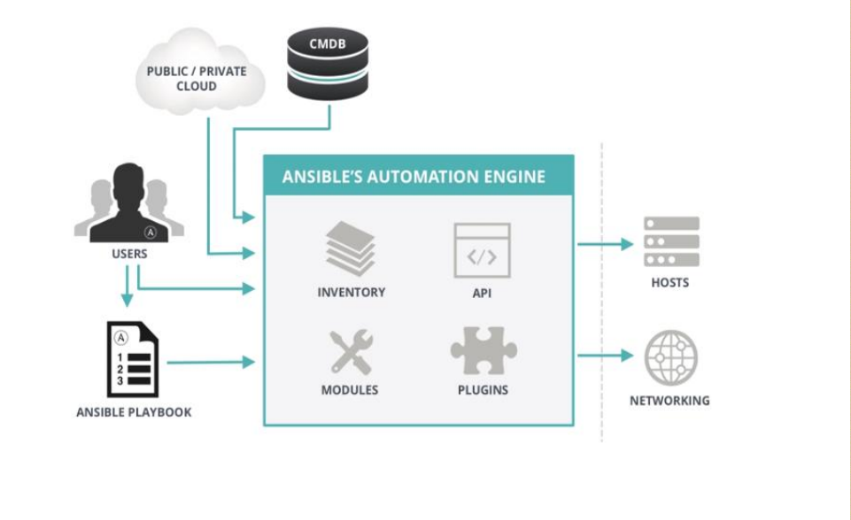4.5.4. 安装软件包¶
[root@localhost ansible]# yum install ansible -y
[root@localhost ansible]# rpm -ql ansible
4.5.5. 添加管理主机和修改配置文件¶
[root@localhost ansible]# vim /etc/ansible/hosts
# 添加我们管理的主机
[db]
192.168.46.6
[web]
172.168.46.[6-7]
[root@localhost ansible]# vim /etc/ansible/ansible.cfg
# 去除以下2行的注释
host_key_checking = False
log_path = /var/log/ansible.log
hosts文件指定的db,web就是各自包含的主机统称，内置一个all变量代表所有主机。
host_key_checking 这个就是主机key检查，我们默认使用ssh连接一个主机会提示yes/no的提示，就是信任这个主机的key。
4.5.6. 使用ansible模块¶
查看ansible模块的个数
[root@localhost ~]# ansible-doc -l | wc -l
1378
获取指定模块使用帮助
[root@localhost ~]# ansible-doc ping
4.5.6.1. ping¶
功能： ping主机
[root@localhost ansible]# ansible all -m ping
192.168.46.6 | SUCCESS => {
"changed": false,
"ping": "pong"
}
172.18.46.7 | UNREACHABLE! => {
"changed": false,
"msg": "Failed to connect to the host via ssh: ssh: connect to host 172.18.46.7 port 22: Connection timed out\r\n",
"unreachable": true
}
172.18.46.6 | UNREACHABLE! => {
"changed": false,
"msg": "Failed to connect to the host via ssh: ssh: connect to host 172.18.46.6 port 22: Connection timed out\r\n",
"unreachable": true
}
上面我们的出错了。 是因为我们没有配置ssh免密码登陆的原因。
Note
如果不想配置主机信任，使用ansibile需要配合-k选项输入密码， 如果使用了sudo需要再配合-K选项输入sudo密码
配置ssh免密码登陆：
[root@localhost ansible]# ssh-keygen
[root@localhost ansible]# ssh-copy-id 172.18.46.6
[root@localhost ansible]# ssh-copy-id 172.18.46.7
[root@localhost ansible]# ssh-copy-id 192.168.46.6
再次执行
[root@localhost ansible]# ansible all -m ping
192.168.46.6 | SUCCESS => {
"changed": false,
"ping": "pong"
}
172.18.46.7 | SUCCESS => {
"changed": false,
"ping": "pong"
}
172.18.46.6 | SUCCESS => {
"changed": false,
"ping": "pong"
}
Note
这个ping模块不是走的icmp协议，走的ssh协议。
4.5.6.2. command¶
功能： 执行command
[root@localhost ~]# ansible-doc command
[root@localhost ~]# ansible db -m command -a 'chdir=/root ls'
192.168.46.6 | SUCCESS | rc=0 >>
anaconda-ks.cfg
anaconda-ks.cfg.bak
install.log
install.log.syslog
Warning
在命令中使用了”<”, “>”, “|”, “;”和”&”符号的时候，需要改用shell模块的。
4.5.6.3. shell¶
功能： 执行远程shell命令。
[root@localhost ~]# ansible-doc shell
[root@localhost ~]# ansible web -m shell -a 'cd /root; ls -l ; touch test.txt ; ls -l;'
4.5.6.4. script¶
功能： 复制本地的脚本到远程，并执行，然后删除脚本
[root@localhost ~]# ansible-doc script
[root@localhost ~]# ansible db -m script -a '/root/test.sh'
192.168.46.6 | SUCCESS => {
"changed": true,
"rc": 0,
"stderr": "Shared connection to 192.168.46.6 closed.\r\n",
"stdout": "Fri Jan 12 22:47:41 CST 2018\r\nFilesystem Size Used Avail Use% Mounted on\r\n/dev/mapper/VolGroup-lv_root\r\n 50G 19G 29G 40% /\r\ntmpfs 491M 0 491M 0% /dev/shm\r\n/dev/sda1 477M 34M 418M 8% /boot\r\n/dev/mapper/VolGroup-lv_home\r\n 146G 60M 138G 1% /home\r\n/dev/sr0 5.8G 5.8G 0 100% /mnt/cdrom\r\n",
"stdout_lines": [
"Fri Jan 12 22:47:41 CST 2018",
"Filesystem Size Used Avail Use% Mounted on",
"/dev/mapper/VolGroup-lv_root",
" 50G 19G 29G 40% /",
"tmpfs 491M 0 491M 0% /dev/shm",
"/dev/sda1 477M 34M 418M 8% /boot",
"/dev/mapper/VolGroup-lv_home",
" 146G 60M 138G 1% /home",
"/dev/sr0 5.8G 5.8G 0 100% /mnt/cdrom"
]
}
4.5.6.5. copy¶
功能： 复制本地的文件到远程去
[root@localhost ~]# ansible web -m copy -a 'src=/root/test.sh dest=/root/test.sh backup=yes owner=zhaojiedi group=root mode=0644'
172.18.46.6 | SUCCESS => {
"changed": true,
"checksum": "c3724e329cc83de9876f2d379065ca463e858ae6",
"dest": "/root/test.sh",
"gid": 0,
"group": "root",
"md5sum": "220f72b1a4e636373d4b9310569cf027",
"mode": "0644",
"owner": "zhaojiedi",
"size": 11,
"src": "/root/.ansible/tmp/ansible-tmp-1515809310.86-157163266332298/source",
"state": "file",
"uid": 500
}
172.18.46.7 | SUCCESS => {
"changed": true,
"checksum": "c3724e329cc83de9876f2d379065ca463e858ae6",
"dest": "/root/test.sh",
"gid": 0,
"group": "root",
"md5sum": "220f72b1a4e636373d4b9310569cf027",
"mode": "0644",
"owner": "zhaojiedi",
"secontext": "system_u:object_r:admin_home_t:s0",
"size": 11,
"src": "/root/.ansible/tmp/ansible-tmp-1515809310.9-111150527159897/source",
"state": "file",
"uid": 1000
}
4.5.6.6. fetch¶
功能： 提取远程主机的文件到本地
[root@localhost ~]# mkdir /app
[root@localhost ~]# ansible all -m fetch -a 'src=/var/log/messages dest=/app'
192.168.46.6 | SUCCESS => {
"changed": true,
"checksum": "6651f324a541ddd5d3a52603353785751743610f",
"dest": "/app/192.168.46.6/var/log/messages",
"md5sum": "1d98b389a9644276cd5c42259af2471f",
"remote_checksum": "6651f324a541ddd5d3a52603353785751743610f",
"remote_md5sum": null
}
172.18.46.7 | SUCCESS => {
"changed": true,
"checksum": "3d69d7fe50ad1166782cd962f352782088c2eb6b",
"dest": "/app/172.18.46.7/var/log/messages",
"md5sum": "fa3859cc24a7ff717741ae7d043a7134",
"remote_checksum": "3d69d7fe50ad1166782cd962f352782088c2eb6b",
"remote_md5sum": null
}
172.18.46.6 | SUCCESS => {
"changed": true,
"checksum": "36ca673a1fe553d3607e1540b6d3f72ac2ebde6b",
"dest": "/app/172.18.46.6/var/log/messages",
"md5sum": "a60aa16df60e68a36f7c29a4c60badf8",
"remote_checksum": "36ca673a1fe553d3607e1540b6d3f72ac2ebde6b",
"remote_md5sum": null
}
[root@localhost ~]# tree /app
/app
├── 172.18.46.6
│ └── var
│ └── log
│ └── messages
├── 172.18.46.7
│ └── var
│ └── log
│ └── messages
└── 192.168.46.6
└── var
可以看出来，这个功能还是相当nice的， 自动帮我们分类整理好了。
4.5.6.7. file¶
功能： 文件管理的
# 创建文件
[root@localhost ~]# ansible db -m file -a 'path=/root/testfile state=touch mode=644 owner=root group=root '
192.168.46.6 | SUCCESS => {
"changed": true,
"dest": "/root/testfile",
"gid": 0,
"group": "root",
"mode": "0644",
"owner": "root",
"size": 0,
"state": "file",
"uid": 0
}
# 创建软连接
[root@localhost ~]# ansible db -m file -a 'path=/root/testfile.link state=link src=/root/testfile'
# 查看软连接
[root@localhost ~]# ansible db -a 'ls -l /root/'
192.168.46.6 | SUCCESS | rc=0 >>
total 24
-rw-------. 1 root root 1300 Jan 10 22:10 anaconda-ks.cfg
-rw-------. 1 root root 1196 Jan 10 21:25 anaconda-ks.cfg.bak
-rw-r--r--. 1 root root 9919 Jan 10 16:57 install.log
-rw-r--r--. 1 root root 3161 Jan 10 16:56 install.log.syslog
-rw-r--r-- 1 root root 0 Jan 13 00:04 testfile
lrwxrwxrwx 1 root root 14 Jan 13 00:05 testfile.link -> /root/testfile
# 删除文件
[root@localhost ~]# ansible db -m file -a 'path=/root/testfile state=absent'
192.168.46.6 | SUCCESS => {
"changed": true,
"path": "/root/testfile",
"state": "absent"
}
file模块的state主要有下面几个值
- directory
- file
- link
- absent
- hard
- touch
4.5.6.8. hostname¶
功能修改hostname
[root@localhost ~]# ansible-doc hostname
[root@localhost ~]# ansible 172.18.46.6 -m hostname -a "name=centos6.linuxpanda.tech"
hostname模块可以修改同时修改当前和文件的hostname的值。
4.5.6.9. cron¶
功能：计划任务管理
# 添加计划任务
[root@localhost ~]# ansible db -m cron -a 'minute=*/5 weekday=1,3,5 job="ntpdate 172.18.0.1" name="update time" '
192.168.46.6 | SUCCESS => {
"changed": true,
"envs": [],
"jobs": [
"update time"
]
}
# 查看下
[root@localhost ~]# ansible db -m shell -a 'crontab -l'
192.168.46.6 | SUCCESS | rc=0 >>
#Ansible: update time
*/5 * * * 1,3,5 ntpdate 172.18.0.1
# 删除
[root@localhost ~]# ansible db -m cron -a 'job="ntpdate 172.18.0.1" name="update time" state=absent'
192.168.46.6 | SUCCESS => {
"changed": true,
"envs": [],
"jobs": []
}
# 再次查看
[root@localhost ~]# ansible db -m shell -a 'crontab -l'
192.168.46.6 | SUCCESS | rc=0 >>
我们可以设置disabled属性为yes/no，来启用计划任务和关闭计划任务。
4.5.6.10. yum¶
# 安装包
[root@localhost ~]# ansible web -m yum -a 'name=httpd'
172.18.46.7 | SUCCESS => {
"changed": false,
"msg": "",
"rc": 0,
"results": [
"httpd-2.4.6-67.el7.centos.6.x86_64 providing httpd is already installed"
]
}
172.18.46.6 | SUCCESS => {
"changed": false,
"msg": "",
"rc": 0,
"results": [
"httpd-2.2.15-60.el6.centos.6.x86_64 providing httpd is already installed"
]
}
# 卸载包
[root@localhost ~]# ansible web -m yum -a 'name=httpd state=absent'
# 安装最新版本且禁用gpg检查
[root@localhost ~]# ansible web -m yum -a 'name=httpd state=latest disable_gpg_check=yes'
4.5.6.11. service¶
功能： 服务管理
[root@localhost ~]# ansible-doc service
[root@localhost ~]# ansible web -m service -a 'name=httpd state=started'
service的状态比较多：
- started
- stop
- restarted
- reloaded
4.5.6.12. user¶
功能： 用户管理
# 创建用户
[root@localhost ~]# ansible web -m user -a 'name=test1 comment="test1" uid=1005 shell="/bin/bash" groups=root append=yes createhome=yes'
172.18.46.7 | FAILED! => {
"changed": false,
"msg": "usermod: UID '1005' already exists\n",
"name": "test1",
"rc": 4
}
172.18.46.6 | SUCCESS => {
"changed": true,
"comment": "test1",
"createhome": true,
"group": 1005,
"groups": "root",
"home": "/home/test1",
"name": "test1",
"shell": "/bin/bash",
"state": "present",
"system": false,
"uid": 1005
}
# 删除用户
[root@localhost ~]# ansible web -m user -a 'name=test1 comment="test1" state=absent force=yes '
172.18.46.6 | SUCCESS => {
"changed": true,
"force": true,
"name": "test1",
"remove": false,
"state": "absent"
}
172.18.46.7 | SUCCESS => {
"changed": true,
"force": true,
"name": "test1",
"remove": false,
"state": "absent"
}
4.5.6.13. setup¶
功能： 查看主机信息
[root@localhost ansible]# ansible all -m setup -a 'filter="*version*"'
192.168.46.7 | SUCCESS => {
"ansible_facts": {
"ansible_bios_version": "6.00",
"ansible_distribution_major_version": "7",
"ansible_distribution_version": "7.4.1708",
"ansible_product_version": "None",
"ansible_python_version": "2.7.5"
},
"changed": false
}
172.18.46.7 | SUCCESS => {
"ansible_facts": {
"ansible_bios_version": "6.00",
"ansible_distribution_major_version": "7",
"ansible_distribution_version": "7.4.1708",
"ansible_product_version": "None",
"ansible_python_version": "2.7.5"
},
"changed": false
}
172.18.46.6 | UNREACHABLE! => {
"changed": false,
"msg": "Failed to connect to the host via ssh: ssh: connect to host 172.18.46.6 port 22: No route to host\r\n",
"unreachable": true
}
192.168.46.6 | UNREACHABLE! => {
"changed": false,
"msg": "Failed to connect to the host via ssh: ssh: connect to host 192.168.46.6 port 22: No route to host\r\n",
"unreachable": true
}
setup模块提供了远程主机的信息， 我们后面可以使用这个信息做分支处理的。
Note
setup模块提供的的信息都是内置变量，方便我们引用变量。
4.5.7. galaxy的使用¶
别人写好的剧本，你感觉不错也挺适合你的工作环境的，可以下载下来简单修改下就使用的。
我们首先在 galaxy 上下载获取一个地址
[root@localhost ~]# ansible-galaxy install geerlingguy.nginx
- downloading role 'nginx', owned by geerlingguy
- downloading role from https://github.com/geerlingguy/ansible-role-nginx/archive/2.5.0.tar.gz
- extracting geerlingguy.nginx to /root/.ansible/roles/geerlingguy.nginx
- geerlingguy.nginx (2.5.0) was installed successfully
4.5.8. playbook的基础使用¶
4.5.8.1. hello world¶
[root@localhost ~]# mkdir ansible
[root@localhost ~]# cd ansible/
# 编辑一个playbook
[root@localhost ansible]# vim helloworld.yml
[root@localhost ansible]# cat helloworld.yml
---
- hosts: all
remote_user: root
tasks:
- name: hello world
command: echo "hello world"
# 检查
[root@localhost ansible]# ansible-playbook helloworld.yml -C
PLAY [all] **********************************************************************************************************************
TASK [Gathering Facts] **********************************************************************************************************
ok: [192.168.46.6]
ok: [172.18.46.6]
ok: [172.18.46.7]
TASK [hello world] **************************************************************************************************************
skipping: [192.168.46.6]
skipping: [172.18.46.6]
skipping: [172.18.46.7]
PLAY RECAP **********************************************************************************************************************
172.18.46.6 : ok=1 changed=0 unreachable=0 failed=0
172.18.46.7 : ok=1 changed=0 unreachable=0 failed=0
192.168.46.6 : ok=1 changed=0 unreachable=0 failed=0
# 执行
[root@localhost ansible]# ansible-playbook helloworld.yml
PLAY [all] **********************************************************************************************************************
TASK [Gathering Facts] **********************************************************************************************************
ok: [192.168.46.6]
ok: [172.18.46.7]
ok: [172.18.46.6]
TASK [hello world] **************************************************************************************************************
changed: [192.168.46.6]
changed: [172.18.46.6]
changed: [172.18.46.7]
PLAY RECAP **********************************************************************************************************************
172.18.46.6 : ok=2 changed=1 unreachable=0 failed=0
172.18.46.7 : ok=2 changed=1 unreachable=0 failed=0
192.168.46.6 : ok=2 changed=1 unreachable=0 failed=0
4.5.8.2. 安装服务并启动服务¶
[root@localhost ansible]# vim helloworld.yml
[root@localhost ansible]# cat helloworld.yml
---
- hosts: all
remote_user: root
tasks:
- name: hello world
command: echo "hello world"
[root@localhost ansible]# ansible-playbook helloworld.yml
PLAY [all] **********************************************************************************************************************
TASK [Gathering Facts] **********************************************************************************************************
ok: [192.168.46.6]
ok: [172.18.46.7]
ok: [172.18.46.6]
TASK [hello world] **************************************************************************************************************
changed: [192.168.46.6]
changed: [172.18.46.6]
changed: [172.18.46.7]
PLAY RECAP **********************************************************************************************************************
172.18.46.6 : ok=2 changed=1 unreachable=0 failed=0
172.18.46.7 : ok=2 changed=1 unreachable=0 failed=0
192.168.46.6 : ok=2 changed=1 unreachable=0 failed=0
[root@localhost ansible]# ls
helloworld.yml httpd.yml makehttpd.yml
[root@localhost ansible]# vim httpd.yml
[root@localhost ansible]# cat httpd.yml
---
- hosts: all
remote_user: root
tasks:
- name: install httpd
yum: name=httpd state=present
- name: start httpd
service: name=httpd state=started enabled=yes
[root@localhost ansible]# ansible-playbook httpd.yml
PLAY [all] **********************************************************************************************************************
TASK [Gathering Facts] **********************************************************************************************************
ok: [192.168.46.6]
ok: [172.18.46.7]
ok: [172.18.46.6]
TASK [install httpd] ************************************************************************************************************
ok: [172.18.46.6]
ok: [192.168.46.6]
ok: [172.18.46.7]
TASK [start httpd] **************************************************************************************************************
ok: [192.168.46.6]
changed: [172.18.46.6]
changed: [172.18.46.7]
PLAY RECAP **********************************************************************************************************************
172.18.46.6 : ok=3 changed=1 unreachable=0 failed=0
172.18.46.7 : ok=3 changed=1 unreachable=0 failed=0
192.168.46.6 : ok=3 changed=0 unreachable=0 failed=0
4.5.9. vault¶
这个主要用户管理剧本的，加密解密的。
# 加密
[root@localhost ansible]# ansible-vault encrypt httpd.yml
New Vault password:
Confirm New Vault password:
Encryption successful
# 查看
[root@localhost ansible]# cat httpd.yml
$ANSIBLE_VAULT;1.1;AES256
65613239653666353638626464363565633531663734663661376138623766346363336132336435
3866363231353338663439353730623162633630656539310a663466323539386563373631313836
65386430623637333264616564613738663766373836623536356439643938333933643737396432
3831653430396261350a353832306639383138303136336464303336663432356536336638643839
32353664303131633234623634653731386136353665373536396561366162303535363066663933
65616461313135613162613530336361613262643230323962626362353362333136636535323830
37613234386433626162373535396236623231376164636561623936333832343466653562613461
64313831303432353431396237393431383261383439353939633363323933343465623038623566
62633534363138626138376530366233656434353330343935666531313165306434663935323431
37613064393036346639656534376638643231343539323366616566653032343064383034363535
38313831386232343464313130343734343634303062613766303532623637343661653661623733
31306634656563653231353739363936363236306430663266366362323561383966393033376565
63343966376336383534643066323462373336333137653965616337353063646132323839323933
6263656164636164303231666162383066666530306161643833
# 查看
[root@localhost ansible]# ansible-vault view httpd.yml
Vault password:
---
- hosts: all
remote_user: root
tasks:
- name: install httpd
yum: name=httpd state=present
- name: start httpd
service: name=httpd state=started enabled=yes
# 解密
[root@localhost ansible]# ansible-vault decrypt httpd.yml
Vault password:
Decryption successful
# 查看
[root@localhost ansible]# cat httpd.yml
---
- hosts: all
remote_user: root
tasks:
- name: install httpd
yum: name=httpd state=present
- name: start httpd
service: name=httpd state=started enabled=yes
4.5.10. console¶
交互式执行ansible命令，不经常使用的，不过里面有写只能提示还是不错的。
使用样例：
[root@localhost ansible]# ansible-console
Vault password:
Welcome to the ansible console.
Type help or ? to list commands.
root@all (3)[f:5]$ cd db
root@db (1)[f:5]$ ping
192.168.46.6 | SUCCESS => {
"changed": false,
"ping": "pong"
}
root@db (1)[f:5]$ exit
4.5.11. playbook其他使用¶
4.5.11.1. 变量¶
变量定义的必须字母开头，有字母、数字和下划线组成。
方案1： 通过命令行指定 ：
[root@localhost ansible]# cat var1.yml
---
- hosts: web
remote_user: root
tasks:
- name: install package
yum: name={{pkname}}
[root@localhost ansible]# ansible-playbook -e "pkname=htop var2=xxx" var1.yml
方案2： 直接在hosts文件中指定变量 ：
# 修改/etc/ansible/hosts文件
[centos7]
172.18.46.7 pkname=htop var2=xxx var3=xxx
192.168.46.7 pkname=htop
# 或者修改为如下
[centos7]
172.18.46.7 pkname=htop
192.168.46.7 pkname=htop
[centos7:vars]
pkname=htop
var2=xxxx
方案3： 直接在yml文件中指定变量 ：
[root@localhost ansible]# cat var1.yml
---
- hosts: centos7
remote_user: root
vars:
- pkgname: htop
var2: xxx
tasks:
- name: install package
yum: name={{pkname}}
方案4： 使用setup的变量 ：
[root@localhost ~]# ansible all -m setup -a 'filter="*nodename*"'
[root@localhost ansible]# cat var1.yml
---
- hosts: centos7
remote_user: root
tasks:
- name: touch a file
file: name=/root/{{ansible_nodename}}.txt state=touch
[root@localhost ansible]# ansible all -m shell -a 'ls -l /root'
方案4： role中的的变量 ：
这个后面角色的时候使用。
4.5.11.2. template¶
功能： 使用jinja2语言，支持变量替换功能和循环机制以适应各个主机的环境。
[root@localhost ansible]# mkdir templates/
[root@localhost ansible]# cp /etc/httpd/conf/httpd.conf templates/httpd.conf.j2
[root@localhost ansible]# vim templates/httpd.conf.j2
# 修改如下Listen行为如下内容
Listen {{listen_port}}
[root@localhost ansible]# vim t1.yml
[root@localhost ansible]# cat t1.yml
- hosts: centos7
remote_user: root
tasks:
- name: copy template file for httpd
template: src=httpd.conf.j2 dest=/etc/httpd/conf/httpd.conf
[root@localhost ansible]# ansible-playbook -e "http_port=8080" t1.yml -C
[root@localhost ansible]# ansible-playbook -e "listen_port=8080" t1.ym
[root@localhost ansible]# ansible 192.168.46.7 -m shell -a 'cat /etc/httpd/conf/httpd.conf |grep -i listen'
4.5.11.3. when¶
功能： 功能啥时候生效。
- name: copy template file for httpd
template: src=httpd.conf.j2 dest=/etc/httpd/conf/httpd.conf
when: ansible_distribution_major_version=="7"
上面的那个ansible_distribution_major_version变量是从setup模块来的， 如果主版本是7上面的那个template就执行， 其他的不执行。
Note
这个就是setup模块内置的变量，可以直接使用。
4.5.11.4. with-item¶
功能：
[root@localhost ansible]# vim item.yml
[root@localhost ansible]# cat item.yml
---
- hosts: all
remote_user: root
tasks:
- name: copy file
file: name={{item}} state=touch
with_items:
- file1
- file2
[root@localhost ansible]# ansible-playbook item.yml
4.5.11.5. 迭代变量¶
功能： item是一个字典。
[root@localhost ansible]# vim diedai.yml
[root@localhost ansible]# cat diedai.yml
---
- hosts: all
remote_user: root
tasks:
- name: add group
group: name={{item}}
with_items:
- g1
- g2
- g3
- name: add user
user: name={{item.user}} group={{item.group}}
with_items:
- {user: 'u1' , group: 'g1' }
- {user: 'u2' , group: 'g2' }
- {user: 'u3' , group: 'g3' }
[root@localhost ansible]# ansible-playbook diedai.yml
[root@localhost ansible]# ansible all -m shell -a 'id u1'
4.5.11.6. for¶
功能： 遍历指定的list
[root@localhost ansible]# pwd
/root/ansible
[root@localhost ansible]# vim for1.yml
[root@localhost ansible]# cat for1.yml
---
- hosts: centos7
remote_user: root
vars:
ports:
- listen_port: 81
- listen_port: 82
- listen_port: 83
tasks:
- name: test for
template: src=for1.conf.j2 dest=/app/for1.conf
[root@localhost ansible]# vim templates/
for1.conf.j2 httpd.conf.j2
[root@localhost ansible]# vim templates/for1.conf.j2
[root@localhost ansible]# cat templates/for1.conf.j2
{% for port in ports %}
server {
listen {{port.listen_port}};
}
{% endfor %}
4.5.12. role角色¶
功能： 把常用的封装，提供可用性
[root@localhost ansible]# tree
.
├── nginx.retry
├── nginx.yml
└── roles
└── nginx
└── tasks
├── enable.yml
├── groupadd.yml
├── install.yml
├── main.yml
├── start.yml
├── stop.yml
└── useradd.yml
3 directories, 9 files
[root@localhost ansible]# cat roles/nginx/tasks/enable.yml
- name: enable nginx
service: name=nginx state=enabled
[root@localhost ansible]# cat roles/nginx/tasks/groupadd.yml
- name: group add
group: name=nginx system=yes
[root@localhost ansible]# cat roles/nginx/tasks/install.yml
- name: install nginx
yum: name=nginx
[root@localhost ansible]# cat roles/nginx/tasks/main.yml
- import_tasks: groupadd.yml
- import_tasks: useradd.yml
- import_tasks: install.yml
- import_tasks: start.yml
- import_tasks: enable.yml
#import_tasks: stop.yml
[root@localhost ansible]# cat roles/nginx/tasks/start.yml
- name: start nginx
service: name=nginx state=started
[root@localhost ansible]# cat roles/nginx/tasks/stop.yml
- name: stop nginx
service: name=nginx state=stopped
[root@localhost ansible]# cat roles/nginx/tasks/useradd.yml
- name: user add
user: name=nginx group=nginx
简单的说， 角色把完整的yml拆分到各自的目录中， 每个目录必须有main.yml来目录下的其他文件。
上面用到了tasks目录，这是是必须的，当然还有files,templates,vars等等目录， 可以在tasks目录下的main.yml文件中引用其他的目录下yml文件。
4.6. saltstack¶
7. DNS¶
7.1. bind¶
7.1.2. 常见概念¶
BIND(Bekerley Internet Name Domain) 是伯克利互联网名称域。提供了DNS服务。
DNS查询类型：
- 递归查询
- 迭代查询
服务器类型：
- 主dns: 管理和为何负责解析域的服务器
- 从dns： 从服务器从主服务器复制库
- 缓存dns： 转发dns
区域传输：
- 完全传输： 传输整个库
- 增量传输： 传递变化的部分内容
解析流程：
client->hosts->local dns cache->dns server -> server cache-> root -> 二级域
解析答案：
- 肯定答案： 有对应条目
- 否定答案： 么有对应条目
- 权威答案： 请求的主机就有对应的条目
- 非权威答案： 请求的主机没有，通过迭代找到的答案
7.1.3. 资源记录¶
7.1.3.1. 资源记录类型¶
- A: ipv4
- AAAA: ipv6
- PTR: ip->fqdn
- SOA: 起始授权记录
- NS: 域名
- CNAME: 别名
- MX: 邮件
7.1.3.2. 资源记录格式：¶
name [ttl] IN rr_type value
# ttl可以从全局继承
# @引用当前区域的名字。
# 同一个名字可以通过多条记录定义多个值，dns会轮训响应
# 一条记录的对应位置没有写，会自动集成上一行的对应设置。
7.1.3.3. SOA记录：¶
name: 就是当前域的名字， 例如“linuxpanda.tech.”
value: 这个value由多个部分组成，当前的fqdn,邮箱地址，还有相关设置。
样例：
linuxpanda.tech. 866400 IN SOA ns.linuxpanda.tech. nsadmin.linuxpanda.tech. (
20180117 ; 序列号
2H ; 刷新时间
10M ; 重试时间
1W ; 过期时间
1D ; 否定答案的ttl时间
)
Warning
SOA记录必须是第一条记录。
7.1.3.4. MX记录¶
样例：
linuxpanda.tech. 86400 IN MX 10 mx1.linuxpanda.tech.
linuxpanda.tech. 86400 IN MX 20 mx2.linuxpanda.tech.
mx是有优先级的，数值越大优先级越低
7.1.3.5. A记录¶
样例：
www IN A 1.1.1.1
www IN A 2.2.2.2
上面的www是主机名，完成的名字是www.linuxpanda.tech. 因为我们的域是linuxpanda.tech. 可以省去后面的不写，只写主机名即可。
如果主机过多，可以使用生成器
$GENERATE 10-20 www$ A 192.168.46.$
上面的相当于www10对应10，www11对应11等等。
如果避免用户写错主机名导致无法访问的问题，可以考虑使用泛域名解析
*.linuxpanda.tech. IN A 192.168.46.1
7.1.3.7. 别名记录¶
www.linxupanda.com. IN CNAME web.linuxpanda.tech.
7.1.4. DNS软件安装¶
[root@localhost ~]# yum install bind bind-utils
[root@localhost ~]# rpm -ql bind
[root@localhost ~]# rpm -ql bind-utils
7.1.5. 正向解析¶
7.1.5.1. 编辑默认配置文件¶
[root@localhost ~]# vim /etc/named.conf
#注释以下行，使用//注释
// listen-on port 53 { 127.0.0.1; };
// allow-query { localhost; };
# 修改下面2项为no
dnssec-enable no;
dnssec-validation no;
# 在主配置文件添加对应的区域
[root@localhost ~]# vim /etc/named.rfc1912.zones
# 添加如下几行
zone "linuxpanda.tech" IN {
type master;
file "linuxpanda.tech.zone";
}
主要配置含义：
- listen-on：是监听配置，我们注释掉之后就是监听本机所有ip了，
- allow-query: 这个是允许那个主机查询，注释掉就是允许所有的，如果只是想本网使用可以修改为192.168.46.0/24即可。
如果不修改listen-on选项，默认只是鉴定在127.0.0.1上的。
7.1.5.2. 添加区域文件¶
[root@localhost named]# cp named.localhost linuxpanda.tech.zone -p # -p选项保留权限信息，权限不对dns是没法工作的。
[root@localhost named]# ll # 检查下权限
total 20
drwxrwx---. 2 named named 6 Aug 4 16:13 data
drwxrwx---. 2 named named 6 Aug 4 16:13 dynamic
-rw-r-----. 1 root named 152 Jun 21 2007 linuxpanda.tech.zone
-rw-r-----. 1 root named 2281 May 22 2017 named.ca
-rw-r-----. 1 root named 152 Dec 15 2009 named.empty
-rw-r-----. 1 root named 152 Jun 21 2007 named.localhost
-rw-r-----. 1 root named 168 Dec 15 2009 named.loopback
drwxrwx---. 2 named named 6 Aug 4 16:13 slaves
[root@localhost named]# vim linuxpanda.tech.zone # 编辑区域文件
[root@localhost named]# cat linuxpanda.tech.zone # 检查下区域文件
$TTL 1D
@ IN SOA ns1 nsadmin (
0 ; serial
1D ; refresh
1H ; retry
1W ; expire
3H ) ; minimum
NS ns1
ns1 A 192.168.46.7
www A 192.168.46.7
“@”代表的是域名“linuxpanda.tech.” 这个实在rfc1912.conf文件里面设置的。
第二行没有指定的项，会从上面一行继承下来。
7.1.5.3. 检查配置文件¶
[root@localhost named]# named-checkconf # 检查主配置文件
[root@localhost named]# named-checkzone linuxpanda.tech linuxpanda.tech.zone # 检查区域文件
zone linuxpanda.tech/IN: loaded serial 0
OK
7.1.5.4. 重启下dns服务¶
[root@localhost named]# systemctl restart named # 重启服务
7.1.5.5. 测试¶
host方式测试
[root@localhost named]# host www.linuxpanda.tech localhost # 通过localhost作为dns来测试。
Using domain server:
Name: localhost
Address: ::1#53
Aliases:
www.linuxpanda.tech has address 192.168.46.7
Note
这里指定了localhost做为dns，如果不想指定，在/etc/resolve.conf文件添加ip即可。
dig方式测试
[root@localhost named]# dig ns1.linuxpanda.tech @localhost # 使用dig测试
; <<>> DiG 9.9.4-RedHat-9.9.4-50.el7 <<>> ns1.linuxpanda.tech @localhost
;; global options: +cmd
;; Got answer:
;; ->>HEADER<<- opcode: QUERY, status: NOERROR, id: 35168
;; flags: qr aa rd ra; QUERY: 1, ANSWER: 1, AUTHORITY: 1, ADDITIONAL: 1 # aa代表权威答案。
;; OPT PSEUDOSECTION:
; EDNS: version: 0, flags:; udp: 4096
;; QUESTION SECTION:
;ns1.linuxpanda.tech. IN A
;; ANSWER SECTION:
ns1.linuxpanda.tech. 86400 IN A 192.168.46.7
;; AUTHORITY SECTION:
linuxpanda.tech. 86400 IN NS ns1.linuxpanda.tech.
;; Query time: 0 msec
;; SERVER: ::1#53(::1)
;; WHEN: Wed Jan 17 20:30:04 CST 2018
;; MSG SIZE rcvd: 78
nslookup测试
[root@localhost named]# nslookup # nslookup测试，这个工具和windows环境的使用是一样的。
> server localhost
Default server: localhost
Address: ::1#53
Default server: localhost
Address: 127.0.0.1#53
> www.linuxpanda.tech
Server: localhost
Address: ::1#53
Name: www.linuxpanda.tech
Address: 192.168.46.7
> exit
Note
自己创建的zone文件，请确保named用户有读取权限。
7.1.6. 反向解析¶
在主配置文件中区域
[root@localhost named]# vim /etc/named.rfc1912.zones # 添加区域配置
zone "46.168.192.in-addr.arpa" IN {
type master;
file "192.168.46.zone";
};
Warning
一定注意{}后面的;号了。最容易忘记了。
添加区域文件
[root@localhost named]# cp named.loopback 192.168.46.zone -p # 创建一个区域文件
[root@localhost named]# vim 192.168.46.zone # 编辑
[root@localhost named]# cat 192.168.46.zone # 检查
$TTL 1D
@ IN SOA ns1.linuxpanda.tech. nsadmin.linuxpanda.tech. (
0 ; serial
1D ; refresh
1H ; retry
1W ; expire
3H ) ; minimum
IN NS ns1.linuxpanda.tech.
7 IN PTR ns1.linuxpanda.tech.
7 IN PTR www.linuxpanda.tech.
检查配置文件
[root@localhost named]# named-checkconf # 检查配置文件
[root@localhost named]# named-checkzone 46.168.192.in-addr.arpa 192.168.46.zone # 检查区域文件
测试
[root@localhost named]# rndc reload # 重新加载dns配置文件
server reload successful
[root@localhost named]# host 192.168.46.7 192.168.46.7 # 测试
Using domain server:
Name: 192.168.46.7
Address: 192.168.46.7#53
Aliases:
7.46.168.192.in-addr.arpa domain name pointer ns1.linuxpanda.tech.
7.46.168.192.in-addr.arpa domain name pointer www.linuxpanda.tech.
# 另一个主机测试
[root@101 ~]# dig -t axfr linuxpanda.tech @192.168.46.7 # 完全区域传输，走的tcp协议，普通查询走的udp协议
; <<>> DiG 9.9.4-RedHat-9.9.4-50.el7 <<>> -t axfr linuxpanda.tech @192.168.46.7
;; global options: +cmd
linuxpanda.tech. 86400 IN SOA ns1.linuxpanda.tech. nsadmin.linuxpanda.tech. 0 86400 3600 604800 10800
linuxpanda.tech. 86400 IN NS ns1.linuxpanda.tech.
ns1.linuxpanda.tech. 86400 IN A 192.168.46.7
www.linuxpanda.tech. 86400 IN A 192.168.46.7
linuxpanda.tech. 86400 IN SOA ns1.linuxpanda.tech. nsadmin.linuxpanda.tech. 0 86400 3600 604800 10800
;; Query time: 1 msec
;; SERVER: 192.168.46.7#53(192.168.46.7)
;; WHEN: Thu Jan 18 00:44:18 EST 2018
;; XFR size: 5 records (messages 1, bytes 167)
7.1.7. 主从服务器¶
上面我们在192.168.46.7的服务器上面配置了dns，下面以192.168.46.101作为7的从dns来完整dns的主从配置
Note
在选择主从服务器的时候，注意服务器版本问题，不同版本安装的bind可能会导致不同情况，无法同步问题。
7.1.7.1. 编辑配置文件¶
[root@localhost ~]# vim /etc/named.conf # 编辑主配置文件
#注释以下行，使用//注释
// listen-on port 53 { 127.0.0.1; };
// allow-query { localhost; };
# 修改下面2项为no
dnssec-enable no;
dnssec-validation no;
# 添加如下配置
allow-transfer { 192.168.46.101;};
7.1.7.2. 添加区域文件¶
# 主服务器修改
[root@7 named]# cat linuxpanda.tech.zone # 编辑区域文件
[root@7 named]# cat linuxpanda.tech.zone # 检查区域文件，确保有从服务器的ns记录和对应的a记录
$TTL 1D
@ IN SOA ns1 nsadmin (
0 ; serial
1D ; refresh
1H ; retry
1W ; expire
3H ) ; minimum
NS ns1
NS ns2
ns1 A 192.168.46.7
ns2 A 192.168.46.101
www A 192.168.46.7
# 从服务器修改
[root@101 ~]# vim /etc/named.rfc1912.zones # 从服务器添加区域，设置与主服务器的关联配置
zone "linuxpanda.tech" IN {
type slave;
master { 192.168.46.7;}
file "slaves/linuxpanda.tech.slave.zone";
};
Note
从服务器的必须要在主dns添加记录的。
7.1.7.3. 重启服务¶
[root@101 named]# systemctl restart named # 重启服务
[root@101 named]# ll slaves/ # 发现文件已经同步过来了。
total 4
-rw-r--r--. 1 named named 283 Jan 18 01:36 linuxpanda.tech.slave.zone
[root@101 named]# file slaves/linuxpanda.tech.slave.zone
slaves/linuxpanda.tech.slave.zone: data
Note
centos7环境下从文件都是data的了，不再是文本了。
7.1.7.4. 测试¶
[root@101 named]# dig -t axfr linuxpanda.tech @192.168.46.101 # 测试下，发现不对啊。
; <<>> DiG 9.9.4-RedHat-9.9.4-50.el7 <<>> -t axfr linuxpanda.tech @192.168.46.101
;; global options: +cmd
linuxpanda.tech. 86400 IN SOA ns1.linuxpanda.tech. nsadmin.linuxpanda.tech. 0 86400 3600 604800 10800
linuxpanda.tech. 86400 IN NS ns1.linuxpanda.tech.
ns1.linuxpanda.tech. 86400 IN A 192.168.46.7
www.linuxpanda.tech. 86400 IN A 192.168.46.7
linuxpanda.tech. 86400 IN SOA ns1.linuxpanda.tech. nsadmin.linuxpanda.tech. 0 86400 3600 604800 10800
;; Query time: 1 msec
;; SERVER: 192.168.46.101#53(192.168.46.101)
;; WHEN: Thu Jan 18 01:44:01 EST 2018
;; XFR size: 5 records (messages 1, bytes 167)
[root@7 named]# rndc reload # 这个在主服务器上执行下。
[root@101 named]# rndc reload # 这个在从服务器上执行
server reload successful
[root@101 named]# dig -t axfr linuxpanda.tech @192.168.46.101 # 再次测试
; <<>> DiG 9.9.4-RedHat-9.9.4-50.el7 <<>> -t axfr linuxpanda.tech @192.168.46.101
;; global options: +cmd
linuxpanda.tech. 86400 IN SOA ns1.linuxpanda.tech. nsadmin.linuxpanda.tech. 1 86400 3600 604800 10800
linuxpanda.tech. 86400 IN NS ns1.linuxpanda.tech.
linuxpanda.tech. 86400 IN NS ns2.linuxpanda.tech.
ns1.linuxpanda.tech. 86400 IN A 192.168.46.7
ns2.linuxpanda.tech. 86400 IN A 192.168.46.101
www.linuxpanda.tech. 86400 IN A 192.168.46.7
linuxpanda.tech. 86400 IN SOA ns1.linuxpanda.tech. nsadmin.linuxpanda.tech. 1 86400 3600 604800 10800
;; Query time: 0 msec
;; SERVER: 192.168.46.101#53(192.168.46.101)
;; WHEN: Thu Jan 18 01:45:02 EST 2018
;; XFR size: 7 records (messages 1, bytes 201)
7.1.7.5. 进一步测试¶
主服务器修改下
[root@7 named]# !vim
vim linuxpanda.tech.zone
[root@7 named]# cat linuxpanda.tech.zone # 添加了blog记录并修改了序号为2（原有基础上+1），这个必须比原有的数值大，才有效。
$TTL 1D
@ IN SOA ns1 nsadmin (
2 ; serial
1D ; refresh
1H ; retry
1W ; expire
3H ) ; minimum
NS ns1
NS ns2
ns1 A 192.168.46.7
ns2 A 192.168.46.101
www A 192.168.46.7
blog A 192.168.46.101
[root@7 named]# rndc reload # 重新加载配置文件
server reload successful
从服务器测试
[root@101 named]# dig -t axfr linuxpanda.tech @192.168.46.101 # 查询测试，发现我们在主dns上的blog记录已经添加进来了
; <<>> DiG 9.9.4-RedHat-9.9.4-50.el7 <<>> -t axfr linuxpanda.tech @192.168.46.101
;; global options: +cmd
linuxpanda.tech. 86400 IN SOA ns1.linuxpanda.tech. nsadmin.linuxpanda.tech. 2 86400 3600 604800 10800
linuxpanda.tech. 86400 IN NS ns1.linuxpanda.tech.
linuxpanda.tech. 86400 IN NS ns2.linuxpanda.tech.
blog.linuxpanda.tech. 86400 IN A 192.168.46.101
ns1.linuxpanda.tech. 86400 IN A 192.168.46.7
ns2.linuxpanda.tech. 86400 IN A 192.168.46.101
www.linuxpanda.tech. 86400 IN A 192.168.46.7
linuxpanda.tech. 86400 IN SOA ns1.linuxpanda.tech. nsadmin.linuxpanda.tech. 2 86400 3600 604800 10800
;; Query time: 1 msec
;; SERVER: 192.168.46.101#53(192.168.46.101)
;; WHEN: Thu Jan 18 01:50:21 EST 2018
;; XFR size: 8 records (messages 1, bytes 222)
[root@101 named]# cat /var/log/messages # 查看下日志关于named的信息
--------------------------省去一部分-----------------------------------------------------------
Jan 18 01:48:49 station named[7809]: client 192.168.46.7#43665: received notify for zone 'linuxpanda.tech'
Jan 18 01:48:49 station named[7809]: zone linuxpanda.tech/IN: Transfer started.
Jan 18 01:48:49 station named[7809]: transfer of 'linuxpanda.tech/IN' from 192.168.46.7#53: connected using 192.168.46.101#48087
Jan 18 01:48:49 station named[7809]: zone linuxpanda.tech/IN: transferred serial 2
Jan 18 01:48:49 station named[7809]: transfer of 'linuxpanda.tech/IN' from 192.168.46.7#53: Transfer completed: 1 messages, 8 records, 222 bytes, 0.010 secs (22200 bytes/sec)
Jan 18 01:48:49 station named[7809]: zone linuxpanda.tech/IN: sending notifies (serial 2)
Jan 18 01:49:23 station named[7809]: client 192.168.46.101#59454 (linuxpanda.tech): transfer of 'linuxpanda.tech/IN': AXFR started
Jan 18 01:49:23 station named[7809]: client 192.168.46.101#59454 (linuxpanda.tech): transfer of 'linuxpanda.tech/IN': AXFR ended
Note
如果从DNS服务器没法同步，请检查服务器配置和2个服务器的日志信息
7.1.8. 允许远程动态更新¶
7.1.8.1. 主服务器修改¶
[root@7 named]# vim /etc/named.rfc1912.zones # 添加允许更新
zone "linuxpanda.tech" IN {
type master;
file "linuxpanda.tech.zone";
allow-update { 192.168.46.101;} ;
};
[root@7 named]# chmod g+w /var/named/ # 给named添加目录写权限，
[root@7 named]# systemctl restart named # 重启服务
7.1.8.2. 从服务器来更新¶
[root@101 named]# nsupdate # 这个命令是交互的
> server 192.168.46.7
> zone linuxpanda.tech
> update add ftp.linuxpanda.tech. 9000 IN A 192.168.46.101
> send
> quit
7.1.8.3. 主服务器测试¶
[root@7 named]# ll -t # 查看文件
total 28
-rw-r--r--. 1 named named 757 Jan 18 16:02 linuxpanda.tech.zone.jnl
-rw-r-----. 1 root named 256 Jan 18 14:47 linuxpanda.tech.zone
-rw-r-----. 1 root named 258 Jan 18 12:32 192.168.46.zone
drwxrwx---. 2 named named 31 Jan 17 20:43 dynamic
drwxrwx---. 2 named named 23 Jan 17 20:23 data
drwxrwx---. 2 named named 6 Aug 4 16:13 slaves
-rw-r-----. 1 root named 2281 May 22 2017 named.ca
-rw-r-----. 1 root named 152 Dec 15 2009 named.empty
-rw-r-----. 1 root named 168 Dec 15 2009 named.loopback
-rw-r-----. 1 root named 152 Jun 21 2007 named.localhost
[root@7 named]# cat linuxpanda.tech.zone.jnl # 查看下这个是啥
[root@7 named]# dig -t axfr linuxpanda.tech. @192.168.46.7 |grep ftp # 查看添加的记录
ftp.linuxpanda.tech. 9000 IN A 192.168.46.101
Note
动态更新后，从服务器也会自动更新的，但是序号是没有增加的。
7.1.9. 启用查询日志记录¶
这个启用dns查询日志记录功能， 不建议开启的（大量日志操作），只有在调试dns配置的时候开启。
[root@7 named]# rndc status # 查看dns状态信息
version: 9.9.4-RedHat-9.9.4-50.el7 <id:8f9657aa>
CPUs found: 1
worker threads: 1
UDP listeners per interface: 1
number of zones: 103
debug level: 0
xfers running: 0
xfers deferred: 0
soa queries in progress: 0
query logging is OFF
recursive clients: 0/0/1000
tcp clients: 0/100
server is up and running
[root@7 named]# rndc querylog # 日志切换命令，off->on,on->off
[root@7 named]# rndc status |grep logging # 查看
query logging is ON
[root@7 named]# rndc querylog # 日志切换
[root@7 named]# rndc status |grep logging # 查看
query logging is OFF
7.1.10. 子域配置¶
配置子域需要的服务器也比较多。 简单规划下。
- 192.168.46.7 : linuxpanda.tech
- 192.168.46.101 : henan.linuxpanda.tech
- 192.168.46.102 : zhengzhou.henan.linuxpanda.tech
我这里linuxpanda.tech 就认为是我自己的顶级域。 henan就是二级域，zhengzhou就是三级域。
7.1.10.1. 环境配置¶
前面我使用了192.168.46.7和192.168.46.101两个机器，这个实验，我就重新安装下bind来覆盖原有设置了。
# 192.168.46.7 机器上操作
[root@7 named]# rm -rf /etc/named*
[root@7 named]# rm -rf /var/named
[root@7 named]# yum reinstall bind
# 192.168.46.101 机器上操作
[root@101 named]# rm -rf /etc/named*
[root@102 named]# rm -rf /var/named
[root@102 named]# yum reinstall bind
7.1.10.2. 顶级域配置¶
[root@7 named]# vim /etc/named.conf
[root@localhost ~]# vim /etc/named.conf
#注释以下行，使用//注释
// listen-on port 53 { 127.0.0.1; };
// allow-query { localhost; };
# 修改下面2项为no
dnssec-enable no;
dnssec-validation no;
# 添加如下配置
[root@7 named]# vim /etc/named.rfc1912.zones
zone "linuxpanda.tech" IN {
type master;
file "linuxpanda.tech.zone";
}
;
# 添加区域文件
[root@7 named]# cd /var/named/
[root@7 named]# ls
data dynamic named.ca named.empty named.localhost named.loopback slaves
[root@7 named]# cp named.localhost linuxpanda.tech.zone -p # 保留权限
[root@7 named]# vim linuxpanda.tech.zone # 添加区域
[root@7 named]# cat linuxpanda.tech.zone # 检查区域
$TTL 1D
@ IN SOA ns1 nsadmin (
0 ; serial
1D ; refresh
1H ; retry
1W ; expire
3H ) ; minimum
NS ns1
henan NS ns2
ns1 A 192.168.46.7
ns2 A 192.168.46.101
www A 192.168.46.7
# 配置测试
[root@7 named]# named-checkconf # 检查配置
[root@7 named]# named-checkzone linuxpanda.tech linuxpanda.tech.zone # 检查区域
# 启动服务
[root@7 named]# systemctl restart named # 重启服务
7.1.10.3. 一级域配置¶
[root@7 named]# vim /etc/named.conf # 编辑主配置
#注释以下行，使用//注释
// listen-on port 53 { 127.0.0.1; };
// allow-query { localhost; };
# 修改下面2项为no
dnssec-enable no;
dnssec-validation no;
# 添加如下配置
[root@7 named]# vim /etc/named.rfc1912.zones
zone "henan.linuxpanda.tech" IN {
type master;
file "henan.linuxpanda.tech.zone";
};
# 添加区域文件
[root@7 named]# cd /var/named/
[root@7 named]# ls
data dynamic named.ca named.empty named.localhost named.loopback slaves
[root@7 named]# cp -p named.localhost henan.linuxpanda.tech.zone # 保留权限
[root@7 named]# vim henan.linuxpanda.tech.zone # 编辑区域文件
[root@7 named]# cat henan.linuxpanda.tech.zone # 检查区域文件
$TTL 1D
@ IN SOA ns1 nsadmin (
0 ; serial
1D ; refresh
1H ; retry
1W ; expire
3H ) ; minimum
NS ns1
zhengzhou NS ns2
ns1 A 192.168.46.101
ns2 A 192.168.46.102
www A 192.168.46.101
# 配置测试
[root@7 named]# named-checkconf # 检查主配置文件
[root@7 named]# named-checkzone henan.linuxpanda.tech henan.linuxpanda.tech.zone # 检查区域文件
# 启动服务
[root@7 named]# systemctl restart named # 重启服务
7.1.10.4. 二级域配置¶
[root@7 named]# vim /etc/named.conf # 编辑主配置文件
#注释以下行，使用//注释
// listen-on port 53 { 127.0.0.1; };
// allow-query { localhost; };
# 修改下面2项为no
dnssec-enable no;
dnssec-validation no;
# 添加如下配置
[root@7 named]# vim /etc/named.rfc1912.zones
zone "zhengzhou.henan.linuxpanda.tech" IN {
type master;
file "zhengzhou.henan.linuxpanda.tech.zone";
};
# 添加区域文件
[root@7 named]# cd /var/named/
[root@7 named]# ls
data dynamic named.ca named.empty named.localhost named.loopback slaves
[root@7 named]# cp -p named.localhost linuxpanda.tech.zone # 保留权限
[root@7 named]# vim zhengzhou.henan.linuxpanda.tech.zone # 编辑配置文件
[root@7 named]# cat zhengzhou.henan.linuxpanda.tech.zone # 检查配置文件
$TTL 1D
@ IN SOA ns1 nsadmin (
0 ; serial
1D ; refresh
1H ; retry
1W ; expire
3H ) ; minimum
NS ns1
NS zhengzhou
ns1 A 192.168.46.101
zhengzhou A 192.168.46.102
www A 192.168.46.101
web CNAME www
# 配置测试
[root@7 named]# named-checkconf # 配置文件检查
[root@7 named]# named-checkzone zhengzhou.henan.linuxpanda.tech zhengzhou.henan.linuxpanda.tech.zone # 区域文件检查
# 启动服务
[root@7 named]# systemctl restart named # 重启
测试下
在192.168.46.7上面验证下：
[root@7 named]# host web.zhengzhou.henan.linuxpanda.tech 192.168.46.7 # 测试
Using domain server:
Name: 192.168.46.7
Address: 192.168.46.7#53
Aliases:
web.zhengzhou.henan.linuxpanda.tech is an alias for www.zhengzhou.henan.linuxpanda.tech.
www.zhengzhou.henan.linuxpanda.tech has address 192.168.46.102
7.1.11. 转发服务器¶
转发分为2种：
- 全局转发： 全局配置文件设置
- 特定域转发： 特定域内配置
转发类型2种：
- first： 转发给特定服务器，如果他没有就在找自己找根。
- only: 抓饭给特定服务器，如果他找不到自己不继续找。
Note
请关闭dnssec功能。
我这里接着上面的实验基础上的， 上面我做了3级别的域 linuxpanda.tech ,henan.linuxpanda.tech ,zhengzhou.henan.linuxpanda.tech
给henan.linxupanda.tech配置特定域转发
[root@101 ~]# vim /etc/named.rfc1912.zones # 编辑主配置文件
# 添加如何内容
zone "linuxpanda.tech" IN {
type forward;
forward first;
forwarders { 192.168.46.7; };
给zhengzhou.henan.linxupanda.tech配置特定域转发
[root@102 ~]# vim /etc/named.rfc1912.zones # 编辑主配置文件
# 添加如何内容
zone "henan.linuxpanda.tech" IN {
type forward;
forward first;
forwarders { 192.168.46.101; };
};
zone "linuxpanda.tech" IN {
type forward;
forward first;
forwarders { 192.168.46.101; };
};
Note
修改配置文件后需要重启服务或者使用rndc reload重新加载配置文件。
测试
# 我们先测试我内部的服务器的dns主机
[root@102 ~]$ host ns2.linuxpanda.tech 192.168.46.102 # 测试192.168.46.7机器上面有的服务器。
Using domain server:
Name: 192.168.46.102
Address: 192.168.46.102#53
Aliases:
ns2.linuxpanda.tech has address 192.168.46.101
# 上面可以看到，我们的都给转发了。
# 下面测试一个内部dns没有的主机wwwxx,结构跑到互联网上给我们解析了，如果forward 设置only，就不会在去解析了。
[root@102 ~]$ host wwwxx.linuxpanda.tech # 测试一个192.168.46.7机器上面没有的服务器
wwwxx.linuxpanda.tech has address 39.106.157.220
# 这个ip就是我买的云服务器ip，域名解析到这个ip了。
7.1.12. view¶
7.1.12.1. 定义acl¶
[root@centos7 ~]# vim /etc/named.conf
acl netdianxin { 192.168.1.0/24;};
acl netyidong { 192.168.46.0/24;};
acl netother { any;};
7.1.12.2. 迁移根区域¶
[root@centos7 ~]# !vim /etc/named.conf
# 删除下面的4行数据
zone "." IN {
type hint;
file "named.ca";
};
[root@centos7 ~]# vim /etc/named.rfc1912.zones
# 添加上面删除的4行数据
zone "." IN {
type hint;
file "named.ca";
};
7.1.12.3. 配置view¶
[root@centos7 ~]# cat /etc/named.conf
//
// named.conf
//
// Provided by Red Hat bind package to configure the ISC BIND named(8) DNS
// server as a caching only nameserver (as a localhost DNS resolver only).
//
// See /usr/share/doc/bind*/sample/ for example named configuration files.
//
// See the BIND Administrator's Reference Manual (ARM) for details about the
// configuration located in /usr/share/doc/bind-{version}/Bv9ARM.html
acl netdianxin { 192.168.46.0/24;};
acl netyidong { 192.168.1.0/24;};
acl netother { any;};
options {
// listen-on port 53 { 127.0.0.1; };
listen-on-v6 port 53 { ::1; };
directory "/var/named";
dump-file "/var/named/data/cache_dump.db";
statistics-file "/var/named/data/named_stats.txt";
memstatistics-file "/var/named/data/named_mem_stats.txt";
// allow-query { localhost; };
/*
- If you are building an AUTHORITATIVE DNS server, do NOT enable recursion.
- If you are building a RECURSIVE (caching) DNS server, you need to enable
recursion.
- If your recursive DNS server has a public IP address, you MUST enable access
control to limit queries to your legitimate users. Failing to do so will
cause your server to become part of large scale DNS amplification
attacks. Implementing BCP38 within your network would greatly
reduce such attack surface
*/
recursion yes;
dnssec-enable no;
dnssec-validation no;
/* Path to ISC DLV key */
bindkeys-file "/etc/named.iscdlv.key";
managed-keys-directory "/var/named/dynamic";
pid-file "/run/named/named.pid";
session-keyfile "/run/named/session.key";
};
logging {
channel default_debug {
file "data/named.run";
severity dynamic;
};
};
view viewdianxin {
match-clients {netdianxin;};
zone "linuxpanda.tech" {
type master;
file "linuxpanda.tech.netdianxin.zone";
};
include "/etc/named.rfc1912.zones";
};
view viewyidong{
match-clients {netyidong;};
zone "linuxpanda.tech" {
type master;
file "linuxpanda.tech.netyidong.zone";
};
include "/etc/named.rfc1912.zones";
};
include "/etc/named.root.key";
7.1.12.4. 添加文件¶
[root@centos7 named]# mv linuxpanda.tech.zone linuxpanda.tech.netdianxin.zone
[root@centos7 named]# cp linuxpanda.tech.netdianxin.zone linuxpanda.tech.netyidong.zone
[root@centos7 named]# vim linuxpanda.tech.netdianxin.zone
[root@centos7 named]# cp linuxpanda.tech.netdianxin.zone linuxpanda.tech.netyidong.zone
cp: overwrite ‘linuxpanda.tech.netyidong.zone’? y
[root@centos7 named]# vim linuxpanda.tech.netyidong.zone
[root@centos7 named]# cat linuxpanda.tech.netdianxin.zone
$TTL 1D
@ IN SOA ns1 nsadmin (
0 ; serial
1D ; refresh
1H ; retry
1W ; expire
3H ) ; minimum
NS ns1
ns1 A 192.168.46.7
www A 192.168.46.7
[root@centos7 named]# cat linuxpanda.tech.netyidong.zone
$TTL 1D
@ IN SOA ns1 nsadmin (
0 ; serial
1D ; refresh
1H ; retry
1W ; expire
3H ) ; minimum
NS ns1
ns1 A 192.168.1.103
www A 192.168.1.103
7.1.12.5. 验证¶
第一个网段测试
[root@102 ~]$ dig www.linuxpanda.tech @192.168.46.7
; <<>> DiG 9.9.4-RedHat-9.9.4-51.el7_4.1 <<>> www.linuxpanda.tech @192.168.46.7
;; global options: +cmd
;; Got answer:
;; ->>HEADER<<- opcode: QUERY, status: NOERROR, id: 33006
;; flags: qr aa rd ra; QUERY: 1, ANSWER: 1, AUTHORITY: 1, ADDITIONAL: 2
;; OPT PSEUDOSECTION:
; EDNS: version: 0, flags:; udp: 4096
;; QUESTION SECTION:
;www.linuxpanda.tech. IN A
;; ANSWER SECTION:
www.linuxpanda.tech. 86400 IN A 192.168.46.7
;; AUTHORITY SECTION:
linuxpanda.tech. 86400 IN NS ns1.linuxpanda.tech.
;; ADDITIONAL SECTION:
ns1.linuxpanda.tech. 86400 IN A 192.168.46.7
;; Query time: 0 msec
;; SERVER: 192.168.46.7#53(192.168.46.7)
;; WHEN: Sat Jan 20 17:13:13 CST 2018
;; MSG SIZE rcvd: 98
第二个网段测试
[root@101 ~]# dig www.linuxpanda.tech @192.168.1.103
; <<>> DiG 9.9.4-RedHat-9.9.4-50.el7 <<>> www.linuxpanda.tech @192.168.1.103
;; global options: +cmd
;; Got answer:
;; ->>HEADER<<- opcode: QUERY, status: NOERROR, id: 158
;; flags: qr aa rd ra; QUERY: 1, ANSWER: 1, AUTHORITY: 1, ADDITIONAL: 2
;; OPT PSEUDOSECTION:
; EDNS: version: 0, flags:; udp: 4096
;; QUESTION SECTION:
;www.linuxpanda.tech. IN A
;; ANSWER SECTION:
www.linuxpanda.tech. 86400 IN A 192.168.1.103
;; AUTHORITY SECTION:
linuxpanda.tech. 86400 IN NS ns1.linuxpanda.tech.
;; ADDITIONAL SECTION:
ns1.linuxpanda.tech. 86400 IN A 192.168.1.103
;; Query time: 0 msec
;; SERVER: 192.168.1.103#53(192.168.1.103)
;; WHEN: Sat Jan 20 04:13:29 EST 2018
;; MSG SIZE rcvd: 98
7.1.13. 互联网dns实现¶

7.1.13.2. 服务器规划¶
为了方便后续配置简单设置下主机名如下
主根： root1
从根： root2，ip
tech域： tech
com域： com
linuxpanda: linuxpanda
www1:www1
www2:www2
运营商：dianxin
client:client
7.1.13.3. ip配置¶
根据上面的配置设置ip信息。
# nmcli con del ens33 ;
# nmcli con add con-name ens33 ifname ens33 type ethernet ipv4.method manual \
ivp4.ipaddress 192.168.46.151/24 ipv4.gateway 192.168.46.1
# nmcli con up ens33
主机名字配置。
# hostnamectl set-hostname centos-151
7.1.13.4. 安装bind软件¶
给所有主机安装bind.
我这里使用ansible批量安装了。
[root@centos7 ansible]# ansible dns -m yum -a 'name=bind,bind-utils'
[root@centos7 ~]# vim /etc/named.conf
[root@centos7 ~]# ansible dns -m copy -a 'src=/etc/named.conf dest=/etc/named.conf'
7.1.13.5. 主根配置¶
# 修改前的
zone "." IN {
type hint;
file "named.ca";
};
# 修改后的
zone "." IN {
type master;
file "root.zone";
};
[root@151 named]# cat root.zone
$TTL 1D
@ IN SOA ns1 admin (
0 ; serial
1D ; refresh
1H ; retry
1W ; expire
3H ) ; minimum
NS ns1
NS ns2
tech NS nstech
com NS nscom
ns1 A 192.168.46.151
ns2 A 192.168.46.152
nstech A 192.168.46.153
nscom A 192.168.46.154
[root@centos-151 named]# scp /etc/named.conf 192.168.46.152:/etc/
[root@centos-151 named]# systemctl restart named
7.1.13.6. 从根配置¶
上面已经copy过来一个i额named.conf文件， 修改修改下
zone "." IN {
type slave;
masters { 192.168.46.151; };
file "slaves/root.zone";
};
7.1.13.7. 主从根测试¶
[root@centos-151 named]# !dig
dig nstech @localhost
; <<>> DiG 9.9.4-RedHat-9.9.4-50.el7 <<>> nstech @localhost
;; global options: +cmd
;; Got answer:
;; ->>HEADER<<- opcode: QUERY, status: NOERROR, id: 32324
;; flags: qr aa rd ra; QUERY: 1, ANSWER: 1, AUTHORITY: 2, ADDITIONAL: 3
;; OPT PSEUDOSECTION:
; EDNS: version: 0, flags:; udp: 4096
;; QUESTION SECTION:
;nstech. IN A
;; ANSWER SECTION:
nstech. 86400 IN A 192.168.46.153
;; AUTHORITY SECTION:
. 86400 IN NS ns2.
. 86400 IN NS ns1.
;; ADDITIONAL SECTION:
ns1. 86400 IN A 192.168.46.151
ns2. 86400 IN A 192.168.46.152
;; Query time: 0 msec
;; SERVER: ::1#53(::1)
;; WHEN: Sun Jan 21 03:41:58 CST 2018
;; MSG SIZE rcvd: 115
7.1.13.8. 运营商配置¶
运营商为客户提供dns服务，默认的根是13个网络上的，配置在named.caw文件中， 我们修改为我们自己的2个根。
[root@centos-158 named]# vim named.ca
[root@centos-158 named]# cat named.ca
. 518400 IN NS a.root-servers.net.
. 518400 IN NS b.root-servers.net.
a.root-servers.net. 3600000 IN A 192.168.46.151
b.root-servers.net. 3600000 IN A 192.168.46.152
7.1.13.9. 运营商测试¶
运营商的dns设置自身ip即可
[root@centos-158 named]# dig ns1
; <<>> DiG 9.9.4-RedHat-9.9.4-50.el7 <<>> ns1
;; global options: +cmd
;; Got answer:
;; ->>HEADER<<- opcode: QUERY, status: NOERROR, id: 8276
;; flags: qr rd ra; QUERY: 1, ANSWER: 1, AUTHORITY: 2, ADDITIONAL: 2
;; OPT PSEUDOSECTION:
; EDNS: version: 0, flags:; udp: 4096
;; QUESTION SECTION:
;ns1. IN A
;; ANSWER SECTION:
ns1. 86400 IN A 192.168.46.151
;; AUTHORITY SECTION:
. 86400 IN NS ns2.
. 86400 IN NS ns1.
;; ADDITIONAL SECTION:
ns2. 86400 IN A 192.168.46.152
;; Query time: 1 msec
;; SERVER: 192.168.46.158#53(192.168.46.158)
;; WHEN: Sun Jan 21 04:11:21 CST 2018
;; MSG SIZE rcvd: 93
7.1.13.10. 客户端配置¶
客户端的dns设置为运营商的dns即可
客户端修改dns为运营商的ip即可
[root@centos-159 ~]# nmcli con modify ens33 ipv4.gateway 192.168.46.158 ipv4.dns 192.168.46.158
[root@centos-159 ~]# nmcli con up ens33
[root@centos-159 ~]# dig nstech
; <<>> DiG 9.9.4-RedHat-9.9.4-50.el7 <<>> nstech
;; global options: +cmd
;; Got answer:
;; ->>HEADER<<- opcode: QUERY, status: NOERROR, id: 64966
;; flags: qr rd ra; QUERY: 1, ANSWER: 1, AUTHORITY: 2, ADDITIONAL: 3
;; OPT PSEUDOSECTION:
; EDNS: version: 0, flags:; udp: 4096
;; QUESTION SECTION:
;nstech. IN A
;; ANSWER SECTION:
nstech. 86400 IN A 192.168.46.153
;; AUTHORITY SECTION:
. 86343 IN NS ns2.
. 86343 IN NS ns1.
;; ADDITIONAL SECTION:
ns2. 86343 IN A 192.168.46.152
ns1. 86343 IN A 192.168.46.151
;; Query time: 1 msec
;; SERVER: 192.168.46.158#53(192.168.46.158)
;; WHEN: Sun Jan 21 04:12:18 CST 2018
;; MSG SIZE rcvd: 115
7.1.13.11. 一级域的配置¶
一级域有2个，tech和com域的，
先配置tech域
[root@centos-153 ~]# vim /etc/named.conf
[root@centos-153 ~]# vim /etc/named.rfc1912.zones
[root@centos-153 ~]# tail -n 5 /etc/named.rfc1912.zones
zone "tech" IN {
type master;
file "tech.zone";
} ;
[root@centos-153 ~]# cd /var/named/
[root@centos-153 named]# ls
data dynamic named.ca named.empty named.localhost named.loopback slaves
[root@centos-153 named]# cp named.localhost tech.zone -p
[root@centos-153 named]# vim tech.zone
[root@centos-153 named]# cat tech.zone
$TTL 1D
@ IN SOA ns1 admin (
0 ; serial
1D ; refresh
1H ; retry
1W ; expire
3H ) ; minimum
NS ns1
linuxpanda NS nslinuxpanda
ns1 A 192.168.46.153
nslinuxpanda A 192.168.46.155
[root@centos-153 named]# systemctl restart named
[root@centos-153 named]# systemctl status named
[root@centos-153 named]# dig ns1.tech
在配置com域
[root@centos-154 ~]# vim /etc/named.conf
[root@centos-154 ~]# vim /etc/named.rfc1912.zones
[root@centos-154 ~]# tail -n 5 /etc/named.rfc1912.zones
};
zone "com" {
type master;
file "com.zone";
};
[root@centos-154 ~]# cd /var/named/
[root@centos-154 named]# cp named.localhost com.zone -p
[root@centos-154 named]# vim com.zone
[root@centos-154 named]# cat com.zone
$TTL 1D
@ IN SOA ns1 admin (
0 ; serial
1D ; refresh
1H ; retry
1W ; expire
3H ) ; minimum
NS ns1
ns1 A 192.168.46.154
[root@centos-154 named]# dig ns1.com
7.1.13.12. 顶级域测试¶
上面已经在顶级域的自己机器上面测试了，这次直接在客户端测试下，确保没错误
[root@centos-159 ~]# dig ns1.tech
; <<>> DiG 9.9.4-RedHat-9.9.4-50.el7 <<>> ns1.tech
;; global options: +cmd
;; Got answer:
;; ->>HEADER<<- opcode: QUERY, status: NOERROR, id: 24895
;; flags: qr rd ra; QUERY: 1, ANSWER: 1, AUTHORITY: 1, ADDITIONAL: 1
;; OPT PSEUDOSECTION:
; EDNS: version: 0, flags:; udp: 4096
;; QUESTION SECTION:
;ns1.tech. IN A
;; ANSWER SECTION:
ns1.tech. 86400 IN A 192.168.46.153
;; AUTHORITY SECTION:
tech. 86400 IN NS ns1.tech.
;; Query time: 1 msec
;; SERVER: 192.168.46.158#53(192.168.46.158)
;; WHEN: Sun Jan 21 04:27:50 CST 2018
;; MSG SIZE rcvd: 67
[root@centos-159 ~]# dig ns1.com
; <<>> DiG 9.9.4-RedHat-9.9.4-50.el7 <<>> ns1.com
;; global options: +cmd
;; Got answer:
;; ->>HEADER<<- opcode: QUERY, status: NOERROR, id: 63104
;; flags: qr rd ra; QUERY: 1, ANSWER: 1, AUTHORITY: 1, ADDITIONAL: 1
;; OPT PSEUDOSECTION:
; EDNS: version: 0, flags:; udp: 4096
;; QUESTION SECTION:
;ns1.com. IN A
;; ANSWER SECTION:
ns1.com. 86400 IN A 192.168.46.154
;; AUTHORITY SECTION:
com. 86078 IN NS ns1.com.
;; Query time: 1 msec
;; SERVER: 192.168.46.158#53(192.168.46.158)
;; WHEN: Sun Jan 21 04:28:01 CST 2018
;; MSG SIZE rcvd: 66
7.1.13.13. 二级域配置¶
二级域里面我只有tech下的linuxpanda域，
[root@centos-155 ~]# vim /etc/named.conf
[root@centos-155 named]# vim /etc/named.rfc1912.zones
[root@centos-155 named]# tail -n 5 /etc/named.rfc1912.zones
};
zone "linuxpanda.tech" {
type master;
file "linuxpanda.tech.zone";
};
[root@centos-155 named]# cd /var/named/
[root@centos-155 named]# cp named.localhost linuxpanda.tech.zone -p
[root@centos-155 named]# vim linuxpanda.tech.zone
[root@centos-155 named]# cat linuxpanda.tech.zone
$TTL 1D
@ IN SOA ns1 admin (
0 ; serial
1D ; refresh
1H ; retry
1W ; expire
3H ) ; minimum
NS ns1
ns1 A 192.168.46.155
www A 192.168.46.156
www A 192.168.46.157
[root@centos-155 named]# dig www.linuxpanda.tech
; <<>> DiG 9.9.4-RedHat-9.9.4-50.el7 <<>> www.linuxpanda.tech
;; global options: +cmd
;; Got answer:
;; ->>HEADER<<- opcode: QUERY, status: NOERROR, id: 20201
;; flags: qr aa rd ra; QUERY: 1, ANSWER: 2, AUTHORITY: 1, ADDITIONAL: 2
;; OPT PSEUDOSECTION:
; EDNS: version: 0, flags:; udp: 4096
;; QUESTION SECTION:
;www.linuxpanda.tech. IN A
;; ANSWER SECTION:
www.linuxpanda.tech. 86400 IN A 192.168.46.157
www.linuxpanda.tech. 86400 IN A 192.168.46.156
;; AUTHORITY SECTION:
linuxpanda.tech. 86400 IN NS ns1.linuxpanda.tech.
;; ADDITIONAL SECTION:
ns1.linuxpanda.tech. 86400 IN A 192.168.46.155
;; Query time: 0 msec
;; SERVER: 127.0.0.1#53(127.0.0.1)
;; WHEN: Sun Jan 21 04:34:38 CST 2018
;; MSG SIZE rcvd: 114
7.1.13.14. 三级域配置¶
上面在三级域配置的自己主机上测试过了，我们在在客户机上测试下
[root@centos-159 ~]# dig www.linuxpanda.tech
; <<>> DiG 9.9.4-RedHat-9.9.4-50.el7 <<>> www.linuxpanda.tech
;; global options: +cmd
;; Got answer:
;; ->>HEADER<<- opcode: QUERY, status: NOERROR, id: 25268
;; flags: qr rd ra; QUERY: 1, ANSWER: 2, AUTHORITY: 1, ADDITIONAL: 2
;; OPT PSEUDOSECTION:
; EDNS: version: 0, flags:; udp: 4096
;; QUESTION SECTION:
;www.linuxpanda.tech. IN A
;; ANSWER SECTION:
www.linuxpanda.tech. 86400 IN A 192.168.46.157
www.linuxpanda.tech. 86400 IN A 192.168.46.156
;; AUTHORITY SECTION:
linuxpanda.tech. 86400 IN NS ns1.linuxpanda.tech.
;; ADDITIONAL SECTION:
ns1.linuxpanda.tech. 86400 IN A 192.168.46.155
;; Query time: 2 msec
;; SERVER: 192.168.46.158#53(192.168.46.158)
;; WHEN: Sun Jan 21 04:36:10 CST 2018
;; MSG SIZE rcvd: 114
7.1.13.15. web配置¶
马上就要结束了，哈哈。
www1主机配置下web
[root@centos-156 ~]# echo "this is 192.168.46.156" > /var/www/html/index.html
[root@centos-156 ~]# systemctl restart httpd
[root@centos-156 ~]# curl localhost
this is 192.168.46.156
www2主机配置下web
[root@centos-157 ~]# echo "this is 192.168.46.157" > /var/www/html/index.html
[root@centos-157 ~]# systemctl restart httpd
[root@centos-157 ~]# curl localhost
this is 192.168.46.157
7.1.13.16. 客户端最终测试¶
dns测试
[root@centos-159 ~]# dig www.linuxpanda.tech
; <<>> DiG 9.9.4-RedHat-9.9.4-50.el7 <<>> www.linuxpanda.tech
;; global options: +cmd
;; Got answer:
;; ->>HEADER<<- opcode: QUERY, status: NOERROR, id: 22715
;; flags: qr rd ra; QUERY: 1, ANSWER: 2, AUTHORITY: 1, ADDITIONAL: 2
;; OPT PSEUDOSECTION:
; EDNS: version: 0, flags:; udp: 4096
;; QUESTION SECTION:
;www.linuxpanda.tech. IN A
;; ANSWER SECTION:
www.linuxpanda.tech. 85972 IN A 192.168.46.156
www.linuxpanda.tech. 85972 IN A 192.168.46.157
;; AUTHORITY SECTION:
linuxpanda.tech. 85972 IN NS ns1.linuxpanda.tech.
;; ADDITIONAL SECTION:
ns1.linuxpanda.tech. 85972 IN A 192.168.46.155
;; Query time: 0 msec
;; SERVER: 192.168.46.158#53(192.168.46.158)
;; WHEN: Sun Jan 21 04:43:18 CST 2018
;; MSG SIZE rcvd: 114
web服务测试
[root@centos-159 ~]# for i in `seq 1 20 ` ; do curl http://www.linuxpanda.tech ; done
this is 192.168.46.157
this is 192.168.46.157
this is 192.168.46.157
this is 192.168.46.157
this is 192.168.46.157
this is 192.168.46.156
this is 192.168.46.156
this is 192.168.46.156
this is 192.168.46.156
this is 192.168.46.157
this is 192.168.46.156
this is 192.168.46.157
this is 192.168.46.157
this is 192.168.46.156
this is 192.168.46.157
this is 192.168.46.156
this is 192.168.46.157
this is 192.168.46.157
this is 192.168.46.156
this is 192.168.46.156
7.1.14. 压力测试¶
queryperf -d test.txt -s 127.0.0.1
7.1.15. 排错思路¶
- 查看日志信息
- rndc querylog 启动日志临时获取查询详细信息
- 查看监听
- 查看zone权限配置
- 查看named.conf文件的allow-query和安全设置
- 使用named-checkconf和named-checkzone工具
- dns配置是否正确。
7.1.16. 编译安装主要步骤¶
- 账号创建，文件下载，解压
- 查看readme，install文档
- dig -t NS . @a.root-servers.net. >named.ca 。640
- ./configure && make && make install
- PATH , source path
- named.conf文件，named.rfc1912.conf文件
- rndc-confgen -r /dev/urandom
- named -u named -f -g -d 3 启动服务
- cd contrib/queryperf
- ./configure && make cp queryperf /user/local/bind9/bin/
- queryperf -h
- 做文件，www.linuxpandata.tech A 每行这样。
- queryperf -d test.txt -s 127.0.0.1
7.2. unbound¶
7.3. 阿里云dns¶
7.3.1. 阿里云简介¶
阿里云域名服务是集域名注册、交易、解析、监控和保护为一体的综合域名管理平台。域名服务帮助您实现以下需求：
- 域名注册：提供丰富的域名种类供您选择。
- 域名交易：基于支付宝担保交易打造的域名交易平台，为买卖双方提供安全、便捷的域名交易服务，让您可以像淘宝一样简单地买卖域名。
- 域名保障：基于隐私保护、安全锁等安全服务，全面保障您的注册信息和域名信息，免遭恶意骚扰。
- 品牌保护：用域名保护您的品牌，帮助集团及大型企业安全、高效的管理品牌和域名。
- 域名解析：依托阿里云解析，提供免费、高效、安全的 DNS 服务器，保障域名即买即用。


7.3.4. 测试域名配置项¶
[root@102 ~]$ ping www.linuxpanda.tech
PING www.linuxpanda.tech (39.106.157.220) 56(84) bytes of data.
64 bytes from 39.106.157.220 (39.106.157.220): icmp_seq=1 ttl=52 time=22.8 ms
64 bytes from 39.106.157.220 (39.106.157.220): icmp_seq=2 ttl=52 time=13.9 ms
64 bytes from 39.106.157.220 (39.106.157.220): icmp_seq=3 ttl=52 time=23.5 ms
8. 数据库¶
8.1. 数据库基础¶
8.2. sql语句¶
8.3. mysql安装¶
8.3.1. yum安装¶
yum安装是三种安装方式最简单的方式：
[root@7 ~]# yum info mariadb-server
[root@7 ~]# yum install mariadb
上面方式可能下载的版本比较旧，如果想安装最新稳定版本，去这里选择 Maraidb-repo,按照下图提示操作，添加repo文件即可。

[root@7 ~]# cd /etc/yum.repos.d/
[root@7 yum.repos.d]# ls
bak cdrom.repo epel-7.repo
[root@7 yum.repos.d]# vim mariadb.repo
[root@7 yum.repos.d]# cat mariadb.repo
# MariaDB 10.2 CentOS repository list - created 2018-01-20 01:29 UTC
# http://downloads.mariadb.org/mariadb/repositories/
[mariadb]
name = MariaDB
baseurl = http://yum.mariadb.org/10.2/centos7-amd64
gpgkey=https://yum.mariadb.org/RPM-GPG-KEY-MariaDB
gpgcheck=1
[root@7 yum.repos.d]# sudo yum install MariaDB-server MariaDB-client
8.3.2. 二进制安装¶
8.3.2.1. 原有版本的卸载¶
[root@7 ~]# sudo yum remove MariaDB-server MariaDB-client
8.3.2.2. 下载数据¶
下载地址.
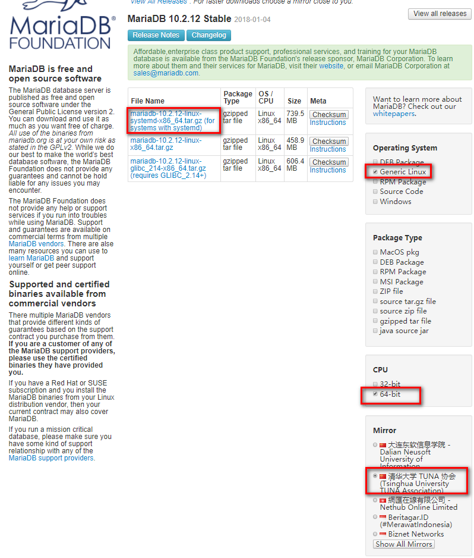Note
centos7的下载systemd的，centos6下载第二个。
[root@7 src]# cd /usr/src
[root@7 src]# wget https://downloads.mariadb.org/interstitial/mariadb-10.2.12/bintar-linux-systemd-x86_64/mariadb-10.2.12-linux-systemd-x86_64.tar.gz/from/http%3A/.edu.cn/mariadb/ \
-O mariadb-10.2.12-linux-systemd-x86_64.tar.gz
[root@7 src]# tar xf mariadb-10.2.12-linux-systemd-x86_64.tar.gz -C /usr/local/
8.3.2.3. 创建用户和组¶
[root@7 src]# groupadd -g 27 -r mysql
[root@7 src]# useradd -r -u 27 -g mysql mysql -s /sbin/nologin
8.3.2.4. 安装¶
[root@7 src]# cd /usr/local/ [root@7 local]# ls bin etc games include lib lib64 libexec mariadb-10.2.12-linux-systemd-x86_64 sbin share src [root@7 local]# ln -s mariadb-10.2.12-linux-systemd-x86_64 mysql [root@7 local]# chown -R mysql:mysql mysql/ [root@7 local]# echo ‘PATH=/usr/local/bin:$PATH’ >> /etc/profile.d/mysql.sh [root@7 local]# cat /etc/profile.d/mysql.sh PATH=/usr/local/bin:$PATH [root@7 local]# source /etc/profile.d/mysql.sh
8.3.2.5. 存储设备准备¶
Note
数据库文件占用空间很大的，建议放到lvm上面去，容易扩展，避免导致根分区占用过大。
[root@7 local]# lsblk
NAME MAJ:MIN RM SIZE RO TYPE MOUNTPOINT
sda 8:0 0 200G 0 disk
├─sda1 8:1 0 1G 0 part /boot
└─sda2 8:2 0 199G 0 part
├─centos-root 253:0 0 50G 0 lvm /
├─centos-swap 253:1 0 2G 0 lvm [SWAP]
└─centos-home 253:2 0 147G 0 lvm /home
sr0 11:0 1 8.1G 0 rom /mnt/cdrom
[root@7 local]# for i in `find /sys/devices/ -name scan` ; do echo "- - -" > $i ; done;
[root@7 local]# lsblk
NAME MAJ:MIN RM SIZE RO TYPE MOUNTPOINT
sda 8:0 0 200G 0 disk
├─sda1 8:1 0 1G 0 part /boot
└─sda2 8:2 0 199G 0 part
├─centos-root 253:0 0 50G 0 lvm /
├─centos-swap 253:1 0 2G 0 lvm [SWAP]
└─centos-home 253:2 0 147G 0 lvm /home
sdb 8:16 0 20G 0 disk
sr0 11:0 1 8.1G 0 rom /mnt/cdrom
[root@7 local]# fdisk /dev/sdb
Welcome to fdisk (util-linux 2.23.2).
Changes will remain in memory only, until you decide to write them.
Be careful before using the write command.
Device does not contain a recognized partition table
Building a new DOS disklabel with disk identifier 0x489a4915.
Command (m for help): n
Partition type:
p primary (0 primary, 0 extended, 4 free)
e extended
Select (default p): p
Partition number (1-4, default 1):
First sector (2048-41943039, default 2048):
Using default value 2048
Last sector, +sectors or +size{K,M,G} (2048-41943039, default 41943039): +5G
Partition 1 of type Linux and of size 5 GiB is set
Command (m for help): t
Selected partition 1
Hex code (type L to list all codes): 8e
Changed type of partition 'Linux' to 'Linux LVM'
Command (m for help): p
Disk /dev/sdb: 21.5 GB, 21474836480 bytes, 41943040 sectors
Units = sectors of 1 * 512 = 512 bytes
Sector size (logical/physical): 512 bytes / 512 bytes
I/O size (minimum/optimal): 512 bytes / 512 bytes
Disk label type: dos
Disk identifier: 0x489a4915
Device Boot Start End Blocks Id System
/dev/sdb1 2048 10487807 5242880 8e Linux LVM
Command (m for help): w
The partition table has been altered!
Calling ioctl() to re-read partition table.
Syncing disks.
[root@7 local]# lsblk
NAME MAJ:MIN RM SIZE RO TYPE MOUNTPOINT
sda 8:0 0 200G 0 disk
├─sda1 8:1 0 1G 0 part /boot
└─sda2 8:2 0 199G 0 part
├─centos-root 253:0 0 50G 0 lvm /
├─centos-swap 253:1 0 2G 0 lvm [SWAP]
└─centos-home 253:2 0 147G 0 lvm /home
sdb 8:16 0 20G 0 disk
└─sdb1 8:17 0 5G 0 part
sr0 11:0 1 8.1G 0 rom /mnt/cdrom
[root@7 local]# pvcreate /dev/sdb1
Physical volume "/dev/sdb1" successfully created.
[root@7 local]# vgcreate vg_data /dev/sdb1
Volume group "vg_data" successfully created
[root@7 local]# lvcreate -n lv_mysql -l 100%FREE vg_data
Logical volume "lv_mysql" created.
[root@7 local]# mkfs.xfs /dev/mapper/vg_data-lv_mysql
[root@7 local]# mkdir /data/mysql -pv
mkdir: created directory ‘/data’
mkdir: created directory ‘/data/mysql’
[root@7 local]# mount /dev/mapper/vg_data-lv_mysql /data/mysql/
[root@7 local]# tail -n /etc/mtab
tail: /etc/mtab: invalid number of lines
[root@7 local]# tail -n 1 /etc/mtab
/dev/mapper/vg_data-lv_mysql /data/mysql xfs rw,seclabel,relatime,attr2,inode64,noquota 0 0
[root@7 local]# tail -n 1 /etc/mtab >> /etc/fstab
[root@7 local]# cd /data/
[root@7 data]# ll
total 0
drwxr-xr-x. 2 root root 6 Jan 20 14:00 mysql
[root@7 data]# chown mysql.mysql mysql/
[root@7 data]# ll
total 0
drwxr-xr-x. 2 mysql mysql 6 Jan 20 14:00 mysql
[root@7 data]# chmod -R 770 mysql/
8.3.2.6. 安装并配置¶
[root@7 data]# chmod -R 770 mysql/
[root@7 data]# cd /usr/local/mysql/
[root@7 mysql]# ll
[root@7 mysql]# ./scripts/mysql_install_db --datadir=/data/mysql --user=mysql # 安装库
[root@7 mysql]# cp support-files/my-huge.cnf /etc/my.conf
[root@7 mysql]# ll /etc/my.conf
-rw-r--r--. 1 root root 4914 Jan 20 14:19 /etc/my.conf
[root@7 mysql]# vim /etc/my.conf
# 添加如下项到[mysqld]的下一行
datadir = /data/mysql
8.3.2.7. 启动服务¶
[root@7 mysql]# cp support-files/mysql.server /etc/rc.d/init.d/mysqld
[root@centos7 mysql]# vim /etc/rc.d/init.d/mysqld
# 找到basedir行，修改如下内容
basedir=/usr/local/mysql
datadir=/data/mysqldb
[root@centos7 mysql]# chkconfig --add mysqld
[root@centos7 mysql]# chkconfig mysqld on
[root@centos7 mysql]# mysql
Welcome to the MariaDB monitor. Commands end with ; or \g.
Your MariaDB connection id is 9
Server version: 10.2.12-MariaDB MariaDB Server
Copyright (c) 2000, 2017, Oracle, MariaDB Corporation Ab and others.
Type 'help;' or '\h' for help. Type '\c' to clear the current input statement.
MariaDB [(none)]>
8.3.2.8. 数据库安全安装设置¶
[root@centos7 mysql]# mysql_secure_installation
NOTE: RUNNING ALL PARTS OF THIS SCRIPT IS RECOMMENDED FOR ALL MariaDB
SERVERS IN PRODUCTION USE! PLEASE READ EACH STEP CAREFULLY!
In order to log into MariaDB to secure it, we'll need the current
password for the root user. If you've just installed MariaDB, and
you haven't set the root password yet, the password will be blank,
so you should just press enter here.
Enter current password for root (enter for none): # 没有密码就直接回车，有的话就输入
OK, successfully used password, moving on...
Setting the root password ensures that nobody can log into the MariaDB
root user without the proper authorisation.
Set root password? [Y/n] y
New password:
Re-enter new password:
Password updated successfully!
Reloading privilege tables..
... Success!
By default, a MariaDB installation has an anonymous user, allowing anyone
to log into MariaDB without having to have a user account created for
them. This is intended only for testing, and to make the installation
go a bit smoother. You should remove them before moving into a
production environment.
Remove anonymous users? [Y/n] y
... Success!
Normally, root should only be allowed to connect from 'localhost'. This
ensures that someone cannot guess at the root password from the network.
Disallow root login remotely? [Y/n] y
... Success!
By default, MariaDB comes with a database named 'test' that anyone can
access. This is also intended only for testing, and should be removed
before moving into a production environment.
Remove test database and access to it? [Y/n] y
- Dropping test database...
... Success!
- Removing privileges on test database...
... Success!
Reloading the privilege tables will ensure that all changes made so far
will take effect immediately.
Reload privilege tables now? [Y/n] y
... Success!
Cleaning up...
All done! If you've completed all of the above steps, your MariaDB
installation should now be secure.
Thanks for using MariaDB!
8.3.3. 源码安装¶
# 下载文件
wget https://downloads.mariadb.org/interstitial/mariadb-10.2.12/bintar-linux-systemd-x86_64/mariadb-10.2.12-linux-systemd-x86_64.tar.gz/from/http%3A//mirrors.tuna.tsinghua.edu.cn/mariadb/ \
-O mariadb-10.2.12-linux-systemd-x86_64.tar.gz
# 解压
[root@centos151 ~]# tar xf mariadb-10.2.12.tar.gz
[root@centos151 ~]# cd mariadb-10.2.12/
[root@centos151 mariadb-10.2.12]#
[root@centos151 bin]# cmake . \
-DCMAKE_INSTALL_PREFIX=/app/mysql \
-DMYSQL_DATADIR=/mysqldb/ \
-DSYSCONFDIR=/etc \
-DMYSQL_USER=mysql \
-DWITH_INNOBASE_STORAGE_ENGINE=1 \
-DWITH_ARCHIVE_STORAGE_ENGINE=1 \
-DWITH_BLACKHOLE_STORAGE_ENGINE=1 \
-DWITH_READLINE=1 \
-DWITH_SSL=system \
-DWITH_ZLIB=system \
-DWITH_LIBWRAP=0 \
-DMYSQL_UNIX_ADDR=/app/mysql/mysql.sock \
-DDEFAULT_CHARSET=utf8 \
-DDEFAULT_COLLATION=utf8_general_ci \
-DENABLED_LOCAL_INFILE=1 \
-DWITH_PARTITION_STORAGE_ENGINE=1 \
-DWITH_DEBUG=0 \
-DWITHOUT_MROONGA_STORAGE_ENGINE=1
[root@centos151 mariadb-10.2.12]# make && make install
[root@centos151 mariadb-10.2.12]# echo 'PATH=/app/mysql/bin:$PATH' > /etc/profile.d/mysql.sh
[root@centos151 mariadb-10.2.12]# source /etc/profile.d/mysql.sh
[root@centos151 mariadb-10.2.12]# cd /app/mysql
[root@centos151 mysql]# scripts/mysql_install_db --basedir=/app/mysql --datadir=/app/mysql/data --user=mysql
[root@centos151 mysql]# cp support-files/my-huge.cnf /etc/my.cnf
[root@centos151 mysql]# vim /etc/my.cnf
# 添加如下行到mysqld片段内部
basedir=/app/mysql
datadir=/app/mysql/data
[root@centos151 mysql]# chown mysql.mysql /app/mysql/ -R
[root@centos151 mysql]# chkconfig --add mysql
[root@centos151 init.d]# service mysql restart
8.3.4. 多实例安装¶
在一个服务器上跑多个实例，每一个实例一个端口。
这里主要要以yum安装的方法来实现多个实例。
8.3.4.1. 规划¶
数据存储： /data/mysql/{3306,3307,3308}/data
端口： 3306，3307，3308
配置文件：放到各自的目录
服务启动文件：放到各自目录，给initd创建软连接。
程序文件： yum安装的那份就可以了。
8.3.4.2. yum安装¶
[root@centos151 ~]# yum install mariadb-server mariadb
[root@centos151 ~]# rpm -ql MariaDB-server
[root@centos151 ~]# systemctl restart mariadb
[root@centos151 ~]# mysql
8.3.4.3. 配置存储¶
安装规划创建必要的目录
[root@centos151 ~]# clear
[root@centos151 ~]# mkdir /data/mysql/{3306,3307,3308}/{data,log,pid,socket,etc,service} -pv
[root@centos151 ~]# chown -R mysql.mysql /data/mysql/
[root@centos151 ~]# tree /data/mysql
/data/mysql
├── 3306
│ ├── data
│ ├── etc
│ ├── log
│ ├── pid
│ └── socket
| └── service
├── 3307
│ ├── data
│ ├── etc
│ ├── log
│ ├── pid
│ └── socket
| └── service
└── 3308
├── data
├── etc
├── log
├── pid
└── socket
└── service
8.3.4.4. 安装数据库¶
先获取basedir
[root@centos151 ~]# mysql -e 'show variables like "basedir"'
+---------------+-------+
| Variable_name | Value |
+---------------+-------+
| basedir | /usr/ |
+---------------+-------+
8.3.4.5. 开始安装¶
[root@centos151 ~]# mysql_install_db --datadir=/data/mysql/3306/data --user=mysql --basedir=/usr
[root@centos151 ~]# mysql_install_db --datadir=/data/mysql/3307/data --user=mysql --basedir=/usr
[root@centos151 ~]# mysql_install_db --datadir=/data/mysql/3308/data --user=mysql --basedir=/usr
8.3.4.6. 关闭原有服务¶
[root@centos151 3306]# systemctl disable mariadb
Removed symlink /etc/systemd/system/multi-user.target.wants/mariadb.service.
Removed symlink /etc/systemd/system/mysql.service.
Removed symlink /etc/systemd/system/mysqld.service.
[root@centos151 3306]# systemctl stop mariadb
8.3.4.7. 准备其他文件¶
配置文件准备
[root@centos151 ~]# cp /etc/my.cnf /data/mysql/3306/etc/
[root@centos151 ~]# vim /data/mysql/3306/etc/my.cnf
[root@centos151 ~]# cat /data/mysql/3306/etc/my.cnf
[mysqld]
port=3306
datadir=/data/mysql/3306/data
socket=/data/mysql/3306/socket/mariadb.sock
symbolic-links=0
[mysqld-safe]
log-error=/data/mysql/3306/log/mariadb.log
pid-file=/data/mysql/3306/pid/mariadb.pid
[root@centos151 ~]# cp /data/mysql/3306/etc/my.cnf /data/mysql/3307/etc/
[root@centos151 ~]# cp /data/mysql/3306/etc/my.cnf /data/mysql/3308/etc/
[root@centos151 ~]# sed -i 's@3306@3307@' /data/mysql/3307/etc/my.cnf
[root@centos151 ~]# sed -i 's@3306@3308@' /data/mysql/3308/etc/my.cnf
服务文件准备
[root@centos151 3306]# vim service/mysqld
[root@centos151 3306]# cat service/mysqld
#!/bin/bash
port=3306
mysql_user="root"
mysql_pwd=""
cmd_path="/usr/bin/mysql"
mysql_basedir="/data/mysql/3306/data"
mysql_sock="${mysql_basedir}/${port}/socket/mariadb.sock"
function_start_mysql()
{
if [ ! -e "$mysql_sock" ];then
printf "Starting MySQL...\n"
${cmd_path}/mysqld_safe --defaults-file=${mysql_basedir}/${port}/etc/my.cnf &> /dev/null &
else
printf "MySQL is running...\n"
exit
fi
}
function_stop_mysql()
{
if [ ! -e "$mysql_sock" ];then
printf "MySQL is stopped...\n"
exit
else
printf "Stoping MySQL...\n"
${cmd_path}/mysqladmin -u ${mysql_user} -p${mysql_pwd} -S ${mysql_sock} shutdown
fi
}
function_restart_mysql()
{
printf "Restarting MySQL...\n"
function_stop_mysql
sleep 2
function_start_mysql
}
case $1 in
start)
function_start_mysql
;;
stop)
function_stop_mysql
;;
restart)
function_restart_mysql
;;
*)
printf "Usage: ${mysql_basedir}/${port}/bin/mysqld {start|stop|restart}\n"
esac
[root@centos151 3306]# cp service/mysqld ../3308/service/
[root@centos151 3306]# sed -i 's@3306@3307@' ../3307/service/mysqld
[root@centos151 3306]# sed -i 's@3306@3308@' ../3308/service/mysqld
[root@centos151 3306]# chmod a+x service/mysqld
[root@centos151 3306]# chmod a+x ../3307/service/mysqld
[root@centos151 3306]# chmod a+x ../3308/service/mysqld
8.3.4.8. 启动服务测试¶
[root@centos151 3306]# ../3306/service/mysqld start
[root@centos151 3306]# ../3307/service/mysqld start
[root@centos151 3306]# ../3308/service/mysqld start
[root@centos151 3306]# netstat -tunlp |grep 330
tcp6 0 0 :::3307 :::* LISTEN 60029/mysqld
tcp6 0 0 :::3308 :::* LISTEN 60138/mysqld
tcp6 0 0 :::3306 :::* LISTEN 59696/mysqld
8.3.4.9. 后续完善¶
安全配置
[root@centos151 mysql]# mysql_secure_installation -S /data/mysql/3306/socket/mysql.sock
NOTE: RUNNING ALL PARTS OF THIS SCRIPT IS RECOMMENDED FOR ALL MariaDB
SERVERS IN PRODUCTION USE! PLEASE READ EACH STEP CAREFULLY!
In order to log into MariaDB to secure it, we'll need the current
password for the root user. If you've just installed MariaDB, and
you haven't set the root password yet, the password will be blank,
so you should just press enter here.
Enter current password for root (enter for none):
OK, successfully used password, moving on...
Setting the root password ensures that nobody can log into the MariaDB
root user without the proper authorisation.
Set root password? [Y/n] y
New password:
Re-enter new password:
Password updated successfully!
Reloading privilege tables..
... Success!
By default, a MariaDB installation has an anonymous user, allowing anyone
to log into MariaDB without having to have a user account created for
them. This is intended only for testing, and to make the installation
go a bit smoother. You should remove them before moving into a
production environment.
Remove anonymous users? [Y/n] y
... Success!
Normally, root should only be allowed to connect from 'localhost'. This
ensures that someone cannot guess at the root password from the network.
Disallow root login remotely? [Y/n] y
... Success!
By default, MariaDB comes with a database named 'test' that anyone can
access. This is also intended only for testing, and should be removed
before moving into a production environment.
Remove test database and access to it? [Y/n] y
- Dropping test database...
... Success!
- Removing privileges on test database...
... Success!
Reloading the privilege tables will ensure that all changes made so far
will take effect immediately.
Reload privilege tables now? [Y/n] y
... Success!
Cleaning up...
All done! If you've completed all of the above steps, your MariaDB
installation should now be secure.
Thanks for using MariaDB!
[root@centos151 mysql]# mysql_secure_installation -S /data/mysql/3307/socket/mysql.sock
[root@centos151 mysql]# mysql_secure_installation -S /data/mysql/3308/socket/mysql.sock
# 修改下mysqld的密码配置
[root@centos151 mysql]# vim 3306/service/mysqld
[root@centos151 mysql]# vim 3307/service/mysqld
[root@centos151 mysql]# vim 3308/service/mysqld
开机启动
[root@centos151 mysql]# echo "/data/mysql/3306/service/mysqld start " >> /etc/rc.d/rc.local
[root@centos151 mysql]# echo "/data/mysql/3307/service/mysqld start " >> /etc/rc.d/rc.local
[root@centos151 mysql]# echo "/data/mysql/3308/service/mysqld start " >> /etc/rc.d/rc.local
修改权限
[root@centos151 mysql]# chmod 700 3306/service/mysqld
[root@centos151 mysql]# chmod 700 3307/service/mysqld
[root@centos151 mysql]# chmod 700 3308/service/mysqld
Note
这里可以写成sysv风格的脚本，每个起一个服务名字即可。
8.4. mysql终端入门¶
8.4.1. mysql提示符修改¶
[root@iZ2ze640ra8ceysx5817skZ ~]# man mysql # 进入man文档搜索prompt即可找到如下片段内容。
┌───────┬──────────────────────────────────────────────────────────┐
│Option │ Description │
├───────┼──────────────────────────────────────────────────────────┤
│\c │ A counter that increments for each statement you issue │
├───────┼──────────────────────────────────────────────────────────┤
│\D │ The full current date │
├───────┼──────────────────────────────────────────────────────────┤
│\d │ The default database │
├───────┼──────────────────────────────────────────────────────────┤
│\h │ The server host │
├───────┼──────────────────────────────────────────────────────────┤
│\l │ The current delimiter (new in 5.1.12) │
├───────┼──────────────────────────────────────────────────────────┤
│\m │ Minutes of the current time │
├───────┼──────────────────────────────────────────────────────────┤
│\n │ A newline character │
├───────┼──────────────────────────────────────────────────────────┤
│\O │ The current month in three-letter format (Jan, Feb, ...) │
├───────┼──────────────────────────────────────────────────────────┤
│\o │ The current month in numeric format │
├───────┼──────────────────────────────────────────────────────────┤
│\P │ am/pm │
├───────┼──────────────────────────────────────────────────────────┤
│\p │ The current TCP/IP port or socket file │
├───────┼──────────────────────────────────────────────────────────┤
│\R │ The current time, in 24-hour military time (0–23) │
├───────┼──────────────────────────────────────────────────────────┤
│\r │ The current time, standard 12-hour time (1–12) │
├───────┼──────────────────────────────────────────────────────────┤
│\S │ Semicolon │
├───────┼──────────────────────────────────────────────────────────┤
│\s │ Seconds of the current time │
├───────┼──────────────────────────────────────────────────────────┤
│\t │ A tab character │
├───────┼──────────────────────────────────────────────────────────┤
│\U │ │
│ │ Your full user_name@host_name account name │
├───────┼──────────────────────────────────────────────────────────┤
│\u │ Your user name │
├───────┼──────────────────────────────────────────────────────────┤
│\v │ The server version │
├───────┼──────────────────────────────────────────────────────────┤
│\w │ The current day of the week in three-letter format (Mon, │
│ │ Tue, ...) │
├───────┼──────────────────────────────────────────────────────────┤
│\Y │ The current year, four digits │
├───────┼──────────────────────────────────────────────────────────┤
│\y │ The current year, two digits │
├───────┼──────────────────────────────────────────────────────────┤
│\_ │ A space │
├───────┼──────────────────────────────────────────────────────────┤
│\ │ A space (a space follows the backslash) │
├───────┼──────────────────────────────────────────────────────────┤
│\´ │ Single quote │
├───────┼──────────────────────────────────────────────────────────┤
│\" │ Double quote │
├───────┼──────────────────────────────────────────────────────────┤
│\\ │ A literal “\” backslash character │
├───────┼──────────────────────────────────────────────────────────┤
│\x │ │
│ │ x, for any “x” not listed above │
└───────┴──────────────────────────────────────────────────────────┘
You can set the prompt in several ways:
· Use an environment variable. You can set the MYSQL_PS1 environment variable to a prompt string. For example:
shell> export MYSQL_PS1="(\u@\h) [\d]> "
· Use a command-line option. You can set the --prompt option on the command line to mysql. For example:
shell> mysql --prompt="(\u@\h) [\d]> "
(user@host) [database]>
· Use an option file. You can set the prompt option in the [mysql] group of any MySQL option file, such as /etc/my.cnf or the .my.cnf file in your home directory.
For example:
[mysql]
prompt=(\\u@\\h) [\\d]>\\_
我这里采用永久修改的办法，编辑配置文件方式。
[root@iZ2ze640ra8ceysx5817skZ ~]# mysql --prompt="\R:\m:\s (\u@\h)[\d][\c]>" -u root -p
Enter password:
Welcome to the MariaDB monitor. Commands end with ; or \g.
Your MariaDB connection id is 426
Server version: 5.5.56-MariaDB MariaDB Server
Copyright (c) 2000, 2017, Oracle, MariaDB Corporation Ab and others.
Type 'help;' or '\h' for help. Type '\c' to clear the current input statement.
10:49:02 (root@localhost)[(none)][1]>use mysql;
Reading table information for completion of table and column names
You can turn off this feature to get a quicker startup with -A
# 写到配置文件中去。
[root@iZ2ze640ra8ceysx5817skZ ~]# vim /etc/my.cnf.d/mysql-clients.cnf
[root@iZ2ze640ra8ceysx5817skZ ~]# cat /etc/my.cnf.d/mysql-clients.cnf
#
# These groups are read by MariaDB command-line tools
# Use it for options that affect only one utility
#
[mysql]
prompt="\\R:\\m:\\s (\u@\h)[\d][\c]>"
[mysql_upgrade]
[mysqladmin]
[mysqlbinlog]
[mysqlcheck]
[mysqldump]
[mysqlimport]
[mysqlshow]
[mysqlslap]
[root@iZ2ze640ra8ceysx5817skZ ~]# !vim
vim /etc/my.cnf.d/mysql-clients.cnf
[root@iZ2ze640ra8ceysx5817skZ ~]# mysql -u root -p
Enter password:
Welcome to the MariaDB monitor. Commands end with ; or \g.
Your MariaDB connection id is 429
Server version: 5.5.56-MariaDB MariaDB Server
Copyright (c) 2000, 2017, Oracle, MariaDB Corporation Ab and others.
Type 'help;' or '\h' for help. Type '\c' to clear the current input statement.
10:51:26 (root@localhost)[(none)][1]>use mysql
Reading table information for completion of table and column names
You can turn off this feature to get a quicker startup with -A
8.4.2. 用户和密码写到配置文件中¶
配置前的连接方式
[root@centos151 init.d]# mysql -u root -p
Enter password:
Welcome to the MariaDB monitor. Commands end with ; or \g.
Your MariaDB connection id is 21
Server version: 10.2.12-MariaDB-log Source distribution
Copyright (c) 2000, 2017, Oracle, MariaDB Corporation Ab and others.
Type 'help;' or '\h' for help. Type '\c' to clear the current input statement.
MariaDB [(none)]> quit
Bye
配置
- [root@centos151 init.d]# vim ~/.my.cnf
- # 添加如下行 [client] user=root password=oracle
测试
[root@centos151 init.d]# mysql
Welcome to the MariaDB monitor. Commands end with ; or \g.
Your MariaDB connection id is 12
Server version: 10.2.12-MariaDB-log Source distribution
Copyright (c) 2000, 2017, Oracle, MariaDB Corporation Ab and others.
Type 'help;' or '\h' for help. Type '\c' to clear the current input statement.
MariaDB [(none)]>
8.5. mysql入门¶
mariadb的特性
- 单进程，多线程
- 插件式存储引擎
- 开源
- 提供较多测试组件
8.5.1. 客户端工具¶
mysql命令的重要选项
| --print-default | |
| 默认选项 | |
| --verbose | 显示详细信息 |
| -u | 指定用户 |
| -p | 指定密码 |
| -h | 服务器主机 |
Note
mysql中的用户是username@host构成的支持通配,%代表任意长度任意字符，-匹配任意单个字符。
8.5.3. 数据库操作¶
创建数据库和删除数据库
create database t2;
drop database t2;
查看字符集和排序规则
show character set;
show collation;
show table status from mysql\G
查看数据库引擎
创建表
create table student(id int primary key AUTO_INCREMENT , age int unsigned ,name varchar(30), sex enum('m','f') default 'm');
MariaDB [test]> desc student;
+-------+------------------+------+-----+---------+----------------+
| Field | Type | Null | Key | Default | Extra |
+-------+------------------+------+-----+---------+----------------+
| id | int(11) | NO | PRI | NULL | auto_increment |
| age | int(10) unsigned | YES | | NULL | |
| name | varchar(30) | YES | | NULL | |
| sex | enum('m','f') | YES | | m | |
+-------+------------------+------+-----+---------+----------------+
4 rows in set (0.00 sec)
MariaDB [test]> create tables t2 select * from student;
ERROR 1064 (42000): You have an error in your SQL syntax; check the manual that corresponds to your MariaDB server version for the right syntax to use near 'tables t2 select * from student' at line 1
MariaDB [test]> create table t2 select * from student;
Query OK, 0 rows affected (0.01 sec)
Records: 0 Duplicates: 0 Warnings: 0
MariaDB [test]> desc t2;
+-------+------------------+------+-----+---------+-------+
| Field | Type | Null | Key | Default | Extra |
+-------+------------------+------+-----+---------+-------+
| id | int(11) | NO | | 0 | |
| age | int(10) unsigned | YES | | NULL | |
| name | varchar(30) | YES | | NULL | |
| sex | enum('m','f') | YES | | m | |
+-------+------------------+------+-----+---------+-------+
4 rows in set (0.00 sec)
Note
上面可以发现通过select来去创建一个表会丢失主键和自动增长的。
表查看类
MariaDB [test]> show tables;
+----------------+
| Tables_in_test |
+----------------+
| student |
+----------------+
1 row in set (0.00 sec)
MariaDB [test]> desc student;
+-------+------------------+------+-----+---------+----------------+
| Field | Type | Null | Key | Default | Extra |
+-------+------------------+------+-----+---------+----------------+
| id | int(11) | NO | PRI | NULL | auto_increment |
| age | int(10) unsigned | YES | | NULL | |
| name | varchar(30) | YES | | NULL | |
| sex | enum('m','f') | YES | | m | |
+-------+------------------+------+-----+---------+----------------+
4 rows in set (0.00 sec)
MariaDB [test]> show create table student;
+---------+-------------------------------------------------------------------------------------------------------------------------------------------------------------------------------------------------------------------------------------------+
| Table | Create Table |
+---------+-------------------------------------------------------------------------------------------------------------------------------------------------------------------------------------------------------------------------------------------+
| student | CREATE TABLE `student` (
`id` int(11) NOT NULL AUTO_INCREMENT,
`age` int(10) unsigned DEFAULT NULL,
`name` varchar(30) DEFAULT NULL,
`sex` enum('m','f') DEFAULT 'm',
PRIMARY KEY (`id`)
) ENGINE=InnoDB DEFAULT CHARSET=latin1 |
+---------+-------------------------------------------------------------------------------------------------------------------------------------------------------------------------------------------------------------------------------------------+
1 row in set (0.01 sec)
MariaDB [test]> show table status like 'student';
数据类型
tinyint
smallint
mediumint
int
bigint
float(m,d)
double(m,d)
decimal(m,d)
char(n)
varchar(n)
tinytext
text
mediumtext
longtext
binary(m)
varbinary(m)
enum
blob
date
time
datetime
timestamp
year(2)
year(4)
修饰符
null
not null
default
primary key
unique key
character set name
auto_increment
unsigned
字段修改
MariaDB [test]> desc student;
+-------+------------------+------+-----+---------+----------------+
| Field | Type | Null | Key | Default | Extra |
+-------+------------------+------+-----+---------+----------------+
| id | int(11) | NO | PRI | NULL | auto_increment |
| age | int(10) unsigned | YES | | NULL | |
| name | varchar(30) | YES | | NULL | |
| sex | enum('m','f') | YES | | m | |
+-------+------------------+------+-----+---------+----------------+
4 rows in set (0.00 sec)
MariaDB [test]> alter table student add address varchar(100) after name;
Query OK, 0 rows affected (0.02 sec)
Records: 0 Duplicates: 0 Warnings: 0
MariaDB [test]> desc student;
+---------+------------------+------+-----+---------+----------------+
| Field | Type | Null | Key | Default | Extra |
+---------+------------------+------+-----+---------+----------------+
| id | int(11) | NO | PRI | NULL | auto_increment |
| age | int(10) unsigned | YES | | NULL | |
| name | varchar(30) | YES | | NULL | |
| address | varchar(100) | YES | | NULL | |
| sex | enum('m','f') | YES | | m | |
+---------+------------------+------+-----+---------+----------------+
5 rows in set (0.00 sec)
MariaDB [test]> alter table student drop address;
MariaDB [test]> alter table student change name stuname varchar(200);
MariaDB [test]> alter table student modify stuname varchar(300);
MariaDB [test]> desc student;
+---------+------------------+------+-----+---------+----------------+
| Field | Type | Null | Key | Default | Extra |
+---------+------------------+------+-----+---------+----------------+
| id | int(11) | NO | PRI | NULL | auto_increment |
| age | int(10) unsigned | YES | | NULL | |
| stuname | varchar(300) | YES | | NULL | |
| sex | enum('m','f') | YES | | m | |
+---------+------------------+------+-----+---------+----------------+
4 rows in set (0.00 sec)
MariaDB [test]> alter table student rename stu;
Query OK, 0 rows affected (0.00 sec)
索引
MariaDB [test]> create index index_age on stu(age);
Query OK, 0 rows affected (0.23 sec)
Records: 0 Duplicates: 0 Warnings: 0
MariaDB [test]> show index from stu;
+-------+------------+-----------+--------------+-------------+-----------+-------------+----------+--------+------+------------+---------+---------------+
| Table | Non_unique | Key_name | Seq_in_index | Column_name | Collation | Cardinality | Sub_part | Packed | Null | Index_type | Comment | Index_comment |
+-------+------------+-----------+--------------+-------------+-----------+-------------+----------+--------+------+------------+---------+---------------+
| stu | 0 | PRIMARY | 1 | id | A | 0 | NULL | NULL | | BTREE | | |
| stu | 1 | index_age | 1 | age | A | 0 | NULL | NULL | YES | BTREE | | |
+-------+------------+-----------+--------------+-------------+-----------+-------------+----------+--------+------+------------+---------+---------------+
2 rows in set (0.00 sec)
MariaDB [test]> drop index index_age on stu;
Query OK, 0 rows affected (0.00 sec)
Records: 0 Duplicates: 0 Warnings: 0
dml语句
MariaDB [test]> desc stu;
+---------+------------------+------+-----+---------+----------------+
| Field | Type | Null | Key | Default | Extra |
+---------+------------------+------+-----+---------+----------------+
| id | int(11) | NO | PRI | NULL | auto_increment |
| age | int(10) unsigned | YES | | NULL | |
| stuname | varchar(300) | YES | | NULL | |
| sex | enum('m','f') | YES | | m | |
+---------+------------------+------+-----+---------+----------------+
4 rows in set (0.00 sec)
MariaDB [test]> insert into stu(age,stuname) values(20,'zhao');
Query OK, 1 row affected (0.01 sec)
MariaDB [test]> insert into stu(age,stuname) values(21,'zhao2'),(22,'zhao3');
Query OK, 2 rows affected (0.00 sec)
Records: 2 Duplicates: 0 Warnings: 0
MariaDB [test]> insert into stu set age=23,stuname='zhao3';
Query OK, 1 row affected (0.01 sec)
MariaDB [test]> select * from stu;
+----+------+---------+------+
| id | age | stuname | sex |
+----+------+---------+------+
| 1 | 20 | zhao | m |
| 2 | 21 | zhao2 | m |
| 3 | 22 | zhao3 | m |
| 4 | 23 | zhao3 | m |
+----+------+---------+------+
4 rows in set (0.00 sec)
MariaDB [test]> update stu set sex='f' where id =4;
MariaDB [test]> update stu set sex='f' where id =4;
Query OK, 1 row affected (0.00 sec)
Rows matched: 1 Changed: 1 Warnings: 0
MariaDB [test]> delete from stu where id=1;
Query OK, 1 row affected (0.00 sec)
MariaDB [test]> select * from stu;
+----+------+---------+------+
| id | age | stuname | sex |
+----+------+---------+------+
| 2 | 21 | zhao2 | m |
| 3 | 22 | zhao3 | m |
| 4 | 23 | zhao3 | f |
+----+------+---------+------+
3 rows in set (0.00 sec)
dql语句
MariaDB [test]> select * from stu where age between 21 and 22;
+----+------+---------+------+
| id | age | stuname | sex |
+----+------+---------+------+
| 2 | 21 | zhao2 | m |
| 3 | 22 | zhao3 | m |
+----+------+---------+------+
2 rows in set (0.00 sec)
MariaDB [test]> select * from stu where stuname like 'zhao%';
+----+------+---------+------+
| id | age | stuname | sex |
+----+------+---------+------+
| 2 | 21 | zhao2 | m |
| 3 | 22 | zhao3 | m |
| 4 | 23 | zhao3 | f |
+----+------+---------+------+
3 rows in set (0.00 sec)
MariaDB [test]> select * from stu where stuname is not null;
+----+------+---------+------+
| id | age | stuname | sex |
+----+------+---------+------+
| 2 | 21 | zhao2 | m |
| 3 | 22 | zhao3 | m |
| 4 | 23 | zhao3 | f |
+----+------+---------+------+
3 rows in set (0.00 sec)
MariaDB [test]> select * from stu where age in (21,22);
+----+------+---------+------+
| id | age | stuname | sex |
+----+------+---------+------+
| 2 | 21 | zhao2 | m |
| 3 | 22 | zhao3 | m |
+----+------+---------+------+
2 rows in set (0.00 sec)
用户账号
MariaDB [test]> create user 'zhao'@'%' identified by 'oracle';
Query OK, 0 rows affected (0.00 sec)
MariaDB [test]> flush privileges;
Query OK, 0 rows affected (0.00 sec)
MariaDB [test]> drop user 'zhao'@'%';
MariaDB [test]> create user 'zhao'@'%' identified by 'oracle';
MariaDB [test]> set password for 'zhao'@'%' = password('zhao');
[root@102 ~]$ mysqladmin -u root -p password 'newpassword'
授权
MariaDB [test]> grant select ,delete on test.* to 'zhao'@'%' identified by 'oracle';
Query OK, 0 rows affected (0.37 sec)
MariaDB [test]> revoke delete on test.* from 'zhao'@'%';
Query OK, 0 rows affected (0.00 sec)
MariaDB [test]> show grants for 'zhao'@'%';
+-----------------------------------------------------------------------------------------------------+
| Grants for zhao@% |
+-----------------------------------------------------------------------------------------------------+
| GRANT USAGE ON *.* TO 'zhao'@'%' IDENTIFIED BY PASSWORD '*2447D497B9A6A15F2776055CB2D1E9F86758182F' |
| GRANT SELECT ON `test`.* TO 'zhao'@'%' |
+-----------------------------------------------------------------------------------------------------+
2 rows in set (0.00 sec)
为了后续的实验，我们导入一个文件，文件内容如下
1 2 3 4 5 6 7 8 9 10 11 12 13 14 15 16 17 18 19 20 21 22 23 24 25 26 27 28 29 30 31 32 33 34 35 36 37 38 39 40 41 42 43 44 45 46 47 48 49 50 51 52 53 54 55 56 57 58 59 60 61 62 63 64 65 66 67 68 69 70 71 72 73 74 75 76 77 78 79 80 81 82 83 84 85 86 87 88 89 90 91 92 93 94 95 96 97 98 99 100 101 102 103 104 105 106 107 108 109 110 111 112 113 114 115 116 117 118 119 120 121 122 123 124 125 126 127 128 129 130 131 132 133 134 135 136 137 138 139 140 141 142 143 144 145 146 147 148 149 150 151 152 153 154 155 156 157 158 159 160 161 162 163 164 165 166 167 168 169 170 171 172 173 174 175 176 177 178 179 180 181 182 183 184 185 186 187 188 189 190 191 192 193 194 195 196 197 198 199 200 201 202 203 204 205 206 207 208 209 210 211 212 213 | -- MySQL dump 10.13 Distrib 5.5.33, for Linux (x86_64)
--
-- Host: localhost Database: hellodb
-- ------------------------------------------------------
-- Server version 5.5.33-log
/*!40101 SET @OLD_CHARACTER_SET_CLIENT=@@CHARACTER_SET_CLIENT */;
/*!40101 SET @OLD_CHARACTER_SET_RESULTS=@@CHARACTER_SET_RESULTS */;
/*!40101 SET @OLD_COLLATION_CONNECTION=@@COLLATION_CONNECTION */;
/*!40101 SET NAMES utf8 */;
/*!40103 SET @OLD_TIME_ZONE=@@TIME_ZONE */;
/*!40103 SET TIME_ZONE='+00:00' */;
/*!40014 SET @OLD_UNIQUE_CHECKS=@@UNIQUE_CHECKS, UNIQUE_CHECKS=0 */;
/*!40014 SET @OLD_FOREIGN_KEY_CHECKS=@@FOREIGN_KEY_CHECKS, FOREIGN_KEY_CHECKS=0 */;
/*!40101 SET @OLD_SQL_MODE=@@SQL_MODE, SQL_MODE='NO_AUTO_VALUE_ON_ZERO' */;
/*!40111 SET @OLD_SQL_NOTES=@@SQL_NOTES, SQL_NOTES=0 */;
--
-- Current Database: `hellodb`
--
CREATE DATABASE /*!32312 IF NOT EXISTS*/ `hellodb` /*!40100 DEFAULT CHARACTER SET utf8 */;
USE `hellodb`;
--
-- Table structure for table `classes`
--
DROP TABLE IF EXISTS `classes`;
/*!40101 SET @saved_cs_client = @@character_set_client */;
/*!40101 SET character_set_client = utf8 */;
CREATE TABLE `classes` (
`ClassID` tinyint(3) unsigned NOT NULL AUTO_INCREMENT,
`Class` varchar(100) DEFAULT NULL,
`NumOfStu` smallint(5) unsigned DEFAULT NULL,
PRIMARY KEY (`ClassID`)
) ENGINE=InnoDB AUTO_INCREMENT=9 DEFAULT CHARSET=utf8;
/*!40101 SET character_set_client = @saved_cs_client */;
--
-- Dumping data for table `classes`
--
LOCK TABLES `classes` WRITE;
/*!40000 ALTER TABLE `classes` DISABLE KEYS */;
INSERT INTO `classes` VALUES (1,'Shaolin Pai',10),(2,'Emei Pai',7),(3,'QingCheng Pai',11),(4,'Wudang Pai',12),(5,'Riyue Shenjiao',31),(6,'Lianshan Pai',27),(7,'Ming Jiao',27),(8,'Xiaoyao Pai',15);
/*!40000 ALTER TABLE `classes` ENABLE KEYS */;
UNLOCK TABLES;
--
-- Table structure for table `coc`
--
DROP TABLE IF EXISTS `coc`;
/*!40101 SET @saved_cs_client = @@character_set_client */;
/*!40101 SET character_set_client = utf8 */;
CREATE TABLE `coc` (
`ID` int(10) unsigned NOT NULL AUTO_INCREMENT,
`ClassID` tinyint(3) unsigned NOT NULL,
`CourseID` smallint(5) unsigned DEFAULT NULL,
PRIMARY KEY (`ID`)
) ENGINE=InnoDB AUTO_INCREMENT=15 DEFAULT CHARSET=utf8;
/*!40101 SET character_set_client = @saved_cs_client */;
--
-- Dumping data for table `coc`
--
LOCK TABLES `coc` WRITE;
/*!40000 ALTER TABLE `coc` DISABLE KEYS */;
INSERT INTO `coc` VALUES (1,1,2),(2,1,5),(3,2,2),(4,2,6),(5,3,1),(6,3,7),(7,4,5),(8,4,2),(9,5,1),(10,5,9),(11,6,3),(12,6,4),(13,7,4),(14,7,3);
/*!40000 ALTER TABLE `coc` ENABLE KEYS */;
UNLOCK TABLES;
--
-- Table structure for table `courses`
--
DROP TABLE IF EXISTS `courses`;
/*!40101 SET @saved_cs_client = @@character_set_client */;
/*!40101 SET character_set_client = utf8 */;
CREATE TABLE `courses` (
`CourseID` smallint(5) unsigned NOT NULL AUTO_INCREMENT,
`Course` varchar(100) NOT NULL,
PRIMARY KEY (`CourseID`)
) ENGINE=InnoDB AUTO_INCREMENT=8 DEFAULT CHARSET=utf8;
/*!40101 SET character_set_client = @saved_cs_client */;
--
-- Dumping data for table `courses`
--
LOCK TABLES `courses` WRITE;
/*!40000 ALTER TABLE `courses` DISABLE KEYS */;
INSERT INTO `courses` VALUES (1,'Hamo Gong'),(2,'Kuihua Baodian'),(3,'Jinshe Jianfa'),(4,'Taiji Quan'),(5,'Daiyu Zanghua'),(6,'Weituo Zhang'),(7,'Dagou Bangfa');
/*!40000 ALTER TABLE `courses` ENABLE KEYS */;
UNLOCK TABLES;
--
-- Table structure for table `scores`
--
DROP TABLE IF EXISTS `scores`;
/*!40101 SET @saved_cs_client = @@character_set_client */;
/*!40101 SET character_set_client = utf8 */;
CREATE TABLE `scores` (
`ID` int(10) unsigned NOT NULL AUTO_INCREMENT,
`StuID` int(10) unsigned NOT NULL,
`CourseID` smallint(5) unsigned NOT NULL,
`Score` tinyint(3) unsigned DEFAULT NULL,
PRIMARY KEY (`ID`)
) ENGINE=InnoDB AUTO_INCREMENT=16 DEFAULT CHARSET=utf8;
/*!40101 SET character_set_client = @saved_cs_client */;
--
-- Dumping data for table `scores`
--
LOCK TABLES `scores` WRITE;
/*!40000 ALTER TABLE `scores` DISABLE KEYS */;
INSERT INTO `scores` VALUES (1,1,2,77),(2,1,6,93),(3,2,2,47),(4,2,5,97),(5,3,2,88),(6,3,6,75),(7,4,5,71),(8,4,2,89),(9,5,1,39),(10,5,7,63),(11,6,1,96),(12,7,1,86),(13,7,7,83),(14,8,4,57),(15,8,3,93);
/*!40000 ALTER TABLE `scores` ENABLE KEYS */;
UNLOCK TABLES;
--
-- Table structure for table `students`
--
DROP TABLE IF EXISTS `students`;
/*!40101 SET @saved_cs_client = @@character_set_client */;
/*!40101 SET character_set_client = utf8 */;
CREATE TABLE `students` (
`StuID` int(10) unsigned NOT NULL AUTO_INCREMENT,
`Name` varchar(50) NOT NULL,
`Age` tinyint(3) unsigned NOT NULL,
`Gender` enum('F','M') NOT NULL,
`ClassID` tinyint(3) unsigned DEFAULT NULL,
`TeacherID` int(10) unsigned DEFAULT NULL,
PRIMARY KEY (`StuID`)
) ENGINE=InnoDB AUTO_INCREMENT=26 DEFAULT CHARSET=utf8;
/*!40101 SET character_set_client = @saved_cs_client */;
--
-- Dumping data for table `students`
--
LOCK TABLES `students` WRITE;
/*!40000 ALTER TABLE `students` DISABLE KEYS */;
INSERT INTO `students` VALUES (1,'Shi Zhongyu',22,'M',2,3),(2,'Shi Potian',22,'M',1,7),(3,'Xie Yanke',53,'M',2,16),(4,'Ding Dian',32,'M',4,4),(5,'Yu Yutong',26,'M',3,1),(6,'Shi Qing',46,'M',5,NULL),(7,'Xi Ren',19,'F',3,NULL),(8,'Lin Daiyu',17,'F',7,NULL),(9,'Ren Yingying',20,'F',6,NULL),(10,'Yue Lingshan',19,'F',3,NULL),(11,'Yuan Chengzhi',23,'M',6,NULL),(12,'Wen Qingqing',19,'F',1,NULL),(13,'Tian Boguang',33,'M',2,NULL),(14,'Lu Wushuang',17,'F',3,NULL),(15,'Duan Yu',19,'M',4,NULL),(16,'Xu Zhu',21,'M',1,NULL),(17,'Lin Chong',25,'M',4,NULL),(18,'Hua Rong',23,'M',7,NULL),(19,'Xue Baochai',18,'F',6,NULL),(20,'Diao Chan',19,'F',7,NULL),(21,'Huang Yueying',22,'F',6,NULL),(22,'Xiao Qiao',20,'F',1,NULL),(23,'Ma Chao',23,'M',4,NULL),(24,'Xu Xian',27,'M',NULL,NULL),(25,'Sun Dasheng',100,'M',NULL,NULL);
/*!40000 ALTER TABLE `students` ENABLE KEYS */;
UNLOCK TABLES;
--
-- Table structure for table `teachers`
--
DROP TABLE IF EXISTS `teachers`;
/*!40101 SET @saved_cs_client = @@character_set_client */;
/*!40101 SET character_set_client = utf8 */;
CREATE TABLE `teachers` (
`TID` smallint(5) unsigned NOT NULL AUTO_INCREMENT,
`Name` varchar(100) NOT NULL,
`Age` tinyint(3) unsigned NOT NULL,
`Gender` enum('F','M') DEFAULT NULL,
PRIMARY KEY (`TID`)
) ENGINE=InnoDB AUTO_INCREMENT=5 DEFAULT CHARSET=utf8;
/*!40101 SET character_set_client = @saved_cs_client */;
--
-- Dumping data for table `teachers`
--
LOCK TABLES `teachers` WRITE;
/*!40000 ALTER TABLE `teachers` DISABLE KEYS */;
INSERT INTO `teachers` VALUES (1,'Song Jiang',45,'M'),(2,'Zhang Sanfeng',94,'M'),(3,'Miejue Shitai',77,'F'),(4,'Lin Chaoying',93,'F');
/*!40000 ALTER TABLE `teachers` ENABLE KEYS */;
UNLOCK TABLES;
--
-- Table structure for table `toc`
--
DROP TABLE IF EXISTS `toc`;
/*!40101 SET @saved_cs_client = @@character_set_client */;
/*!40101 SET character_set_client = utf8 */;
CREATE TABLE `toc` (
`ID` int(10) unsigned NOT NULL AUTO_INCREMENT,
`CourseID` smallint(5) unsigned DEFAULT NULL,
`TID` smallint(5) unsigned DEFAULT NULL,
PRIMARY KEY (`ID`)
) ENGINE=InnoDB DEFAULT CHARSET=utf8;
/*!40101 SET character_set_client = @saved_cs_client */;
--
-- Dumping data for table `toc`
--
LOCK TABLES `toc` WRITE;
/*!40000 ALTER TABLE `toc` DISABLE KEYS */;
/*!40000 ALTER TABLE `toc` ENABLE KEYS */;
UNLOCK TABLES;
/*!40103 SET TIME_ZONE=@OLD_TIME_ZONE */;
/*!40101 SET SQL_MODE=@OLD_SQL_MODE */;
/*!40014 SET FOREIGN_KEY_CHECKS=@OLD_FOREIGN_KEY_CHECKS */;
/*!40014 SET UNIQUE_CHECKS=@OLD_UNIQUE_CHECKS */;
/*!40101 SET CHARACTER_SET_CLIENT=@OLD_CHARACTER_SET_CLIENT */;
/*!40101 SET CHARACTER_SET_RESULTS=@OLD_CHARACTER_SET_RESULTS */;
/*!40101 SET COLLATION_CONNECTION=@OLD_COLLATION_CONNECTION */;
/*!40111 SET SQL_NOTES=@OLD_SQL_NOTES */;
-- Dump completed on 2013-09-03 2:51:27
|
排序
MariaDB [(none)]> use hellodb
Database changed
MariaDB [hellodb]> select * from students order by age;
+-------+---------------+-----+--------+---------+-----------+
| StuID | Name | Age | Gender | ClassID | TeacherID |
+-------+---------------+-----+--------+---------+-----------+
| 8 | Lin Daiyu | 17 | F | 7 | NULL |
| 14 | Lu Wushuang | 17 | F | 3 | NULL |
| 19 | Xue Baochai | 18 | F | 6 | NULL |
| 12 | Wen Qingqing | 19 | F | 1 | NULL |
| 10 | Yue Lingshan | 19 | F | 3 | NULL |
| 7 | Xi Ren | 19 | F | 3 | NULL |
| 15 | Duan Yu | 19 | M | 4 | NULL |
| 20 | Diao Chan | 19 | F | 7 | NULL |
| 9 | Ren Yingying | 20 | F | 6 | NULL |
| 22 | Xiao Qiao | 20 | F | 1 | NULL |
| 16 | Xu Zhu | 21 | M | 1 | NULL |
| 1 | Shi Zhongyu | 22 | M | 2 | 3 |
| 21 | Huang Yueying | 22 | F | 6 | NULL |
| 2 | Shi Potian | 22 | M | 1 | 7 |
| 23 | Ma Chao | 23 | M | 4 | NULL |
| 18 | Hua Rong | 23 | M | 7 | NULL |
| 11 | Yuan Chengzhi | 23 | M | 6 | NULL |
| 17 | Lin Chong | 25 | M | 4 | NULL |
| 5 | Yu Yutong | 26 | M | 3 | 1 |
| 24 | Xu Xian | 27 | M | NULL | NULL |
| 4 | Ding Dian | 32 | M | 4 | 4 |
| 13 | Tian Boguang | 33 | M | 2 | NULL |
| 6 | Shi Qing | 46 | M | 5 | NULL |
| 3 | Xie Yanke | 53 | M | 2 | 16 |
| 25 | Sun Dasheng | 100 | M | NULL | NULL |
+-------+---------------+-----+--------+---------+-----------+
25 rows in set (0.00 sec)
限制行
MariaDB [hellodb]> select * from students order by age limit 2;
+-------+-------------+-----+--------+---------+-----------+
| StuID | Name | Age | Gender | ClassID | TeacherID |
+-------+-------------+-----+--------+---------+-----------+
| 14 | Lu Wushuang | 17 | F | 3 | NULL |
| 8 | Lin Daiyu | 17 | F | 7 | NULL |
+-------+-------------+-----+--------+---------+-----------+
2 rows in set (0.00 sec)
MariaDB [hellodb]> select * from students order by age limit 2,4;
+-------+--------------+-----+--------+---------+-----------+
| StuID | Name | Age | Gender | ClassID | TeacherID |
+-------+--------------+-----+--------+---------+-----------+
| 19 | Xue Baochai | 18 | F | 6 | NULL |
| 15 | Duan Yu | 19 | M | 4 | NULL |
| 12 | Wen Qingqing | 19 | F | 1 | NULL |
| 7 | Xi Ren | 19 | F | 3 | NULL |
+-------+--------------+-----+--------+---------+-----------+
4 rows in set (0.00 sec)
第二种情况是跳过2个取4个。
别名
MariaDB [hellodb]> select s.name as "姓名" , s.age as "年龄" from students as s order by age limit 2,4;
+--------------+--------+
| 姓名 | 年龄 |
+--------------+--------+
| Xue Baochai | 18 |
| Duan Yu | 19 |
| Wen Qingqing | 19 |
| Xi Ren | 19 |
+--------------+--------+
4 rows in set (0.00 sec)
模糊匹配
%通配任意字符任意次数
_通配单个字符
MariaDB [hellodb]> select * from students where name like 'S%'
-> ;
+-------+-------------+-----+--------+---------+-----------+
| StuID | Name | Age | Gender | ClassID | TeacherID |
+-------+-------------+-----+--------+---------+-----------+
| 1 | Shi Zhongyu | 22 | M | 2 | 3 |
| 2 | Shi Potian | 22 | M | 1 | 7 |
| 6 | Shi Qing | 46 | M | 5 | NULL |
| 25 | Sun Dasheng | 100 | M | NULL | NULL |
+-------+-------------+-----+--------+---------+-----------+
4 rows in set (0.00 sec)
空值判断
MariaDB [hellodb]> select * from students where classid is null;
+-------+-------------+-----+--------+---------+-----------+
| StuID | Name | Age | Gender | ClassID | TeacherID |
+-------+-------------+-----+--------+---------+-----------+
| 24 | Xu Xian | 27 | M | NULL | NULL |
| 25 | Sun Dasheng | 100 | M | NULL | NULL |
+-------+-------------+-----+--------+---------+-----------+
2 rows in set (0.00 sec)
MariaDB [hellodb]> select * from students where classid is not null;
Warning
空值判断不能使用=。
分组统计
MariaDB [hellodb]> select courseid,avg(score) from scores group by courseid;
+----------+------------+
| courseid | avg(score) |
+----------+------------+
| 1 | 73.6667 |
| 2 | 75.2500 |
| 3 | 93.0000 |
| 4 | 57.0000 |
| 5 | 84.0000 |
| 6 | 84.0000 |
| 7 | 73.0000 |
+----------+------------+
7 rows in set (0.00 sec)
分组统计后过滤
MariaDB [hellodb]> select courseid,avg(score) from scores group by courseid having avg(score) > 80;
+----------+------------+
| courseid | avg(score) |
+----------+------------+
| 3 | 93.0000 |
| 5 | 84.0000 |
| 6 | 84.0000 |
+----------+------------+
3 rows in set (0.00 sec)
连接
MariaDB [hellodb]> select st.name, sc.score from students as st left outer join scores as sc on st.stuid=sc.stuid;
+---------------+-------+
| name | score |
+---------------+-------+
| Shi Zhongyu | 77 |
| Shi Zhongyu | 93 |
| Shi Potian | 47 |
| Shi Potian | 97 |
| Xie Yanke | 88 |
| Xie Yanke | 75 |
| Ding Dian | 71 |
| Ding Dian | 89 |
| Yu Yutong | 39 |
| Yu Yutong | 63 |
| Shi Qing | 96 |
| Xi Ren | 86 |
| Xi Ren | 83 |
| Lin Daiyu | 57 |
| Lin Daiyu | 93 |
| Ren Yingying | NULL |
| Yue Lingshan | NULL |
| Yuan Chengzhi | NULL |
| Wen Qingqing | NULL |
| Tian Boguang | NULL |
| Lu Wushuang | NULL |
| Duan Yu | NULL |
| Xu Zhu | NULL |
| Lin Chong | NULL |
| Hua Rong | NULL |
| Xue Baochai | NULL |
| Diao Chan | NULL |
| Huang Yueying | NULL |
| Xiao Qiao | NULL |
| Ma Chao | NULL |
| Xu Xian | NULL |
| Sun Dasheng | NULL |
+---------------+-------+
32 rows in set (0.05 sec)
MariaDB [hellodb]> select st.name, sc.score from students as st right outer join scores as sc on st.stuid=sc.stuid;
+-------------+-------+
| name | score |
+-------------+-------+
| Shi Zhongyu | 77 |
| Shi Zhongyu | 93 |
| Shi Potian | 47 |
| Shi Potian | 97 |
| Xie Yanke | 88 |
| Xie Yanke | 75 |
| Ding Dian | 71 |
| Ding Dian | 89 |
| Yu Yutong | 39 |
| Yu Yutong | 63 |
| Shi Qing | 96 |
| Xi Ren | 86 |
| Xi Ren | 83 |
| Lin Daiyu | 57 |
| Lin Daiyu | 93 |
+-------------+-------+
15 rows in set (0.00 sec)
MariaDB [hellodb]> select st.name, sc.score from students as st inner join scores as sc on st.stuid=sc.stuid;
+-------------+-------+
| name | score |
+-------------+-------+
| Shi Zhongyu | 77 |
| Shi Zhongyu | 93 |
| Shi Potian | 47 |
| Shi Potian | 97 |
| Xie Yanke | 88 |
| Xie Yanke | 75 |
| Ding Dian | 71 |
| Ding Dian | 89 |
| Yu Yutong | 39 |
| Yu Yutong | 63 |
| Shi Qing | 96 |
| Xi Ren | 86 |
| Xi Ren | 83 |
| Lin Daiyu | 57 |
| Lin Daiyu | 93 |
+-------------+-------+
15 rows in set (0.00 sec)
嵌套查询
MariaDB [hellodb]> select * from students where age > (select age from students where name='Xu Xian');
+-------+--------------+-----+--------+---------+-----------+
| StuID | Name | Age | Gender | ClassID | TeacherID |
+-------+--------------+-----+--------+---------+-----------+
| 3 | Xie Yanke | 53 | M | 2 | 16 |
| 4 | Ding Dian | 32 | M | 4 | 4 |
| 6 | Shi Qing | 46 | M | 5 | NULL |
| 13 | Tian Boguang | 33 | M | 2 | NULL |
| 25 | Sun Dasheng | 100 | M | NULL | NULL |
+-------+--------------+-----+--------+---------+-----------+
5 rows in set (0.03 sec)